หน้านี้แยกข้อสอบเก่าทั้ง 6 ฉบับ (FINAL 2022–2025 และ PRACTICE 1–2) ออกเป็นทักษะที่ต้องทำเป็น 18 ทักษะ แต่ละทักษะมีข้อสอบจริงพร้อมเฉลย และโจทย์ดัดแปลงที่อาจารย์อาจเปลี่ยนรูปมาถาม ทำครบทุกทักษะแล้วควรทำข้อสอบของอาจารย์ได้
เฉลยทุกข้อมีสองส่วน ส่วนแรกเป็นคำตอบแบบที่อาจารย์เขียน (กล่องขอบเขียว) เป็นภาษาอังกฤษ บรรทัดละหนึ่งสมการ ลอกลงกระดาษได้ ส่วนที่สองเป็นตารางอธิบายทีละขั้น บอกว่าแต่ละบรรทัดทำอะไร ตัวเลขมาจากไหน และใช้กฎข้อไหนในกฎพื้นฐาน ถ้าเจอตัวเลขที่ไม่รู้ว่ามาจากไหน ให้ดูคอลัมน์ขวาสุดของตาราง
คำสั่ง R ที่อาจารย์สอนในห้องแต่ข้อสอบเก่ายังไม่เคยใช้ เช่น SMA, Holt, decompose, predict, GLS, VAR, ตาราง AIC และ ARMAacf รวมไว้ในหน้าฝึกคำสั่ง R ของอาจารย์ มีโจทย์ให้ลองเปลี่ยนโมเดลเอง
ทำข้อไหนได้แล้ว บอกผมว่า "ทักษะ N ทำได้แล้ว" ผมจะเปลี่ยนสถานะในตารางให้
เฉลยในหน้านี้แก้ให้ตรงกับที่อาจารย์เฉลยแล้ว 5 ข้อ: 1.7, 8.2, 12.2, 14.1, 17.1 ข้อที่อาจารย์น่าจะพูดพลาดมีหมายเหตุไว้ในข้อ 6.3
ลำดับความสำคัญ (ปรับ 24 พ.ย.): ทักษะที่ออกใน FINAL 2024–2025 ขึ้นก่อน เรียงตามคะแนน ทักษะที่ออกแค่ฉบับเก่าหรือที่อาจารย์บอกใน Class 13 ว่าไม่ออกย้ายไปท้าย ได้แก่ 14, 10, 7, 13 · เลขทักษะเดิมไม่เปลี่ยน ใช้ปุ่ม "เรียงตามความสำคัญ" เพื่อดูตามลำดับนี้
เฉลยทุกข้ออ้างกฎในส่วนนี้ด้วยรหัส เช่น "(ก1)" ถ้าบรรทัดไหนในเฉลยงง ให้กลับมาอ่านกฎข้อนั้น
กฎ ก11–ก16 ใช้กับการพิสูจน์ความนิ่ง ในทักษะ 6 และ 10
ข้อนี้ออกทุกปี 5–10 คะแนน และ 3 ใน 8 ข้อที่เคยออกมีรากเชิงซ้อน จึงข้ามรากเชิงซ้อนไม่ได้
\(X_t-0.6X_{t-1}+0.08X_{t-2}=w_t+0.4w_{t-1}-0.32w_{t-2}\)
\((1-0.6B+0.08B^2)X_t=(1+0.4B-0.32B^2)w_t\)
\(\Phi(B)=1-0.6B+0.08B^2,\quad \theta(B)=1+0.4B-0.32B^2\)
Causal: \(\Phi(x)=0.08x^2-0.6x+1=0\), \(a=0.08,\ b=-0.6,\ c=1\)
\(x=\dfrac{0.6\pm\sqrt{0.36-0.32}}{0.16}=\dfrac{0.6\pm0.2}{0.16}\ \Rightarrow\ x=5,\ 2.5\)
Invertible: \(\theta(x)=-0.32x^2+0.4x+1=0\), \(a=-0.32,\ b=0.4,\ c=1\)
\(x=\dfrac{-0.4\pm\sqrt{0.16+1.28}}{-0.64}=\dfrac{-0.4\pm1.2}{-0.64}\ \Rightarrow\ x=-1.25,\ 2.5\)
Common root \(x=2.5\): common factor \((1-0.4B)\)
\((1-0.4B)(1-0.2B)X_t=(1-0.4B)(1+0.8B)w_t\)
Parameter redundancy: \((1-0.2B)X_t=(1+0.8B)w_t\), an ARMA(1,1)
Root of \(1-0.2x\): \(x=5,\ |5|>1\) → causal. Root of \(1+0.8x\): \(x=-1.25,\ |-1.25|=1.25>1\) → invertible.
Therefore the process is ARMA(1,1), causal and invertible.
| ขั้น | เขียนว่า | ทำแบบนี้เพราะ / ตัวเลขมาจากไหน |
|---|---|---|
| 1 | \(X_t-0.6X_{t-1}+0.08X_{t-2}=\dots\) | ย้าย X ไปซ้ายให้หมด (ก1) \(+0.6X_{t-1}\) ข้ามไปเป็น \(-0.6\) และ \(-0.08X_{t-2}\) ข้ามไปเป็น \(+0.08\) ฝั่ง w ไม่ได้ย้าย เครื่องหมายเหมือนโจทย์ทุกตัว |
| 2 | \((1-0.6B+0.08B^2)X_t\) | \(X_{t-1}=BX_t\), \(X_{t-2}=B^2X_t\) (ก3) ทุกพจน์มี \(X_t\) จึงดึงออกมา เลข 1 มาจาก \(X_t\) ตัวแรกซึ่งคือ \(1\cdot X_t\) |
| 3 | a = 0.08, b = −0.6, c = 1 | เปลี่ยน B เป็น x แล้วอ่านตาม ก4 เลขหน้า \(x^2\) คือ 0.08 เลขหน้า x คือ −0.6 (เครื่องหมายลบติดมาด้วย) |
| 4 | \(\sqrt{0.36-0.32}=0.2\) | \(b^2=(-0.6)^2=0.36\) ลบคูณลบเป็นบวก (ก2) · \(4ac=4\times0.08\times1=0.32\) · \(0.36-0.32=0.04\) · \(\sqrt{0.04}=0.2\) เพราะ \(0.2\times0.2=0.04\) |
| 5 | \(\frac{0.6\pm0.2}{0.16}\) | \(-b=-(-0.6)=0.6\) (ก2) · \(2a=2\times0.08=0.16\) · ใช้ + ได้ \(0.8/0.16=5\) ใช้ − ได้ \(0.4/0.16=2.5\) |
| 6 | θ: a = −0.32 | ฝั่ง w เขียนใหม่เป็น \(-0.32x^2+0.4x+1\) a ติดลบ ห้ามทิ้งเครื่องหมาย |
| 7 | \(\sqrt{0.16+1.28}=1.2\) | \(b^2=0.4^2=0.16\) · \(4ac=4\times(-0.32)\times1=-1.28\) · \(b^2-4ac=0.16-(-1.28)\) ลบของลบเป็นบวก จึงเป็น \(0.16+1.28=1.44\) · \(\sqrt{1.44}=1.2\) |
| 8 | \(\frac{-0.4\pm1.2}{-0.64}\) | \(-b=-0.4\) · \(2a=2\times(-0.32)=-0.64\) · ใช้ + ได้ \(0.8/(-0.64)=-1.25\) ใช้ − ได้ \(-1.6/(-0.64)=2.5\) ลบหารลบเป็นบวก |
| 9 | รากร่วม 2.5 | 2.5 โผล่ทั้งฝั่ง Φ และฝั่ง θ แปลว่ามีวงเล็บตัวเดียวกันอยู่ทั้งสองข้าง ราก 2.5 คือวงเล็บ \((1-\frac{x}{2.5})=(1-0.4x)\) (ก8) |
| 10 | \((1-0.4B)(1-0.2B)\) | ราก 5 ที่เหลือของ Φ คือ \((1-\frac{x}{5})=(1-0.2x)\) ตรวจโดยคูณกลับ \((1-0.4x)(1-0.2x)=1-0.2x-0.4x+0.08x^2=1-0.6x+0.08x^2\) ✓ ราก −1.25 ของ θ คือ \((1+0.8x)\) ตรวจ \((1-0.4x)(1+0.8x)=1+0.8x-0.4x-0.32x^2=1+0.4x-0.32x^2\) ✓ |
| 11 | \((1-0.2B)X_t=(1+0.8B)w_t\) | มี \((1-0.4B)\) คูณอยู่ทั้งสองข้าง ตัดทิ้งได้ เหมือน \(3\times a=3\times b\) แปลว่า \(a=b\) เหลือ AR 1 ตัว MA 1 ตัว จึงเป็น ARMA(1,1) |
| 12 | |5| > 1, |−1.25| > 1 | ตัดสินด้วยขนาด (ก7) 5 เกิน 1 จึง causal · −1.25 มีขนาด 1.25 เกิน 1 จึง invertible |
⚠ ถ้าไม่สังเกตรากร่วม คำตอบ "causal และ invertible" ก็ยังถูก แต่เสียคะแนนส่วนที่ต้องบอกว่าจริง ๆ แล้วเป็น ARMA(1,1) ข้อสอบเขียนชื่อว่า ARMA(2,2) ไว้เพื่อหลอกให้ไม่ตรวจ
\(X_t+0.25X_{t-2}=w_t+2w_{t-1}\)
\((1+0.25B^2)X_t=(1+2B)w_t\)
\(\Phi(B)=1+0.25B^2,\quad \theta(B)=1+2B\)
Causal: \(\Phi(x)=0.25x^2+1=0\), \(a=0.25,\ b=0,\ c=1\)
\(b^2-4ac=0-1=-1<0\)
\(x=\dfrac{0\pm\sqrt{-1}}{0.5}=\pm\dfrac{i}{0.5}=\pm2i\)
modulus \(=\sqrt{0^2+2^2}=2>1\) → causal
Invertible: \(\theta(x)=1+2x=0\Rightarrow x=-0.5\), \(|-0.5|=0.5<1\) → not invertible
No common root, no parameter redundancy: ARMA(2,1).
Therefore the process is causal but not invertible.
| ขั้น | เขียนว่า | ทำแบบนี้เพราะ / ตัวเลขมาจากไหน |
|---|---|---|
| 1 | \(X_t+0.25X_{t-2}\) | \(-0.25X_{t-2}\) อยู่ขวา ย้ายไปซ้ายกลายเป็น \(+0.25\) (ก1) ไม่มี \(X_{t-1}\) ในโจทย์ ไม่ต้องเติมอะไร |
| 2 | a = 0.25, b = 0 | \(0.25x^2+1\) ไม่มีพจน์ x ตัวเดียว b จึงเป็น 0 (ก4) ไม่ได้แปลว่าโจทย์ผิด |
| 3 | \(D=-1\) | \(b^2=0\) · \(4ac=4\times0.25\times1=1\) · \(0-1=-1\) ติดลบ จึงเป็นรากเชิงซ้อน (ก6) |
| 4 | \(\pm2i\) | \(\sqrt{-1}=i\) · \(-b=0\) · \(2a=0.5\) · \(\frac{i}{0.5}=2i\) (หารด้วย 0.5 เท่ากับคูณ 2) อีกทางที่ง่ายกว่า: \(0.25x^2=-1\) ย้าย 1 ข้ามมาเป็น −1 (ก1) หารด้วย 0.25 ได้ \(x^2=-4\) ถอดรูทได้ \(x=\pm2i\) |
| 5 | modulus = 2 | รากคือ \(0\pm2i\) ส่วนจริง u = 0 ส่วนจินตภาพ v = 2 · \(\sqrt{0^2+2^2}=\sqrt4=2\) (ก6) · เช็ก: \(c/a=1/0.25=4=2^2\) ✓ |
| 6 | \(x=-0.5\) | \(1+2x=0\) ย้าย 1 ได้ \(2x=-1\) หาร 2 ได้ \(x=-0.5\) ขนาด 0.5 ไม่เกิน 1 (ก7) |
⚠ เลข 2 หน้า \(w_{t-1}\) คือ θ = 2 ซึ่งเกิน 1 ไม่ invertible ตรงกับเรื่อง θ กับ 1/θ ใน L5 ตอน 3.4: θ = 2 ให้ ACF เท่ากับ θ = 0.5 ต้องเลือกตัวที่ invertible
\(X_t-0.75X_{t-1}+0.5625X_{t-2}=w_t+1.25w_{t-1}\)
\((1-0.75B+0.5625B^2)X_t=(1+1.25B)w_t\)
Causal: \(\Phi(x)=0.5625x^2-0.75x+1=0\), \(a=0.5625,\ b=-0.75,\ c=1\)
\(b^2-4ac=0.5625-2.25=-1.6875<0\)
\(x=\dfrac{0.75\pm i\sqrt{1.6875}}{1.125}=\dfrac{0.75\pm1.299i}{1.125}=0.667\pm1.155i\)
modulus \(=\sqrt{0.667^2+1.155^2}=\sqrt{1.778}=1.333>1\) → causal
Invertible: \(\theta(x)=1+1.25x=0\Rightarrow x=-0.8\), \(|-0.8|=0.8<1\) → not invertible
Therefore the process is causal but not invertible.
| ขั้น | เขียนว่า | ทำแบบนี้เพราะ / ตัวเลขมาจากไหน |
|---|---|---|
| 1 | \(-0.75X_{t-1}+0.5625X_{t-2}\) | ย้ายข้าง (ก1) บวกเป็นลบ ลบเป็นบวก |
| 2 | \(D=-1.6875\) | \(b^2=(-0.75)^2=0.5625\) (ก2) · \(4ac=4\times0.5625\times1=2.25\) · \(0.5625-2.25=-1.6875\) |
| 3 | \(\sqrt{1.6875}=1.299\) | D ติดลบ ใช้ ก6 ถอดรูทเฉพาะ 1.6875 (กดเครื่องคิดเลข) แล้วเติม i |
| 4 | \(0.667\pm1.155i\) | \(-b=0.75\) · \(2a=1.125\) · ส่วนจริง \(0.75/1.125=0.667\) · ส่วนจินตภาพ \(1.299/1.125=1.155\) |
| 5 | modulus 1.333 | \(0.667^2=0.444\) · \(1.155^2=1.333\) · บวกกัน 1.778 · ถอดรูท 1.333 · เช็ก \(c/a=1/0.5625=1.778\) ✓ |
| 6 | \(x=-0.8\) | \(1.25x=-1\) หาร 1.25 ได้ −0.8 ขนาด 0.8 ไม่เกิน 1 |
⚠ อย่าตัดสินจากส่วนจริง 0.667 ซึ่งน้อยกว่า 1 ต้องใช้ modulus ทั้งก้อน (1.333) เท่านั้น
\((1+1.9B+0.88B^2)X_t=(1+0.2B+0.7B^2)w_t\)
Causal: \(\Phi(x)=0.88x^2+1.9x+1=0\), \(a=0.88,\ b=1.9,\ c=1\)
\(x=\dfrac{-1.9\pm\sqrt{3.61-3.52}}{1.76}=\dfrac{-1.9\pm0.3}{1.76}\ \Rightarrow\ x=-0.909,\ -1.25\)
\(|-0.909|=0.909<1\) → not causal
Invertible: \(\theta(x)=0.7x^2+0.2x+1=0\), \(a=0.7,\ b=0.2,\ c=1\)
\(b^2-4ac=0.04-2.8=-2.76<0\)
\(x=\dfrac{-0.2\pm1.661i}{1.4}=-0.143\pm1.187i\)
modulus \(=\sqrt{0.143^2+1.187^2}=\sqrt{1.429}=1.195>1\) → invertible
Therefore the process is invertible but not causal.
| ขั้น | เขียนว่า | ทำแบบนี้เพราะ / ตัวเลขมาจากไหน |
|---|---|---|
| 1 | ไม่ต้องย้ายข้าง | โจทย์ให้ X อยู่ซ้ายทั้งหมดแล้ว เครื่องหมายบวกจึงเข้าไปใน Φ ตรง ๆ |
| 2 | \(\sqrt{0.09}=0.3\) | \(b^2=1.9^2=3.61\) · \(4ac=4\times0.88=3.52\) · ลบกัน 0.09 · \(0.3\times0.3=0.09\) |
| 3 | −0.909 และ −1.25 | \(-b=-1.9\) · \(2a=1.76\) · \((-1.9+0.3)/1.76=-1.6/1.76=-0.909\) · \((-1.9-0.3)/1.76=-2.2/1.76=-1.25\) |
| 4 | not causal | รากหนึ่งตัว (−1.25) ผ่าน แต่อีกตัว (ขนาด 0.909) ไม่ผ่าน ต้องผ่านทุกตัว (ก7) จึงไม่ causal |
| 5 | \(D=-2.76\) | \(0.2^2=0.04\) · \(4\times0.7=2.8\) · \(0.04-2.8=-2.76\) ติดลบ (ก6) |
| 6 | \(-0.143\pm1.187i\) | \(\sqrt{2.76}=1.661\) · \(-b/2a=-0.2/1.4=-0.143\) · \(1.661/1.4=1.187\) |
| 7 | modulus 1.195 | \(0.143^2+1.187^2=0.020+1.409=1.429\) · เช็ก \(c/a=1/0.7=1.429\) ✓ · \(\sqrt{1.429}=1.195\) |
(a) \(\Phi(B)=1+0.81B^2,\quad \theta(B)=1+\tfrac13B\)
(b) \(\Phi(x)=0\): \(0.81x^2=-1\Rightarrow x^2=-\dfrac{1}{0.81}\Rightarrow x=\pm\dfrac{i}{0.9}=\pm1.111i\)
\(\theta(x)=0\): \(1+\tfrac13x=0\Rightarrow x=-3\)
(c) No common root, so no parameter redundancy: \(p=2,\ q=1\), ARMA(2,1)
(d) \(|\pm1.111i|=1.111>1\) → causal; \(|-3|=3>1\) → invertible
| ขั้น | เขียนว่า | ทำแบบนี้เพราะ / ตัวเลขมาจากไหน |
|---|---|---|
| 1 | \(\Phi(B)=1+0.81B^2\) | X อยู่ซ้ายแล้ว \(X_{t-2}=B^2X_t\) (ก3) |
| 2 | \(x^2=-1/0.81\) | ไม่มีพจน์ x (b = 0) จึงย้ายข้างตรง ๆ ได้ \(0.81x^2=-1\) (ก1) หารด้วย 0.81 |
| 3 | \(\pm i/0.9\) | \(\sqrt{-1/0.81}=i\sqrt{1/0.81}=i/0.9\) เพราะ \(0.9\times0.9=0.81\) · \(1/0.9=1.111\) |
| 4 | \(x=-3\) | \(\tfrac13x=-1\) คูณ 3 ทั้งสองข้างได้ \(x=-3\) |
| 5 | p = 2, q = 1 | ราก AR คือ ±1.111i ราก MA คือ −3 ไม่มีตัวไหนซ้ำ จึงตัดอะไรไม่ได้ อันดับสูงสุดของ B ฝั่ง X คือ 2 ฝั่ง w คือ 1 |
⚠ ข้อ (e) ของข้อนี้ถาม ψ weights อยู่ในข้อ 7.2
(a) \(\Phi(B)=1-3B,\quad \theta(B)=1+2B-8B^2\)
(b) \(1-3x=0\Rightarrow x=\tfrac13\)
\(-8x^2+2x+1=0\), \(a=-8,\ b=2,\ c=1\): \(x=\dfrac{-2\pm\sqrt{4+32}}{-16}=\dfrac{-2\pm6}{-16}\Rightarrow x=-0.25,\ 0.5\)
(c) \(|\tfrac13|<1\) → not causal; \(|-0.25|<1,\ |0.5|<1\) → not invertible
Therefore the process is neither causal nor invertible.
| ขั้น | เขียนว่า | ทำแบบนี้เพราะ / ตัวเลขมาจากไหน |
|---|---|---|
| 1 | \(x=1/3\) | \(1-3x=0\) ย้าย \(-3x\) ไปขวาได้ \(1=3x\) หาร 3 ได้ \(x=1/3=0.333\) |
| 2 | \(\sqrt{4+32}=6\) | \(b^2=4\) · \(4ac=4\times(-8)\times1=-32\) · \(4-(-32)=4+32=36\) (ก2) · \(\sqrt{36}=6\) |
| 3 | −0.25 และ 0.5 | \(2a=-16\) · \((-2+6)/(-16)=4/(-16)=-0.25\) · \((-2-6)/(-16)=-8/(-16)=0.5\) |
| 4 | ตรวจด้วยตัวประกอบ | ราก −0.25 ได้ \((1+4x)\) ราก 0.5 ได้ \((1-2x)\) (ก8) คูณกลับ \(1-2x+4x-8x^2=1+2x-8x^2\) ✓ |
⚠ φ = 3 เกิน 1 มาก ใช้ทางลัดได้: AR(1) causal ก็ต่อเมื่อ |φ| < 1 แต่ในข้อสอบให้แสดงรากตามวิธีของอาจารย์
arima(x, order = c(2, 0, 2))
Coefficients:
ar1 ar2 ma1 ma2 intercept
1.6009 -0.6445 -1.4982 0.5219 26.4163
s.e. 0.1886 0.1839 0.2104 0.2094 0.7954
Find the roots of the AR and the MA polynomials for the fitted ARMA(2,2) model. Is there evidence for parameter redundancy?\(\Phi(B)=1-1.6009B+0.6445B^2,\quad \theta(B)=1-1.4982B+0.5219B^2\)
AR: \(b^2-4ac=2.5629-2.5780=-0.0151<0\)
\(x=\dfrac{1.6009\pm0.1230i}{1.2890}=1.242\pm0.095i\), modulus \(=\sqrt{1.242^2+0.095^2}=1.246>1\)
MA: \(b^2-4ac=2.2446-2.0876=0.1570\)
\(x=\dfrac{1.4982\pm0.3962}{1.0438}\Rightarrow x=1.815,\ 1.056\)
All roots exceed 1: the fitted model is causal and invertible.
The AR roots (1.24 ± 0.10i) and the MA roots (1.06 and 1.81) are not equal or very close, so no factor cancels. There is no clear evidence of parameter redundancy.
| ขั้น | เขียนว่า | ทำแบบนี้เพราะ / ตัวเลขมาจากไหน |
|---|---|---|
| 1 | \(\Phi(B)=1-1.6009B+0.6445B^2\) | R ใช้ \(X_t=\phi_1X_{t-1}+\phi_2X_{t-2}+\dots\) ดังนั้น \(\Phi(B)=1-\phi_1B-\phi_2B^2\) แทน \(\phi_1=1.6009\) ได้ \(-1.6009B\) แทน \(\phi_2=-0.6445\) ได้ \(-(-0.6445)B^2=+0.6445B^2\) (ก2) |
| 2 | \(\theta(B)=1-1.4982B+0.5219B^2\) | ฝั่ง MA ใช้เครื่องหมายบวก \(\theta(B)=1+\theta_1B+\theta_2B^2\) แทนค่าตามที่ R ให้มาตรง ๆ ma1 ติดลบจึงเป็น −1.4982 |
| 3 | AR: D = −0.0151 | \(1.6009^2=2.5629\) · \(4\times0.6445=2.5780\) · ลบกันติดลบนิดเดียว รากเชิงซ้อน (ก6) · \(\sqrt{0.0151}=0.1230\) · \(2a=1.2890\) |
| 4 | modulus 1.246 | \(1.6009/1.2890=1.242\) · \(0.1230/1.2890=0.095\) · เช็ก \(c/a=1/0.6445=1.552\) และ \(1.246^2=1.552\) ✓ |
| 5 | MA: 1.815, 1.056 | \(1.4982^2=2.2446\) · \(4\times0.5219=2.0876\) · D = 0.1570 · \(\sqrt D=0.3962\) · \(2a=1.0438\) · \((1.4982+0.3962)/1.0438=1.815\) · \((1.4982-0.3962)/1.0438=1.056\) |
| 6 | redundancy | เทียบรากสองฝั่ง ฝั่ง AR เป็นจำนวนเชิงซ้อน ฝั่ง MA เป็นจำนวนจริงสองตัว ไม่มีคู่ไหนเท่ากัน วงเล็บจึงตัดกันไม่ได้ · อาจารย์เฉลยใน Class 13 ว่า "รากไม่น่าจะใกล้เคียงกัน ก็ไม่น่าจะ redundant" |
⚠ จุดที่พลาดบ่อยที่สุด: ar2 = −0.6445 ต้องเข้าไปใน Φ เป็น +0.6445 เพราะ Φ มีเครื่องหมายลบนำหน้า φ อยู่แล้ว ส่วน ma ใส่ตามที่ R ให้ ไม่ต้องกลับเครื่องหมาย
\((1-1.5B+0.5B^2)X_t=(1+0.3B)w_t\)
Causal: \(0.5x^2-1.5x+1=0\), \(x=\dfrac{1.5\pm\sqrt{2.25-2}}{1}=1.5\pm0.5\Rightarrow x=2,\ 1\)
\(x=1\) does not exceed 1 → not causal (not stationary)
\(\Phi(B)=(1-B)(1-0.5B)\), so \((1-0.5B)(1-B)X_t=(1+0.3B)w_t\): ARIMA(1,1,1) with \(\phi=0.5,\ \theta=0.3\)
Invertible: \(1+0.3x=0\Rightarrow x=-3.33\), \(|-3.33|>1\) → invertible
| ขั้น | เขียนว่า | ทำแบบนี้เพราะ / ตัวเลขมาจากไหน |
|---|---|---|
| 1 | \(1.5\pm0.5\) | a = 0.5, b = −1.5 · \(b^2=2.25\), \(4ac=2\) · D = 0.25 · \(\sqrt{0.25}=0.5\) · \(-b=1.5\), \(2a=1\) |
| 2 | ราก 1 ไม่ผ่าน | ต้องมากกว่า 1 (ก7) ราก = 1 พอดีแปลว่ามีวงเล็บ \((1-B)\) ซึ่งคือ differencing |
| 3 | \((1-B)(1-0.5B)\) | ราก 1 ได้ \((1-x)\) ราก 2 ได้ \((1-0.5x)\) (ก8) คูณกลับ \(1-0.5x-x+0.5x^2=1-1.5x+0.5x^2\) ✓ |
| 4 | ARIMA(1,1,1) | \((1-B)\) หนึ่งตัวคือ d = 1 วงเล็บ AR ที่เหลือหนึ่งตัวคือ p = 1 MA หนึ่งตัวคือ q = 1 ดู L6 ตอน 4.4 |
\((1-B+1.25B^2)X_t=(1-0.5B)w_t\)
Causal: \(1.25x^2-x+1=0\), \(b^2-4ac=1-5=-4<0\)
\(x=\dfrac{1\pm2i}{2.5}=0.4\pm0.8i\), modulus \(=\sqrt{0.16+0.64}=\sqrt{0.8}=0.894<1\) → not causal
Invertible: \(1-0.5x=0\Rightarrow x=2>1\) → invertible
Therefore the process is invertible but not causal.
| ขั้น | เขียนว่า | ทำแบบนี้เพราะ / ตัวเลขมาจากไหน |
|---|---|---|
| 1 | \(-B\) | \(X_{t-1}\) ในโจทย์ไม่มีตัวเลขหน้า แปลว่าคูณ 1 ย้ายไปซ้ายเป็น \(-1\cdot X_{t-1}=-BX_t\) จึงได้ b = −1 |
| 2 | D = −4 | \(b^2=1\) · \(4ac=4\times1.25=5\) · \(1-5=-4\) · \(\sqrt{-4}=2i\) |
| 3 | \(0.4\pm0.8i\) | \(-b=1\), \(2a=2.5\) · \(1/2.5=0.4\) · \(2/2.5=0.8\) |
| 4 | 0.894 | \(0.4^2=0.16\), \(0.8^2=0.64\) รวม 0.8 · เช็ก \(c/a=1/1.25=0.8\) ✓ · \(\sqrt{0.8}=0.894\) ไม่เกิน 1 |
⚠ ทางลัดสามเหลี่ยมใน L6 ตอน 1.4 ก็จับได้: \(|\phi_2|=1.25\) เกิน 1 แต่ในข้อสอบให้แสดงรากเสมอ
\((1-0.5B)X_t=(1-B)w_t\)
Causal: \(1-0.5x=0\Rightarrow x=2>1\) → causal
Invertible: \(1-x=0\Rightarrow x=1\), which does not exceed 1 → not invertible
Therefore the process is causal but not invertible.
| ขั้น | เขียนว่า | ทำแบบนี้เพราะ / ตัวเลขมาจากไหน |
|---|---|---|
| 1 | \((1-B)w_t\) | \(-w_{t-1}\) คือ \(-1\cdot Bw_t\) ฝั่ง w ไม่ย้ายข้าง เครื่องหมายตามโจทย์ |
| 2 | x = 1 ไม่ผ่าน | ต้องมากกว่า 1 จริง ๆ (ก7) ราก = 1 พอดีจึงไม่ invertible |
⚠ แบบนี้เกิดจริงเมื่อ difference ข้อมูลที่นิ่งอยู่แล้ว (over-differencing) ดูL7 ตอน 3.1
ข้อสอบภาคปฏิบัติปี 2025 ให้ส่ง pdf ข้อย่อยละไม่เกิน 1 หน้า แปะเฉพาะ output ที่จำเป็น แล้วเขียนอธิบายสั้น ๆ ใต้ output เฉลยในทักษะนี้จัดแบบเดียวกัน: กล่องเขียวคือสิ่งที่ควรแปะและเขียนลงคำตอบ ตารางใต้กล่องอธิบายว่าตัวเลขแต่ละตัวอ่านจากตรงไหน
library(TSA)
library(forecast)
rain <- read.table("rain.txt", header = TRUE)
x <- ts(rain$rain, start = c(2022, 1), frequency = 12)
# b: โมเดลที่โจทย์กำหนด (Class 8 บรรทัด 157)
m1 <- arima(x, order = c(0,0,1), seasonal = list(order = c(0,0,1), period = 12))
m1
hist(rstandard(m1), xlab = "Standardised residuals") # Class 7–10 ชุดตรวจ residual
qqnorm(rstandard(m1))
qqline(rstandard(m1))
shapiro.test(rstandard(m1))
tsdiag(m1, gof = 12, omit.initial = T)
# c: auto.arima (Class 9 บรรทัด 25–52)
m2 <- auto.arima(x, stepwise = T, approximation = F)
m2
hist(rstandard(m2), xlab = "Standardised residuals")
qqnorm(rstandard(m2))
qqline(rstandard(m2))
shapiro.test(rstandard(m2))
tsdiag(m2, gof = 12, omit.initial = T)
forecast(m2, h = 3)
# d: ets (Class 9 บรรทัด 64–69)
m3 <- ets(x)
m3
forecast(m3, h = 3)
# e: tsCV แบบ leave-one-out คือ h = 1 (Class 9 บรรทัด 81–92)
forecastets <- function(x, h) {
forecast(ets(x), h = h)
}
forecastarima <- function(x, h) {
forecast(auto.arima(x, stepwise = T, approximation = F), h = h)
}
etserror <- tsCV(x, forecastets, h = 1)
arimaerror <- tsCV(x, forecastarima, h = 1)
mean(etserror^2, na.rm = TRUE)
mean(arimaerror^2, na.rm = TRUE)ชื่อตัวแปรและลำดับคำสั่งตามไฟล์ R_codes ของอาจารย์ ต่างกันแค่สองจุด: ชื่อข้อมูลเปลี่ยนเป็น rain และในฟังก์ชัน forecastarima ย้าย stepwise กับ approximation เข้าไปไว้ใน auto.arima() ตามที่โจทย์สั่ง ในไฟล์อาจารย์สองค่านี้อยู่ใน forecast() ซึ่ง R จะไม่ใช้
ต้องโหลด library(TSA) ก่อน ไม่อย่างนั้น rstandard() ใช้กับโมเดล arima ไม่ได้ · ตั้ง frequency = 12 ทุกครั้งที่ข้อมูลเป็นรายเดือน ถ้าลืม auto.arima กับ ets จะไม่ใส่ส่วนฤดูกาลให้
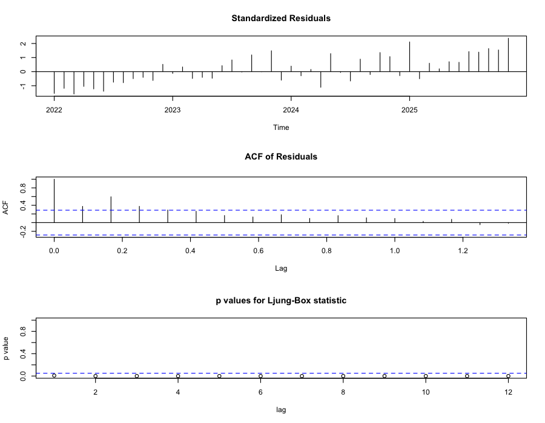
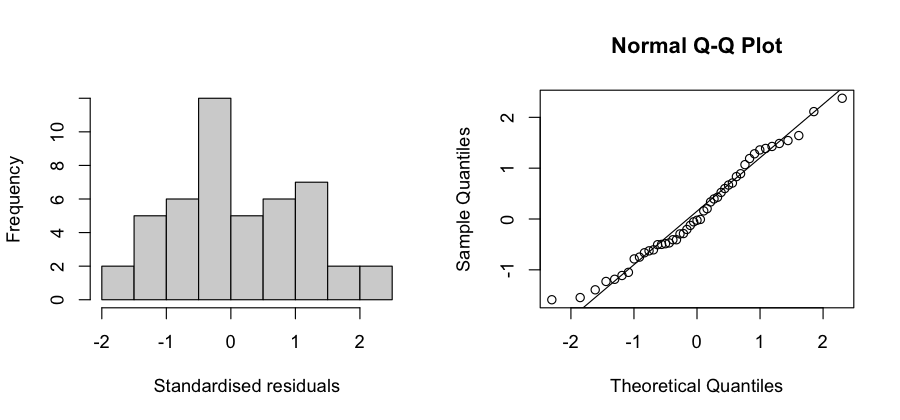
Coefficients:
ma1 sma1 intercept
0.8207 0.7143 40.7630
s.e. 0.0720 0.2758 3.8943
sigma^2 estimated as 88.72: log likelihood = -176.65, aic = 361.31
Shapiro-Wilk normality test (rstandard): W = 0.97323, p-value = 0.3498
tsdiag(m1, gof = 12):
Standardized Residuals อยู่ระหว่าง -1.59 ถึง 2.38
ACF of Residuals lag 1 = 0.375, lag 2 = 0.596, lag 3 = 0.376 เกินเส้นประ
Ljung-Box p-values lag 1 = 0.008 และใกล้ 0 ทุก lag ตั้งแต่ lag 2
\(X_t-40.7630=(1+0.8207B)(1+0.7143B^{12})w_t,\qquad w_t\sim iid\ N(0,\ 88.72)\)
Invertible: root of \(1+0.8207x\) is \(-1.218\), \(|-1.218|>1\); root of \(1+0.7143x^{12}\) has modulus \(1.4^{1/12}>1\).
Standardized residuals lie between −1.59 and 2.38, within ±3: no outliers.
ACF of residuals: lags 1–3 (0.375, 0.596, 0.376) are outside the bounds.
Ljung-Box p-values are below 0.05 at every lag (0.008 at lag 1, ≈ 0 after) → reject H0, residuals are still correlated.
Histogram and QQ plot are close to normal; Shapiro-Wilk p-value \(=0.35>0.05\) → residuals are normal.
The model is not adequate: the residuals are not white noise. The model has no differencing, so it cannot follow the upward trend and the yearly pattern in rain.
| ขั้น | เขียนว่า | ทำแบบนี้เพราะ / ตัวเลขมาจากไหน |
|---|---|---|
| 1 | \(X_t-40.7630\) | intercept ใน arima() คือค่าเฉลี่ย μ ของ X ต้องลบออกจาก X ทุกตัว ไม่ลบจาก w |
| 2 | \((1+0.8207B)\) | ma1 = 0.8207 ฝั่ง MA ใช้เครื่องหมายบวกตามที่ R ให้ ไม่ต้องกลับเครื่องหมาย |
| 3 | \((1+0.7143B^{12})\) | sma1 คือ MA ของฤดูกาล ใช้ \(B^{12}\) เพราะ period = 12 ถอยหลัง 12 เดือนคือเดือนเดียวกันของปีก่อน |
| 4 | ไม่มีวงเล็บฝั่ง X | order และ seasonal มีเลข AR เป็น 0 ทั้งคู่ Φ(B) = 1 |
| 5 | N(0, 88.72) | sigma^2 ใน output คือ σ² ของ w |
| 6 | ราก −1.218 | \(1+0.8207x=0\) ได้ \(x=-1/0.8207=-1.218\) ขนาดเกิน 1 ตาม ก7 |
| 7 | tsdiag แผงบน | standardized residual ไม่มีจุดไหนเกิน ±3 |
| 8 | tsdiag แผงกลาง | เส้นประอยู่ที่ \(\pm2/\sqrt{47}=\pm0.29\) · lag 1–3 สูงกว่าเส้น |
| 9 | tsdiag แผงล่าง | ทุกจุดอยู่ใต้เส้น 0.05 ปฏิเสธ H0 ที่บอกว่าโมเดลเหมาะสม |
⚠ Shapiro ผ่านไม่ได้ช่วยให้โมเดลผ่าน ข้อสำคัญที่สุดคือ residual ต้องไม่สัมพันธ์กัน ข้อนี้ตกตั้งแต่ Ljung-Box
auto.arima() กับ rain โดย stepwise = TRUE และ approximation = FALSE ได้ตัวแบบอะไร ตรวจ assumptions ให้ครบ เหมาะสมหรือไม่ แล้วพยากรณ์ Dec 2025 – Feb 2026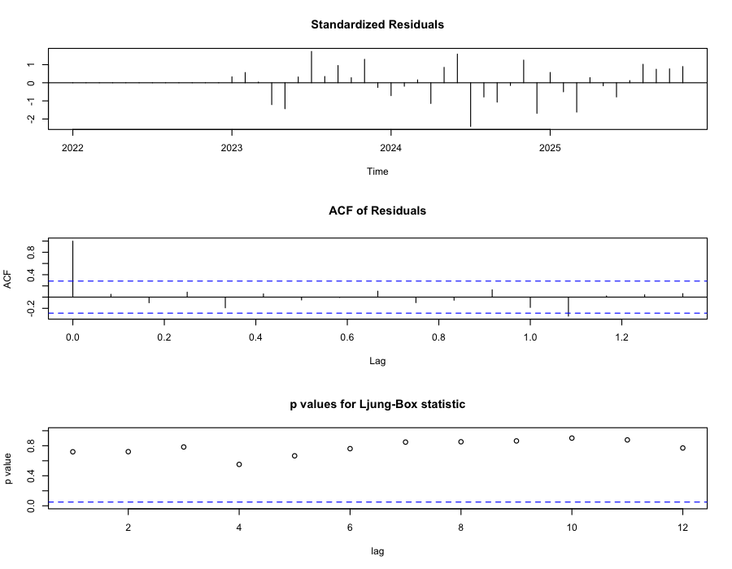
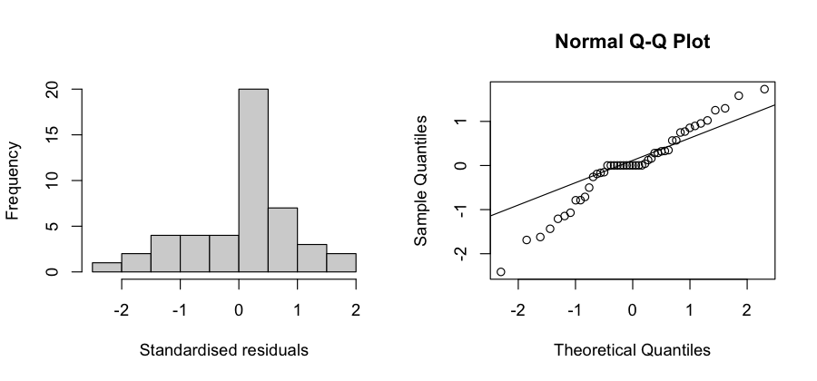
ARIMA(0,0,0)(0,1,0)[12] with drift
drift
1.0965
s.e. 0.0835
sigma^2 = 36.21: log likelihood = -111.97
AIC=227.94 AICc=228.31 BIC=231.05
Shapiro-Wilk normality test (rstandard): W = 0.95799, p-value = 0.08956
tsdiag(m2, gof = 12):
Standardized Residuals อยู่ระหว่าง -2.41 ถึง 1.73 · 12 ค่าแรกเป็น 0 เพราะ seasonal difference
ACF of Residuals อยู่ในเส้นประ มีแค่ lag 13 แตะเส้น
Ljung-Box p-values 0.55 ถึง 0.90 เหนือเส้น 0.05 ทุก lag
Point Forecast Lo 95 Hi 95
Dec 2025 63.60565 51.81180 75.39951
Jan 2026 71.37676 59.58291 83.17062
Feb 2026 65.80546 54.01160 77.59932
Model: \(ARIMA(0,0,0)\times(0,1,0)_{12}\) with drift
\((1-B^{12})(X_t-1.0965\,t)=w_t,\qquad w_t\sim iid\ N(0,\ 36.21)\)
Standardized residuals lie between −2.41 and 1.73, within ±3: no outliers.
ACF of residuals is within the bounds; Ljung-Box p-values are 0.55–0.90, above 0.05 at every lag → residuals are uncorrelated.
QQ plot is close to the line; Shapiro-Wilk p-value \(=0.090>0.05\) → residuals are normal.
The model is adequate. Forecasts: Dec 2025 = 63.61, Jan 2026 = 71.38, Feb 2026 = 65.81 mm.
| ขั้น | เขียนว่า | ทำแบบนี้เพราะ / ตัวเลขมาจากไหน |
|---|---|---|
| 1 | \((1-B^{12})\) | (0,1,0)[12] มี D = 1 คือ seasonal difference หนึ่งครั้ง \(X_t-X_{t-12}\) = ฝนเดือนนี้ลบเดือนเดียวกันปีก่อน |
| 2 | \(X_t-1.0965\,t\) | drift คือความชันของเส้นตรงต่อเดือน R เขียนโมเดลเป็น X ลบเส้นตรงแล้วค่อย difference |
| 3 | 13.158 | กระจายวงเล็บ: \(1.0965t-1.0965(t-12)=1.0965\times12=13.158\) เขียนอีกแบบได้ \(X_t-X_{t-12}=13.158+w_t\) คือฝนเพิ่มจากปีก่อนเฉลี่ย 13.158 มม. |
| 4 | 12 ค่าแรกเป็น 0 | seasonal difference ใช้ข้อมูลปีแรกเป็นจุดตั้งต้น residual ช่วงนั้นจึงเป็น 0 ไม่ใช่ปัญหาของโมเดล |
| 5 | 63.61 | พยากรณ์ = เดือนเดียวกันปีก่อน + 13.158 ฝน Dec 2024 = 50.448 บวก 13.158 ได้ 63.606 ตรงกับ output |
⚠ Shapiro p = 0.0896 ผ่านแบบเฉียด ๆ ให้เขียนตัวเลขจริงลงไป ไม่ต้องเขียนว่า "normal ชัดเจน"
ets() กับ rain ได้ exponential smoothing แบบใด อธิบายองค์ประกอบให้ครบ แล้วพยากรณ์ Dec 2025 – Feb 2026ETS(M,A,M)
Smoothing parameters:
alpha = 0.0103
beta = 0.0099
gamma = 1e-04
Initial states:
l = 13.1775
b = 1.228
sigma: 0.1315
AIC AICc BIC
344.1750 365.2784 375.6275
Point Forecast
Dec 2025 75.50196
Jan 2026 73.53086
Feb 2026 64.86492
ETS(M,A,M): multiplicative error, additive trend, multiplicative seasonality (Holt-Winters multiplicative).
\(\alpha=0.0103\) (level), \(\beta=0.0099\) (trend), \(\gamma=0.0001\) (seasonal): all close to 0, so level, slope and seasonal pattern change very little over time.
Initial level 13.18, initial slope 1.228 mm per month.
Forecasts: Dec 2025 = 75.50, Jan 2026 = 73.53, Feb 2026 = 64.86 mm.
| ขั้น | อ่านว่า | มาจากไหน |
|---|---|---|
| 1 | M ตัวแรก | error แบบคูณ ความคลาดเคลื่อนโตตามระดับฝน |
| 2 | A ตัวกลาง | trend แบบบวก ฝนเพิ่มเป็นเส้นตรง |
| 3 | M ตัวท้าย | seasonal แบบคูณ ช่วงฤดูฝนสูงกว่าเฉลี่ยเป็นสัดส่วน ไม่ใช่บวกเท่ากันทุกปี |
| 4 | alpha beta gamma เกือบ 0 | น้ำหนักที่ให้ข้อมูลใหม่น้อยมาก โมเดลแทบไม่ปรับตามข้อมูลล่าสุด ดูความหมายของ α β ใน L4 ตอน 3.2 |
| 5 | 1e-04 | \(1\times10^{-4}=0.0001\) |
⚠ อ่านชื่อ ETS เรียงเป็น Error, Trend, Seasonal เสมอ ตัวแรกไม่ใช่ trend
> mean(ea^2, na.rm = TRUE) [1] 38.37081 > mean(ee^2, na.rm = TRUE) [1] 57.09051
tsCV with h = 1: MSE of auto.arima = 38.37, MSE of ets = 57.09.
auto.arima has the smaller MSE, so ARIMA(0,0,0)(0,1,0)[12] with drift is more accurate for one-step forecasts.
AIC cannot be used here: ETS AIC (344.2) and ARIMA AIC (227.9) are computed on different scales (ARIMA after seasonal differencing), so they are not comparable.
| ขั้น | ทำอะไร | ทำไม |
|---|---|---|
| 1 | tsCV(x, f, h = 1) | R ใช้ข้อมูลถึงเดือน t ฟิตโมเดล แล้วพยากรณ์เดือน t+1 เลื่อนไปทีละเดือนจนสุดข้อมูล เก็บ error ทุกเดือน |
| 2 | ยกกำลังสองแล้วเฉลี่ย | MSE = ค่าเฉลี่ยของ error² ใส่ na.rm = TRUE เพราะเดือนแรก ๆ ข้อมูลยังไม่พอฟิต R ใส่ NA ไว้ |
| 3 | 38.37 < 57.09 | MSE น้อยกว่าคือพยากรณ์แม่นกว่า |
⚠ ข้อสอบ 2024 ข้อ 3ง ถามตรงนี้: ETS กับ ARIMA เทียบด้วย AIC ไม่ได้ ต้องเทียบด้วย error จากการพยากรณ์ เช่น tsCV หรือ RMSE บน test set
AirPassengers ใน R เป็นผู้โดยสารรายเดือน 1949–1960 ความแกว่งโตตามระดับ (ก) ใช้ auto.arima กับ log ของข้อมูล เขียนโมเดลและตรวจ assumption (ข) พยากรณ์ 3 เดือนข้างหน้าเป็นจำนวนผู้โดยสาร (ค) ใช้ ets กับ log ของข้อมูลแล้วเทียบกับ ARIMA ด้วย tsCV เริ่มที่ 60 เดือน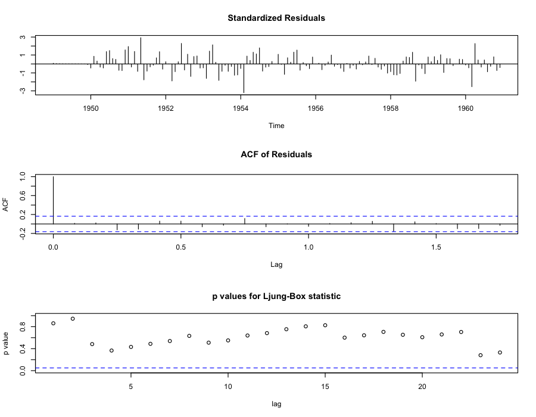
y <- log(AirPassengers)
a <- auto.arima(y, stepwise = T, approximation = F); a
qqnorm(rstandard(a)); qqline(rstandard(a))
shapiro.test(rstandard(a))
tsdiag(a, gof = 24, omit.initial = T)
f <- forecast(a, h = 3); exp(f$mean)
e <- ets(y); e
arimaerror <- tsCV(y, forecastarima, h = 1, initial = 60)
etserror <- tsCV(y, forecastets, h = 1, initial = 60)
mean(arimaerror^2, na.rm = TRUE); mean(etserror^2, na.rm = TRUE)ARIMA(0,1,1)(0,1,1)[12]
ma1 sma1
-0.4018 -0.5569
s.e. 0.0896 0.0731
sigma^2 = 0.001371: log likelihood = 244.7 AIC=-483.4
tsdiag: standardized residuals -3.20 to 2.93 · ACF inside bounds · Ljung-Box p 0.28 to 0.95
Shapiro-Wilk (rstandard): W = 0.98637, p-value = 0.1674
log forecasts: 6.110 6.054 6.172 exp: 450.4 425.7 479.0
ETS(M,A,M) AIC = -208.34
tsCV MSE: arima 0.001259 ets 0.001712
(a) \((1-B)(1-B^{12})\log X_t=(1-0.4018B)(1-0.5569B^{12})w_t,\quad w_t\sim iid\ N(0,\ 0.001371)\)
Invertible: roots \(1/0.4018=2.49>1\) and \(B^{12}\)-root modulus \((1/0.5569)^{1/12}>1\).
tsdiag: one standardized residual just below −3 (−3.20), the rest within ±3; ACF of residuals within the bounds; Ljung-Box p-values 0.28–0.95, above 0.05 at every lag. Shapiro-Wilk p-value \(=0.167>0.05\). Residuals are white noise and normal; the model is adequate.
(b) Forecasts on the log scale 6.110, 6.054, 6.172; back-transform with exp: Jan 1961 ≈ 450, Feb ≈ 426, Mar ≈ 479 passengers (thousands).
(c) tsCV MSE: ARIMA 0.00126 < ETS(M,A,M) 0.00171, so ARIMA is more accurate.
| ขั้น | เขียนว่า | มาจากไหน |
|---|---|---|
| 1 | \(\log X_t\) | ฟิตกับ log ต้องเขียน log ในโมเดลด้วย เหมือนข้อสอบ 2023 ข้อ 4a |
| 2 | \((1-B)(1-B^{12})\) | (0,1,1) มี d = 1 และ (0,1,1)[12] มี D = 1 ใส่วงเล็บ difference ทั้งสองตัว |
| 3 | \((1-0.4018B)\) | ma1 = −0.4018 ฝั่ง MA เครื่องหมายตาม R จึงเป็นลบ |
| 4 | exp(6.110) = 450.4 | log ย้อนกลับด้วย exp เพราะ exp กับ log หักล้างกัน ถ้าไม่ย้อนกลับจะได้คำตอบเป็นหน่วย log ซึ่งผิดหน่วย |
| 5 | AIC −483 กับ −208 | เทียบกันไม่ได้ ARIMA คิด likelihood หลัง difference ETS คิดบนข้อมูล log ทั้งชุด ต้องใช้ tsCV |
⚠ ARIMA(0,1,1)(0,1,1)[12] เรียกว่า airline model เจอบ่อยมากในข้อมูลรายเดือนที่มีทั้ง trend และฤดูกาล
german.txt ใน Class 9 เริ่ม ม.ค. 2008 จบ ต.ค. 2017 (ก) ใช้ auto.arima เขียนโมเดลและตรวจ assumption (ข) พยากรณ์ 3 เดือนข้างหน้า (ค) ใช้ ets แล้วเทียบด้วย tsCV แบบ h = 1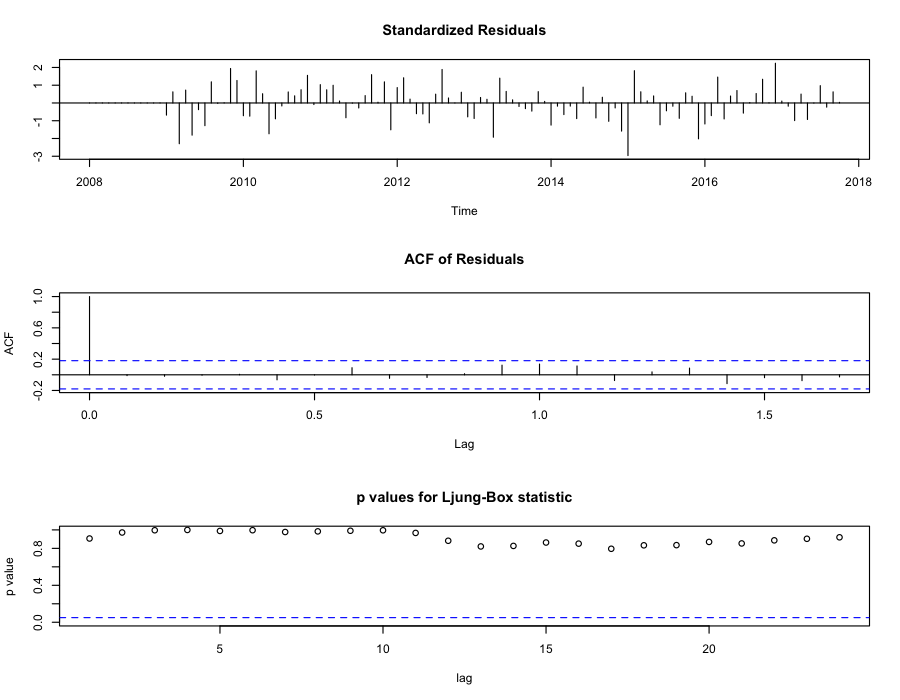
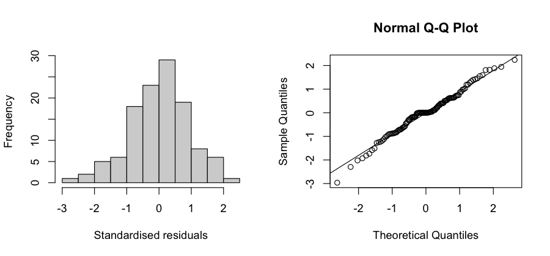
ARIMA(1,0,2)(0,1,1)[12]
ar1 ma1 ma2 sma1
-0.7947 0.7786 0.2115 -0.7618
s.e. 0.1201 0.1469 0.1013 0.1291
sigma^2 = 0.04883: log likelihood = 6.38 AIC=-2.77 BIC=10.55
shapiro.test(rstandard): p-value = 0.2263
forecast: Nov 2017 0.081 Dec 2017 0.324 Jan 2018 -0.621
ETS(A,N,A) forecast: 0.015 0.376 -0.528
tsCV MSE: ets 0.0863 arima 0.0770
(a) Model: ARIMA(1,0,2)(0,1,1)[12]
\((1+0.7947B)(1-B^{12})X_t=(1+0.7786B+0.2115B^2)(1-0.7618B^{12})w_t,\quad w_t\sim iid\ N(0,\ 0.04883)\)
tsdiag: standardized residuals between −2.96 and 2.24, within ±3; ACF of residuals within the bounds; Ljung-Box p-values 0.80–1.00, above 0.05 at every lag → residuals are uncorrelated.
QQ plot close to the line; Shapiro-Wilk p-value = 0.226 > 0.05 → residuals are normal. The model is adequate.
(b) Forecasts: Nov 2017 = 0.081, Dec 2017 = 0.324, Jan 2018 = −0.621.
(c) ets gives ETS(A,N,A). tsCV MSE: ARIMA 0.0770 < ETS 0.0863, so ARIMA is more accurate.
| ขั้น | เขียนว่า | ทำแบบนี้เพราะ / มาจากไหน |
|---|---|---|
| 1 | ts(data, start = 2008, frequency = 12) | ข้อมูลเริ่ม ม.ค. 2008 เขียนแค่ปีได้เพราะเริ่มเดือนแรก ถ้าเริ่ม มี.ค. ใช้ start = c(2008, 3) ตามคอมเมนต์ในไฟล์อาจารย์ |
| 2 | \((1+0.7947B)\) | ar1 = −0.7947 ฝั่ง AR กลับเครื่องหมาย ลบกลายเป็นบวก |
| 3 | \((1-B^{12})\) | (0,1,1)[12] ตัวกลางคือ D = 1 · ไม่มีตัว d ฝั่ง non-seasonal |
| 4 | \((1+0.7786B+0.2115B^2)\) | ma1, ma2 ใส่ตาม R |
| 5 | \((1-0.7618B^{12})\) | sma1 = −0.7618 ใส่ตาม R |
| 6 | ETS(A,N,A) | error บวก ไม่มี trend ฤดูกาลบวก · alpha กับ gamma เกือบ 0 คือ level และฤดูกาลแทบคงที่ |
⚠ output ของ R ที่ได้เทียบกับที่อาจารย์ได้ใน Class 9 ได้เลย ถ้าโมเดลตรงกัน แปลว่าสคริปต์ที่ดัดแปลงถูกต้อง
g0 <- ts(read.table("german.txt", h = F)[, 1]) แล้วรัน auto.arima ได้ ARIMA(0,0,1) with non-zero mean sigma^2 = 0.1055 ส่วนเพื่อนที่ใส่ frequency = 12 ได้ ARIMA(1,0,2)(0,1,1)[12] sigma^2 = 0.0488 เกิดอะไรขึ้น และโมเดลไหนถูกWithout frequency = 12, R treats the data as non-seasonal, so auto.arima cannot add seasonal terms and fits only ARIMA(0,0,1).
The seasonal model has a much smaller error variance (0.0488 vs 0.1055), and inflation has a monthly pattern, so ARIMA(1,0,2)(0,1,1)[12] is correct.
The AIC of the two models should not be compared: one has a seasonal difference and the other does not.
| ขั้น | เขียนว่า | ทำแบบนี้เพราะ / มาจากไหน |
|---|---|---|
| 1 | ไม่มี [12] ต่อท้าย | ชื่อโมเดลไม่มีวงเล็บฤดูกาลเลย เป็นสัญญาณว่าลืม frequency |
| 2 | σ² ห่างกันเท่าตัว | error ที่ใหญ่กว่าคือรูปแบบฤดูกาลที่ไม่ได้ใส่ในโมเดล ไปค้างอยู่ใน residual |
⚠ ก่อนรันอะไรให้พิมพ์ชื่อ ts ออกมาดูก่อน ถ้า R แสดงเป็นตารางเดือน Jan–Dec แปลว่าตั้ง frequency ถูกแล้ว
x <- ts(rain$rain, start = c(2022, 1), frequency = 12)
st <- ts(rain$storm, start = c(2022, 1), frequency = 12)
tr <- window(x, end = c(2024, 12)); te <- window(x, start = c(2025, 1))
s1 <- window(st, end = c(2024, 12)); s2 <- window(st, start = c(2025, 1))
m1 <- auto.arima(tr, stepwise = TRUE, approximation = FALSE) # ARIMA
m2 <- auto.arima(tr, stepwise = TRUE, approximation = FALSE, xreg = s1) # ARIMAX
set.seed(1); m3 <- nnetar(tr) # NNAR
set.seed(1); m4 <- nnetar(tr, xreg = s1) # NNAR + xreg
accuracy(forecast(m1, h = 11)$mean, te)
accuracy(forecast(m2, xreg = s2)$mean, te)
accuracy(forecast(m3, h = 11)$mean, te)
accuracy(forecast(m4, xreg = s2)$mean, te)จุดที่ต้องจำ 3 จุด
set.seed() ก่อน nnetar ทุกครั้ง network เริ่มจากน้ำหนักสุ่ม ผลจึงเปลี่ยนทุกรอบaccuracy() ค่าน้อยกว่าคือแม่นกว่า| ตัวแบบ | ชื่อจาก R | RMSE test |
|---|---|---|
| 1 | ARIMA(0,0,0)(0,1,0)[12] with drift | 4.85 |
| 2 | Regression with ARIMA(0,0,0)(0,1,0)[12] errors | 5.00 |
| 3 | NNAR(1,1,2)[12] | ≈ 5.6–6.3 ขึ้นกับ seed |
| 4 | NNAR(1,1,2)[12] with storm | ≈ 60–65 |
Model 1 is the most accurate. The rain series has a clear yearly pattern and an upward drift, which seasonal differencing with drift captures well; only 36 training months are available, so simpler models win.
Adding storm does not help: its coefficient is about 4.6 mm, but the effect of storms in the test period is irregular, so RMSE rises slightly to 5.00.
NNAR needs much more data than 36 points, so it is worse than ARIMA and depends on the random seed.
NNAR with storm fails badly: storms are rare in training, the network learns an extreme response, and recursive forecasts carry the jump forward.
| ขั้น | ทำอะไร | ทำไม |
|---|---|---|
| 1 | ชื่อโมเดล 2 | auto.arima ที่มี xreg R เรียกว่า "Regression with ARIMA errors" คือ ARIMAX ให้ลอกชื่อตามที่ R พิมพ์ |
| 2 | NNAR(1,1,2)[12] | ใช้ lag 1 หนึ่งตัว lag ฤดูกาล 1 ตัว และ hidden node 2 ตัว ดูL12 |
| 3 | อภิปรายครบ 4 แถว | ข้อนี้ให้ 1 คะแนนสำหรับอภิปราย ให้ตอบทั้งว่าตัวไหนชนะและทำไมตัวที่แพ้ถึงแพ้ |
⚠ เฉลยเต็มพร้อมโค้ดอยู่ในแบบฝึก L13 ข้อ 13 ตัวเลข NNAR ของแต่ละคนจะไม่ตรงกันเป๊ะ ให้เขียน seed ที่ใช้ลงในคำตอบ
lap จาก package astsa ใช้ cmort เป็นตัวแปรตาม ในคลาสใช้แค่ tempr กับ part ให้สร้างโมเดลที่ใช้ตัวแปรอื่นเพิ่ม แล้วบอกว่าดีขึ้นหรือไม่ ใช้ 52 สัปดาห์สุดท้ายเป็น test setlap ไม่ต้องอ่านไฟล์ โหลด astsa แล้วใช้ได้เลย เป็นข้อมูลรายสัปดาห์ 1970 ถึงสัปดาห์ 40 ของ 1979 รวม 508 สัปดาห์ ตั้ง frequency 52 ไว้แล้ว คอลัมน์ cmort, tempr, part ตรงกับ cardiac ที่อาจารย์ใช้ทำ VAR ใน Class 10 ทุกค่า โค้ดข้างล่างเขียนตามขั้น ARIMAX ของอาจารย์ใน Class 10 และตัด train/test ที่จุดเดียวกับ VAR ของอาจารย์
library(forecast); library(astsa); library(TSA)
y <- lap[, "cmort"]
X1 <- lap[, c("tempr", "part")] # ตัวแปรในคลาส
X2 <- lap[, c("tempr", "part", "rh", "co", "so2", "no2", "o3")] # เพิ่มอีก 5 ตัว
# แบ่ง train/test แบบ VAR ของอาจารย์: test = 52 สัปดาห์สุดท้าย
con_training <- window(y, end = c(1978, 40)); con_test <- window(y, start = c(1978, 41))
x1_training <- window(X1, end = c(1978, 40)); x1_test <- window(X1, start = c(1978, 41))
x2_training <- window(X2, end = c(1978, 40)); x2_test <- window(X2, start = c(1978, 41))
# ARIMAX แบบในคลาส
arimax1 <- auto.arima(con_training, stepwise = T, approximation = F, xreg = x1_training)
arimax1
accuracy(con_test, forecast(arimax1, xreg = x1_test)$mean)
# ARIMAX ที่เพิ่มตัวแปร
arimax2 <- auto.arima(con_training, stepwise = T, approximation = F, xreg = x2_training)
arimax2
accuracy(con_test, forecast(arimax2, xreg = x2_test)$mean)
# Diagnostic ของโมเดลใหม่
hist(rstandard(arimax2)); qqnorm(rstandard(arimax2)); qqline(rstandard(arimax2))
shapiro.test(rstandard(arimax2))
tsdiag(arimax2, gof = 30, omit.initial = T)train 456 สัปดาห์ test 52 สัปดาห์ แต่ละ auto.arima ใช้เวลาประมาณ 2–3 นาที
arimax1: Regression with ARIMA(3,1,2)(1,0,0)[52] errors AICc = 2849.06 RMSE test 7.25
arimax2: Regression with ARIMA(2,1,1)(1,0,0)[52] errors AICc = 2839.59 RMSE test 7.13
tempr part rh co so2 no2 o3
coef -0.0741 0.1376 -0.0815 0.1999 0.6199 -0.4151 0.2811
s.e. 0.0916 0.0539 0.0285 0.2613 0.5236 0.1780 0.1575
rstandard −2.74 ถึง 3.64 Shapiro p = 0.177 Ljung-Box p: lag 10 0.864 lag 20 0.069 lag 30 0.030
Class model (tempr, part): Regression with ARIMA(3,1,2)(1,0,0)[52] errors, AICc = 2849.06, test RMSE = 7.25.
Extended model (tempr, part, rh, co, so2, no2, o3): Regression with ARIMA(2,1,1)(1,0,0)[52] errors, AICc = 2839.59, test RMSE = 7.13.
Both models use d = 1 and the same training data, so their AICc can be compared: the extended model has lower AICc and lower test RMSE, so the extra variables improve the class model.
Significant regressors (|coef/s.e.| > 2): part (2.55), rh (−2.86) and no2 (−2.33); tempr, co, so2 and o3 are not significant, so a smaller model with part, rh and no2 is a reasonable next step.
Residuals look normal (Shapiro p = 0.177), but the Ljung-Box p-value falls below 0.05 at lag 30, so some autocorrelation remains.
| ขั้น | เขียนว่า | มาจากไหน |
|---|---|---|
| 1 | window(..., end = c(1978, 40)) | เหมือน cardiacTrain ของอาจารย์ ข้อมูลจบที่ 1979 สัปดาห์ 40 ถอยไป 52 สัปดาห์คือ 1978 สัปดาห์ 40 |
| 2 | lap[, c("tempr", "part")] | เลือกหลายคอลัมน์ได้ ts หลายตัวแปร ใช้ window ตัดช่วงเหมือน y ได้เลย |
| 3 | เทียบ AICc ได้ | ข้อมูล train ชุดเดียวกัน d = 1 เท่ากัน ไม่มี D ทั้งคู่ |
| 4 | 2.55 | part: \(0.1376\div0.0539=2.55\) เกิน 2 |
| 5 | −2.86 และ −2.33 | rh: \(-0.0815\div0.0285=-2.86\) · no2: \(-0.4151\div0.1780=-2.33\) |
| 6 | ตัวที่ไม่ผ่าน | tempr −0.81 · co 0.77 · so2 1.18 · o3 1.78 ขนาดไม่ถึง 2 |
⚠ ข้อนี้เป็นรายงาน 15 คะแนน ให้ใส่ทั้ง output, เหตุผลที่เลือกตัวแปร, ตัวเลขเทียบ และข้อสรุป ข้อ 3.3 แสดงว่า SARIMA ที่ไม่มี xreg ได้ RMSE test 6.82 ดีกว่าทั้งสองโมเดลนี้ ถ้าใส่ไว้เทียบด้วยจะได้รายงานที่ครบกว่า
⚠ auto.arima บนข้อมูลรายสัปดาห์ช้า ถ้าในห้องสอบรอไม่ไหว ให้เปลี่ยนเป็น approximation = T แล้วเขียนบอกในรายงานว่าใช้ค่าประมาณ ชื่อโมเดลอาจต่างจากข้างบน
# ใช้ con_training, con_test, x1_training, x1_test จากข้อ 3.2
arima0 <- auto.arima(con_training, stepwise = T, approximation = F) # ฐานเทียบ
accuracy(con_test, forecast(arima0, h = 52)$mean)
set.seed(11)
nnar1 <- nnetar(con_training, xreg = x1_training)
nnar1
accuracy(con_test, forecast(nnar1, xreg = x1_test, PI = F)$mean)
# VAR(2) ของอาจารย์ใน Class 10 ไว้เทียบ
library(vars); library(tswge); data(cardiac)
cardiacTrain <- window(cardiac, start = c(1970,1), end = c(1978,40))
cardiacTest <- window(cardiac, start = c(1978,41), end = c(1979,40))
CMortVAR2 <- VAR(cardiacTrain, type = "both", season = 52, p = 2)
preds2 <- predict(CMortVAR2, n.ahead = 52)
sqrt(mean((cardiacTest[,"cmort"] - preds2$fcst$cmort[,1])^2))VAR(2) ในคลาส tempr+part ทั้งสามเป็น endogenous RMSE test 6.35 ARIMA ไม่มี xreg ARIMA(2,0,0)(1,1,0)[52] with drift RMSE test 6.82 ARIMAX tempr+part Regression with ARIMA(3,1,2)(1,0,0)[52] RMSE test 7.25 NNAR tempr+part NNAR(15,1,10)[52] sigma^2 1.44 RMSE test 12.21
Approach 1, ARIMAX (regression with ARIMA errors): Regression with ARIMA(3,1,2)(1,0,0)[52] errors, test RMSE 7.25.
Approach 2, NNAR with xreg: NNAR(15,1,10)[52] fits the training data very closely (σ² = 1.44) but its test RMSE is 12.21, so it overfits.
Neither approach beats the class VAR(2) (test RMSE 6.35), and ARIMAX is even worse than a SARIMA without regressors (6.82): the seasonal difference D = 1 captures the yearly pattern better than tempr does.
Conclusion: keep VAR(2). Unlike ARIMAX, VAR also forecasts tempr and part itself, so it does not need their future values.
| ขั้น | คิดอย่างไร | เหตุผล |
|---|---|---|
| 1 | มี VAR(2) และ ARIMA ไม่มี xreg ไว้เทียบ | โจทย์ถามว่าปรับปรุงโมเดลในคลาสได้ไหม ต้องมีตัวเลขของโมเดลเดิมก่อน |
| 2 | ไม่เทียบ AIC ระหว่าง ARIMA กับ ARIMAX | ARIMA มี D = 1 ส่วน ARIMAX มี d = 1 ข้อมูลที่ใช้คิด likelihood ไม่เหมือนกัน ใช้ RMSE บน test แทน |
| 3 | σ² ต่ำแต่ test แย่ | เข้ากับ train ได้ดีมากแต่พยากรณ์ของใหม่แย่คือ overfit network มี 201 น้ำหนักแต่ train มีแค่ 456 สัปดาห์ |
| 4 | ARIMAX กับ VAR ต่างกัน | VAR ให้ทุกตัวแปรพยากรณ์กันเอง ARIMAX ให้ X เป็นตัวที่รู้ค่าอยู่แล้ว ดูL11 |
⚠ ผลที่ได้ไม่ต้องดีขึ้นก็ได้คะแนน โจทย์ให้คะแนนที่วิธีคิด ตัวเลขเทียบ และการอธิบายว่าทำไมผลออกมาแบบนั้น
(a) The value of storm for Dec 2025. ARIMAX needs future values of every regressor.
(b) Either forecast storm first, use scenarios (storm = 0 and storm = 1), or use a model without the regressor such as Model 1.
(c) NNAR has no likelihood-based AIC comparable to ARIMA. Test-set RMSE measures every model the same way, on data the models did not see.
| ข้อ | คิดอย่างไร | เหตุผล |
|---|---|---|
| ก | xreg ต้องมีค่าในอนาคต | สมการมี storm อยู่ในตัว ไม่มีค่า storm ก็คำนวณไม่ได้ |
| ข | ทำ scenario | เป็นวิธีมาตรฐานเมื่อ X ในอนาคตไม่แน่นอน |
| ค | ไม้บรรทัดเดียวกัน | AIC เทียบได้เฉพาะโมเดลตระกูลเดียวกันที่ใช้ข้อมูลชุดเดียวกัน |
auto.arima(tr, stepwise = T, approximation = F, xreg = s1) ได้ Regression with ARIMA(0,0,0)(0,1,0)[12] errors drift = 1.02 และ xreg (storm) = 4.58 (ก) เขียนโมเดล (ข) ถ้าเดือนหน้ามีพายุ ค่าพยากรณ์จะต่างจากกรณีไม่มีพายุเท่าไร(a) \(y_t=1.02\,t+4.58\,\text{storm}_t+\eta_t,\qquad (1-B^{12})\eta_t=w_t,\quad w_t\sim iid\ N(0,\sigma^2)\)
(b) A storm month adds 4.58 mm to the forecast compared with a month without a storm, all else equal.
| ขั้น | เขียนว่า | ทำแบบนี้เพราะ / มาจากไหน |
|---|---|---|
| 1 | สองบรรทัด | ARIMAX เขียนเป็น regression หนึ่งบรรทัด ส่วน error η ที่เป็น ARIMA อีกหนึ่งบรรทัด ตามรูปใน L11 |
| 2 | 4.58 | storm เป็น 0 หรือ 1 สัมประสิทธิ์ของมันคือผลต่างระหว่างมีกับไม่มีพายุตรง ๆ |
⚠ ARIMAX ต้องรู้ storm ของเดือนที่จะพยากรณ์ ถ้าไม่รู้ ต้องทำ scenario ทั้งสองแบบ
ARIMAX with price is the most accurate (RMSE 9.8): price carries real information about sales.
NNAR fits the training data very closely (σ² = 2.3) but its test RMSE is high, which is overfitting.
NNAR with price is the worst (31.0): the network learns an unstable response to price and recursive forecasts amplify it.
| ขั้น | เขียนว่า | ทำแบบนี้เพราะ / มาจากไหน |
|---|---|---|
| 1 | ดู RMSE test เท่านั้น | ตัวเลขใน train บอกแค่ว่าเข้ากับข้อมูลที่เห็นแล้วแค่ไหน |
| 2 | อภิปรายทุกแถว | แบบเดียวกับ 2025 ข้อ 5g ที่ให้คะแนนการอภิปราย |
โจทย์มักเขียนว่า "Write out the fitted model, carefully stating all the model assumptions" คะแนนแบ่งเป็นสองส่วน คือสมการที่ถูกเครื่องหมาย กับรายการ assumption
Regression with ARIMA(...) errors ให้แยกสองบรรทัด: บรรทัด 1 คือ \(y_t=\)intercept หรือ drift·t + slope·x + \(\eta_t\) บรรทัด 2 คือ ARIMA ของ \(\eta_t\) ตามขั้น 2–5 ดูข้อ 4.9–4.12 ar1 ar2 ma1 ma2 intercept
1.6009 -0.6445 -1.4982 0.5219 26.4163
s.e. 0.1886 0.1839 0.2104 0.2094 0.7954
sigma^2 estimated as 791.7: log likelihood = -1973.88, aic = 3959.76
Write out the fitted model, carefully stating all the model assumptions.\((1-1.6009B+0.6445B^2)(X_t-26.4163)=(1-1.4982B+0.5219B^2)w_t\)
where \(w_t\sim iid\ N(0,\ 791.7)\).
Assumptions: \(\{w_t\}\) is Gaussian white noise with mean 0 and variance 791.7; \(X_t\) is stationary with mean 26.4163; the model is causal and invertible (all AR and MA roots exceed 1 in modulus: 1.246 and 1.056, 1.815).
| ขั้น | เขียนว่า | มาจากไหน |
|---|---|---|
| 1 | \(-1.6009B\) | ar1 = 1.6009 ฝั่ง AR กลับเครื่องหมาย บวกกลายเป็นลบ |
| 2 | \(+0.6445B^2\) | ar2 = −0.6445 กลับเครื่องหมาย ลบกลายเป็นบวก ตาม ก2: \(-(-0.6445)=+0.6445\) |
| 3 | \(-1.4982B+0.5219B^2\) | ma ใส่ตาม R ตรง ๆ |
| 4 | \(X_t-26.4163\) | intercept ของ arima() คือ mean ของ X ไม่ใช่ค่าคงที่ที่บวกท้ายสมการ |
| 5 | รากทุกตัวเกิน 1 | คำนวณไว้แล้วในข้อ 1.7 |
⚠ s.e. ไม่ต้องใส่ในสมการ ใช้แค่ตอนถามว่าพารามิเตอร์มีนัยสำคัญหรือไม่ โดยดูว่า |ค่า ÷ s.e.| เกิน 2 หรือไม่
ar1 ma1 sar1 sma1 intercept
0.9139 0.0403 0.9998 -0.9884 -0.0060
s.e. 0.0114 0.0277 0.0002 0.0080 0.1354
sigma^2 estimated as 0.006561
Write out the fitted model, carefully stating all the model assumptions.\((1-0.9139B)(1-0.9998B^{12})(X_t+0.0060)=(1+0.0403B)(1-0.9884B^{12})w_t\)
where \(w_t\sim iid\ N(0,\ 0.006561)\).
Assumptions: \(\{w_t\}\) Gaussian white noise; the model is causal and invertible; residuals uncorrelated and normal.
Comments: sar1 = 0.9998 is almost 1, so the seasonal AR root is almost on the unit circle; a seasonal difference \((1-B^{12})\) may be more suitable. sar1 and sma1 almost cancel, which suggests parameter redundancy. ma1 is not significant (0.0403/0.0277 = 1.45 < 2) and neither is the intercept.
| ขั้น | เขียนว่า | มาจากไหน |
|---|---|---|
| 1 | \((1-0.9139B)\) | ar1 กลับเครื่องหมาย |
| 2 | \((1-0.9998B^{12})\) | sar1 คือ AR ของฤดูกาล กลับเครื่องหมายเหมือน ar แต่ใช้ \(B^{12}\) |
| 3 | \(X_t+0.0060\) | \(X_t-\mu\) โดย μ = −0.0060 ได้ \(X_t-(-0.0060)=X_t+0.0060\) ตาม ก2 |
| 4 | \((1+0.0403B)(1-0.9884B^{12})\) | ma1 และ sma1 ใส่ตาม R |
| 5 | เกือบ 1 | 0.9998 ห่างจาก 1 แค่ 0.0002 ราก \(1/0.9998\) แทบเท่ากับ 1 ไม่ถึงกับไม่ causal แต่ใกล้มาก เหมือนมี seasonal unit root |
| 6 | เกือบหักล้าง | \((1-0.9998B^{12})\) กับ \((1-0.9884B^{12})\) หน้าตาเกือบเหมือนกันทั้งสองฝั่ง ตัดกันได้เกือบหมดตามแนวคิดในข้อ 1.1 |
⚠ ข้อนี้คะแนน 4 คะแนน สมการถูกอย่างเดียวอาจได้ไม่เต็ม ให้เขียน comment ข้อ 5–6 ด้วย
M2 <- arima(log(x), order = c(3,0,0), seasonal = c(0,1,1))
ar1 ar2 ar3 sma1
0.9197 0.1577 -0.1710 -0.8080
s.e. 0.0434 0.0592 0.0438 0.0285
sigma^2 estimated as 0.03632: log likelihood = 117.48, aic = -224.96
Write out the fitted model for M2, carefully stating all the model assumptions.\((1-0.9197B-0.1577B^2+0.1710B^3)(1-B^{12})\log x_t=(1-0.8080B^{12})w_t\)
where \(w_t\sim iid\ N(0,\ 0.03632)\).
Assumptions: \(\{w_t\}\) Gaussian white noise; the AR part is causal (roots of \(\Phi(x)\) exceed 1 in modulus); the seasonal MA part is invertible \((|-0.8080|<1)\); no intercept because of the seasonal difference.
| ขั้น | เขียนว่า | มาจากไหน |
|---|---|---|
| 1 | \(-0.9197B-0.1577B^2\) | ar1 และ ar2 เป็นบวก กลับเป็นลบ |
| 2 | \(+0.1710B^3\) | ar3 = −0.1710 กลับเป็นบวก จุดนี้พลาดบ่อยที่สุด |
| 3 | \((1-B^{12})\) | seasonal = c(0,1,1) ตัวกลางคือ D = 1 · โจทย์ไม่เขียน period แต่ข้อมูลเป็น ts รายเดือน R ใช้ 12 ให้เอง |
| 4 | \(\log x_t\) | ฟิตกับ log(x) ต้องเขียน log ในโมเดล |
| 5 | ไม่มี intercept | arima() ตัด intercept ทิ้งเองเมื่อมี difference เพราะ difference ลบค่าคงที่หายไปแล้ว |
arima(x = Nile, order = c(1, 0, 1))
ar1 ma1 intercept
0.8611 -0.5177 920.5567
s.e. 0.1067 0.1908 46.6736
sigma^2 estimated as 19892: log likelihood = -637.04, aic = 1282.08
ให้เขียนตัวแบบ ARIMA(1,0,1) จากผลลัพธ์ โดยเขียนให้อยู่ในรูป backshift และระบุข้อสมมติของตัวแบบให้ครบถ้วน\((1-0.8611B)(X_t-920.5567)=(1-0.5177B)w_t,\qquad w_t\sim iid\ N(0,\ 19892)\)
Causal: root of \(1-0.8611x\) is \(1.161>1\). Invertible: root of \(1-0.5177x\) is \(1.932>1\).
Assumptions: \(w_t\) Gaussian white noise, mean of \(X_t\) is 920.56, residuals uncorrelated and normal.
| ขั้น | เขียนว่า | มาจากไหน |
|---|---|---|
| 1 | 1.161 | \(1-0.8611x=0\) ได้ \(x=1/0.8611=1.161\) |
| 2 | 1.932 | \(1-0.5177x=0\) ได้ \(x=1/0.5177=1.932\) |
ARIMA(1,1,1)
ar1 ma1
0.2544 -0.8741
s.e. 0.1194 0.0605
sigma^2 = 20177: log likelihood = -630.63
เขียนโมเดลและบอกว่า ar1 มีนัยสำคัญหรือไม่\((1-0.2544B)(1-B)X_t=(1-0.8741B)w_t,\qquad w_t\sim iid\ N(0,\ 20177)\)
ar1: 0.2544/0.1194 = 2.13 > 2 → significant. ma1: 0.8741/0.0605 = 14.4 → significant.
| ขั้น | เขียนว่า | มาจากไหน |
|---|---|---|
| 1 | \((1-B)\) | ตัวกลางของ (1,1,1) คือ d = 1 |
| 2 | ไม่มี μ | มี difference R จึงไม่ใส่ intercept และ output ไม่มีคำว่า drift |
| 3 | 2.13 | หาร coefficient ด้วย s.e. ถ้าขนาดเกิน 2 ถือว่ามีนัยสำคัญที่ระดับประมาณ 5% |
ARIMA(0,0,0)(0,1,0)[12] with drift ที่ drift = 1.0965 และ σ² = 36.21 ในรูป backshift แล้วเขียนอีกแบบที่ไม่มีตัว t\((1-B^{12})(X_t-1.0965\,t)=w_t,\qquad w_t\sim iid\ N(0,\ 36.21)\)
\(X_t-X_{t-12}-1.0965\,t+1.0965(t-12)=w_t\)
\(X_t-X_{t-12}=13.158+w_t\)
| ขั้น | ทำอะไร | ทำไม |
|---|---|---|
| 1 | กระจาย \((1-B^{12})\) | \(B^{12}\) ทำกับทุกอย่างในวงเล็บ \(X_t\) กลายเป็น \(X_{t-12}\) และ \(t\) กลายเป็น \(t-12\) |
| 2 | \(-1.0965t+1.0965(t-12)\) | ลบหน้าวงเล็บกระจายเข้า ได้ \(-1.0965t+1.0965t-13.158=-13.158\) ตัว t หักล้างกัน |
| 3 | ย้าย −13.158 ไปขวา | ก1: ลบกลายเป็นบวก ได้ \(+13.158\) |
⚠ drift ไม่ใช่ intercept แบบ μ: drift คูณกับ t ส่วน intercept ไม่มี t
arima(x, order = c(1,0,0), seasonal = list(order = c(1,0,0), period = 12))
ar1 sar1 intercept
0.5200 0.3100 15.2000
sigma^2 estimated as 2.4เขียนโมเดลในรูป backshift\((1-0.52B)(1-0.31B^{12})(X_t-15.2)=w_t,\qquad w_t\sim iid\ N(0,\ 2.4)\)
| ขั้น | เขียนว่า | ทำแบบนี้เพราะ / มาจากไหน |
|---|---|---|
| 1 | \((1-0.52B)\) | ar1 บวก กลับเป็นลบ |
| 2 | \((1-0.31B^{12})\) | sar1 คือ AR ฤดูกาล กลับเครื่องหมายเหมือน ar ใช้ \(B^{12}\) |
| 3 | \(X_t-15.2\) | ไม่มี difference R จึงมี intercept คือ mean |
| 4 | ฝั่งขวาเหลือ \(w_t\) | ไม่มี ma ไม่มี sma |
Arima(x, order = c(0,1,1), include.drift = TRUE) ได้ ma1 = −0.45, drift = 0.8, sigma^2 = 1.9 เขียนโมเดลสองแบบ แบบมี t และแบบที่ใช้ \(\nabla X_t\)\((1-B)(X_t-0.8\,t)=(1-0.45B)w_t,\qquad w_t\sim iid\ N(0,\ 1.9)\)
\(\nabla X_t-0.8=w_t-0.45w_{t-1}\)
| ขั้น | เขียนว่า | ทำแบบนี้เพราะ / มาจากไหน |
|---|---|---|
| 1 | กระจาย \((1-B)\) | \(0.8t-0.8(t-1)=0.8\) ตัว t หาย เหลือค่าคงที่ 0.8 ซึ่งคือ mean ของผลต่าง |
| 2 | แบบที่สอง | เหมือนที่อาจารย์เขียนใน L8: \(\nabla X_t-0.0049=0.3481(\nabla X_{t-1}-0.0049)-0.8278w_{t-1}+w_t\) คือเอาค่าคงที่ไปลบจาก \(\nabla X\) |
⚠ drift ของ d = 1 คือค่าเฉลี่ยของผลต่างต่อหนึ่งช่วงเวลา ไม่ต้องคูณ 12 แบบ seasonal difference ในข้อ 4.6
Regression with ARIMA(1,0,0) errors
ar1 intercept price
0.6000 50.0000 -2.3000
sigma^2 = 4.1เขียนโมเดล\(y_t=50-2.3\,\text{price}_t+\eta_t\)
\((1-0.6B)\eta_t=w_t,\qquad w_t\sim iid\ N(0,\ 4.1)\)
| ขั้น | เขียนว่า | ทำแบบนี้เพราะ / มาจากไหน |
|---|---|---|
| 1 | แยกสองบรรทัด | regression บรรทัดแรก error ที่เป็น AR(1) บรรทัดที่สอง |
| 2 | −2.3 | ราคาขึ้น 1 หน่วย ยอดขายลด 2.3 หน่วย |
⚠ อย่าใส่ \((1-0.6B)\) คูณ \(y_t\) ตรง ๆ ตัว AR อยู่ที่ error ไม่ได้อยู่ที่ y
auto.arima(con_training, xreg = inc_training) ได้Regression with ARIMA(1,0,2) errors
ar1 ma1 ma2 intercept xreg
0.5819 -0.5345 0.1843 0.6168 0.2781
sigma^2 = 0.3543(ก) เขียนโมเดลพร้อม assumption (ข) แปลความหมายค่า 0.2781(a) \(\text{consumption}_t=0.6168+0.2781\,\text{income}_t+\eta_t\)
\(\eta_t=0.5819\,\eta_{t-1}+w_t-0.5345\,w_{t-1}+0.1843\,w_{t-2}\)
\(w_t\sim iid\ N(0,\ 0.3543)\)
Assumptions: the ARMA(1,2) error is causal and invertible, and the residuals are white noise and normally distributed.
(b) When income rises by 1 unit, consumption rises by 0.2781 units on average in the same quarter.
| ขั้น | เขียนว่า | ทำแบบนี้เพราะ / มาจากไหน |
|---|---|---|
| 1 | บรรทัด 1 มี 0.6168 กับ 0.2781 | intercept กับ xreg เป็นของ regression คอลัมน์ xreg คือ slope หน้า income |
| 2 | ต่อท้ายด้วย \(\eta_t\) | \(\eta\) คือส่วนที่ income อธิบายไม่ได้ ARIMA(1,0,2) ในชื่อโมเดลเป็นของ \(\eta\) |
| 3 | \(+0.5819\,\eta_{t-1}\) | เขียนแบบไม่มี B ar ใช้เครื่องหมายตาม R ถ้าเขียนรูป B ได้ \((1-0.5819B)\eta_t\) |
| 4 | \(-0.5345\,w_{t-1}+0.1843\,w_{t-2}\) | ma ใช้เครื่องหมายตาม R ทุกแบบ |
| 5 | \(N(0,\ 0.3543)\) | ลอก sigma^2 ตรง ๆ ไม่ต้องถอดราก |
⚠ intercept ของ ARIMAX ไม่ใช่ค่าเฉลี่ยของ consumption แต่คือค่าของ consumption ตอน income = 0
auto.arima(y, xreg = cbind(temp, promo)) โดย promo เป็น 1 เมื่อเดือนนั้นจัดโปรโมชัน ได้Regression with ARIMA(0,1,1)(0,1,1)[12] errors
ma1 sma1 temp promo
-0.4000 -0.6000 1.5000 8.2000
sigma^2 = 12.5(ก) เขียนโมเดล (ข) ทำไมไม่มี intercept (ค) แปลความหมายค่า 8.2(a) \(y_t=1.5\,\text{temp}_t+8.2\,\text{promo}_t+\eta_t\)
\((1-B)(1-B^{12})\eta_t=(1-0.4B)(1-0.6B^{12})w_t,\qquad w_t\sim iid\ N(0,\ 12.5)\)
(b) The error is differenced (d = 1, D = 1), so any constant is removed by differencing and R does not estimate an intercept.
(c) A month with a promotion has sales 8.2 units higher than a month without one, at the same temperature.
| ขั้น | เขียนว่า | ทำแบบนี้เพราะ / มาจากไหน |
|---|---|---|
| 1 | สองตัวแปรในบรรทัด 1 | xreg มีสองคอลัมน์ R ตั้งชื่อตามคอลัมน์ temp กับ promo แต่ละตัวมี slope ของตัวเอง |
| 2 | \((1-B)(1-B^{12})\) | d = 1 ได้ \((1-B)\) · D = 1 ที่ s = 12 ได้ \((1-B^{12})\) ทั้งสองวงเล็บคูณหน้า \(\eta\) ไม่ได้คูณหน้า y |
| 3 | \((1-0.4B)(1-0.6B^{12})\) | ma1 = −0.4 กับ sma1 = −0.6 ใช้เครื่องหมายตาม R ส่วนฤดูกาลใช้ \(B^{12}\) |
| 4 | 8.2 คือผลต่าง | promo มีแค่ 0 หรือ 1 เปลี่ยนจาก 0 เป็น 1 ยอดขายเพิ่ม 8.2 พอดี |
⚠ จะพยากรณ์ต้องรู้ทั้ง temp และ promo ของเดือนที่จะพยากรณ์ ส่งให้ R ด้วย forecast(fit, xreg = cbind(temp_new, promo_new)) โดยเรียงคอลัมน์ให้เหมือนตอนฟิต
Regression with ARIMA(1,1,0) errors
ar1 drift x
-0.3000 0.5000 2.1000
sigma^2 = 4(ก) เขียนโมเดล (ข) เพื่อนเขียนว่า \(y_t=-0.3\,y_{t-1}+0.5+2.1\,x_t+w_t\) ผิดตรงไหน (ค) ถ้า x ของเดือนหน้ามากกว่าเดือนนี้ 3 หน่วย ส่วน regression ของค่าพยากรณ์จะเพิ่มขึ้นจากผลของ x เท่าไร(a) \(y_t=0.5\,t+2.1\,x_t+\eta_t\)
\((1+0.3B)(1-B)\eta_t=w_t,\qquad w_t\sim iid\ N(0,\ 4)\)
(b) The AR term belongs to the error \(\eta_t\), not to \(y_t\); the drift multiplies t; and the difference \((1-B)\) is missing.
(c) \(2.1\times 3=6.3\) units.
| ขั้น | เขียนว่า | ทำแบบนี้เพราะ / มาจากไหน |
|---|---|---|
| 1 | \(0.5\,t\) | drift คือความชันต่อเวลา ต้องคูณกับ t อยู่บรรทัด 1 เหมือนข้อ 4.8 |
| 2 | \(1+0.3B\) | รูป B กลับเครื่องหมาย ar: \(1-(-0.3)B=1+0.3B\) |
| 3 | \((1-B)\) อยู่กับ \(\eta\) | d = 1 ในวงเล็บ ARIMA เป็นของ error |
| 4 | 6.3 | slope 2.1 คูณจำนวนหน่วยที่ x เปลี่ยน 3 หน่วย |
⚠ สมการของเพื่อนคือโมเดลอีกแบบที่เอา x ใส่ใน ARIMA ตรง ๆ ไม่ใช่ regression with ARIMA errors ที่ auto.arima(xreg = ) ฟิต
| เรื่อง | คำสั่งของอาจารย์ | ผ่านเมื่อ |
|---|---|---|
| ไม่มี outlier, variance คงที่ | tsdiag() แผงบน Standardized Residuals | อยู่ในช่วง ±3 และความกว้างพอ ๆ กันตลอด |
| ไม่สัมพันธ์กัน | tsdiag() แผงกลาง ACF และแผงล่าง Ljung-Box | แท่งอยู่ในเส้นประเกือบทั้งหมด · จุดอยู่เหนือเส้น 0.05 ทุก lag |
| normal | hist(rstandard()) · qqnorm() + qqline() · shapiro.test() | ระฆังคว่ำ · จุดเรียงตามเส้นตรง · p-value เกิน 0.05 |
library(TSA)
hist(rstandard(fit), xlab = "Standardised residuals")
qqnorm(rstandard(fit))
qqline(rstandard(fit))
shapiro.test(rstandard(fit))
tsdiag(fit, gof = 30, omit.initial = T)ชุดนี้อาจารย์รันซ้ำหลังฟิตโมเดลทุกตัวใน R_codes ของ Class 7, 8, 10 gof คือ lag สูงสุดของ Ljung-Box ข้อมูลสั้นใช้ 12 ก็พอ
ทั้งสามเรื่อง H0 คือสิ่งที่อยากให้เป็น p-value มากคือผ่าน ตรงข้ามกับ ADF ที่ H0 คือไม่นิ่ง
เรื่องที่สามกราฟข้างบนไม่ได้ตรวจ: variance ที่เปลี่ยนเป็นช่วง ๆ ตรวจด้วย ACF ของ residual² หรือ ArchTest() ดูL12
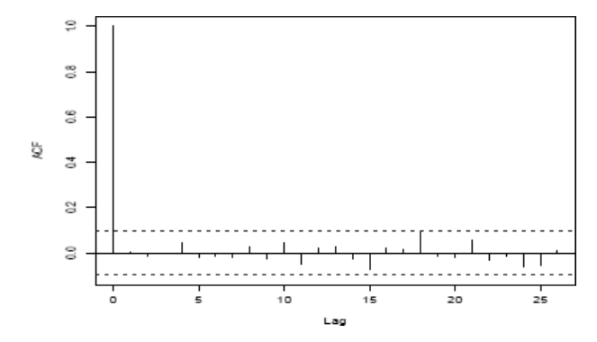
Supports: the residuals are uncorrelated (white noise). Almost all residual autocorrelations lie within the ±2/√n bounds; one small spike near lag 18 is expected by chance (about 1 in 20 lags).
Does not support (cannot check): normality of \(w_t\) and constant variance. These need a normal QQ plot / Shapiro-Wilk test and a plot of standardized residuals over time.
| ขั้น | คิดอย่างไร | เหตุผล |
|---|---|---|
| 1 | ACF ตอบได้แค่เรื่องความสัมพันธ์ | ACF วัด correlation ระหว่าง residual กับตัวเองย้อนหลัง ไม่ได้บอกรูปร่างการแจกแจง |
| 2 | แท่งเดียวที่แตะเส้น | เส้นประคือขอบ 95% ดู 20 lag มีโอกาสหลุดโดยบังเอิญราว 1 แท่ง |
⚠ คำว่า "does not support" ในข้อนี้หมายถึงตรวจไม่ได้ ไม่ใช่ตรวจแล้วตก
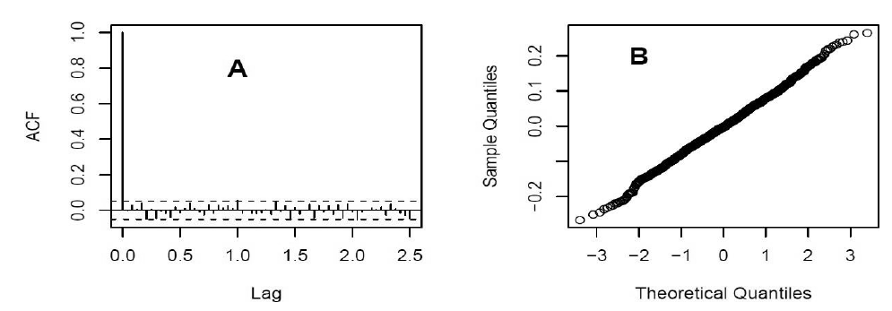
(A) All residual autocorrelations are inside the bounds → residuals are uncorrelated, consistent with white noise.
(B) The points lie close to the straight line, with slight deviation in the tails → residuals are approximately normal.
Conclusion: the model assumptions on \(w_t\) look reasonable.
Not checked: constant variance over time (and outliers). Check by plotting the standardized residuals against time; values should stay within ±3 with no change in spread. Also check the ACF of squared residuals or ArchTest for volatility clustering, and the Ljung-Box p-values as a joint test.
| ขั้น | คิดอย่างไร | เหตุผล |
|---|---|---|
| 1 | ACF + QQ ครอบคลุมสองในสามเรื่อง | ขาดเรื่อง variance และ outlier ซึ่งต้องดูตามเวลา |
| 2 | บอกวิธีตรวจด้วย | โจทย์ถามสองส่วน ทั้ง property ที่ขาดและวิธีตรวจ ตอบแค่ชื่อได้ไม่เต็ม |
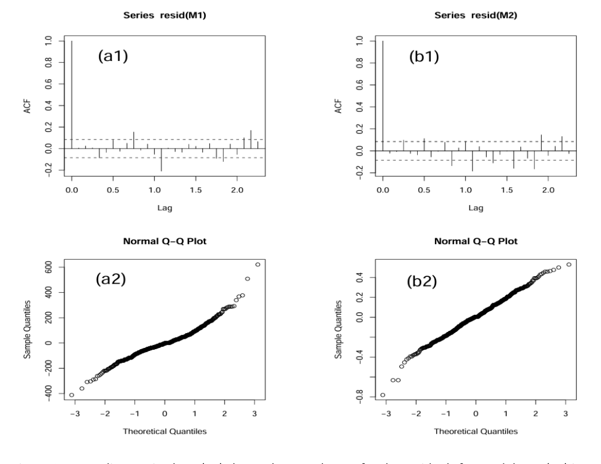
Both residual ACFs are mostly within the bounds, but both have a few small significant spikes, including lags near 1 year (lag ≈ 13) and 2 years.
So neither M1 nor M2 gives perfectly uncorrelated residuals; some seasonal correlation remains in both. The ACF plots do not clearly favour one model; the log transformation does not change the correlation structure much.
| ขั้น | คิดอย่างไร | เหตุผล |
|---|---|---|
| 1 | แกน Lag เป็นปี | ข้อมูลเป็น ts รายเดือน R จึงเขียน lag 1.0 แทน 12 เดือน · 1.1 ปีคือประมาณ 13 เดือน |
| 2 | หลุดใกล้ 1 และ 2 ปี | เหลือความสัมพันธ์ฤดูกาลที่โมเดลยังจับไม่หมด |
| 3 | สรุปว่าเสมอกัน | ทั้งคู่หลุดพอ ๆ กัน ข้อนี้เตรียมไว้ให้ข้อ 4e ตัดสินด้วย QQ plot |
(a2) M1 residuals curve away from the line with a long right tail → they are skewed and not normal; the residual spread grows with the level of the series.
(b2) M2 residuals lie close to the line except a few low points → approximately normal.
The log transformation stabilizes the variance and makes the residuals closer to normal, so M2 is preferred.
| ขั้น | คิดอย่างไร | เหตุผล |
|---|---|---|
| 1 | หางขวายาวกว่าหางซ้าย | เดือนที่คางทูมระบาดมีค่าสูงมาก error ตอนค่าสูงจึงใหญ่ตาม ตรงกับข้อมูลที่ความแกว่งโตตามระดับ |
| 2 | log แก้ได้ | log ทำให้ความแกว่งเท่ากันทุกระดับ ดูL7 ตอน 2.1 |
| 3 | เชื่อมกับข้อ 4b | AIC ของ M1 กับ M2 เทียบกันไม่ได้เพราะข้อมูลคนละสเกล QQ plot จึงเป็นหลักฐานที่ใช้เลือกแทน |
tsdiag(): standardized residuals อยู่ในช่วง ±3 · ACF ของ residual มีแท่ง lag 1 และ 3 ใกล้เส้นประ · p-value ของ Ljung-Box อยู่ใต้เส้น 0.05 ทุก lag ตั้งแต่ lag 2 Do the diagnostics indicate a good fit or a bad fit? Why?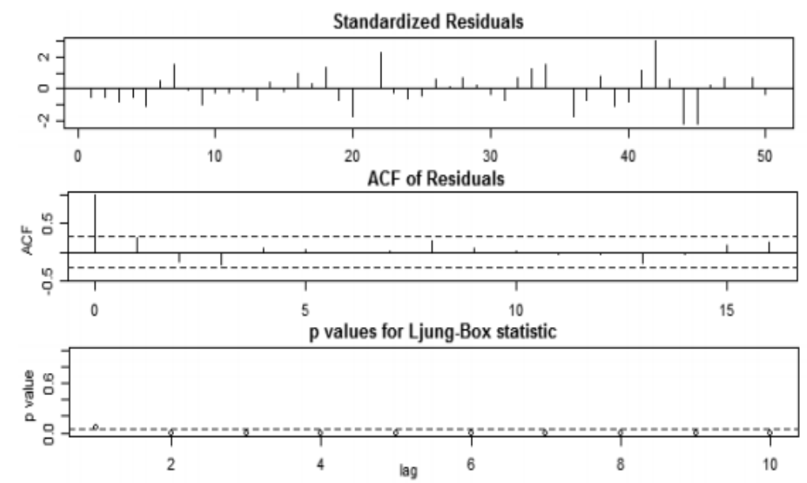
Bad fit.
Standardized residuals are within ±3, so there are no serious outliers.
However, the Ljung-Box p-values are below 0.05 for every lag from 2 onward, so we reject H0 that the residuals are white noise. The residuals are still correlated (spikes near the bounds at lags 1 and 3), so the model has not captured all the dependence in the data.
| ขั้น | คิดอย่างไร | เหตุผล |
|---|---|---|
| 1 | แผงล่างสำคัญที่สุด | Ljung-Box รวมหลาย lag ไว้ในตัวเดียว แท่ง ACF แต่ละแท่งดูไม่ชัดแต่รวมกันแล้วเกินได้ |
| 2 | p-value ต่ำ = ตก | H0 คือโมเดลเหมาะสม p ต่ำกว่า 0.05 ปฏิเสธ H0 |
โมเดล A ARIMA(0,0,1)(0,0,1)[12]
tsdiag: std. residuals -1.59 to 2.38 · ACF lag 1-3 = 0.375 0.596 0.376
Ljung-Box p-values 0.008 at lag 1, about 0 from lag 2
shapiro.test(rstandard): p-value = 0.350
โมเดล B ARIMA(0,0,0)(0,1,0)[12] with drift
tsdiag: std. residuals -2.41 to 1.73 · ACF inside bounds
Ljung-Box p-values 0.55 to 0.90
shapiro.test(rstandard): p-value = 0.090
โมเดลไหนผ่าน diagnostic เพราะอะไรModel A fails: Ljung-Box p-values are below 0.05 at every lag and residual ACF at lag 2 = 0.596 is large, so residuals are correlated. Normality is fine (p = 0.35) but this does not rescue the model.
Model B passes: no outliers, ACF within the bounds, Ljung-Box p-values above 0.05 at every lag (uncorrelated), Shapiro-Wilk p-value 0.090 > 0.05 (normal). Model B is adequate.
| ขั้น | คิดอย่างไร | เหตุผล |
|---|---|---|
| 1 | 0.596 ใหญ่แค่ไหน | ข้อมูล 47 เดือน เส้นประอยู่ที่ \(2/\sqrt{47}=0.29\) · 0.596 เกินเส้นไปเกือบเท่าตัว |
| 2 | ทำไม A ตก | A ไม่มี difference ใช้ค่าเฉลี่ยคงที่ 40.76 แต่ฝนเพิ่มขึ้นทุกปี รูปแบบที่จับไม่ได้ไปค้างอยู่ใน residual |
arima(x, order = c(1,0,0)) แล้ว tsdiag() ได้กราฟข้างล่าง โมเดลผ่านไหม ควรแก้อย่างไร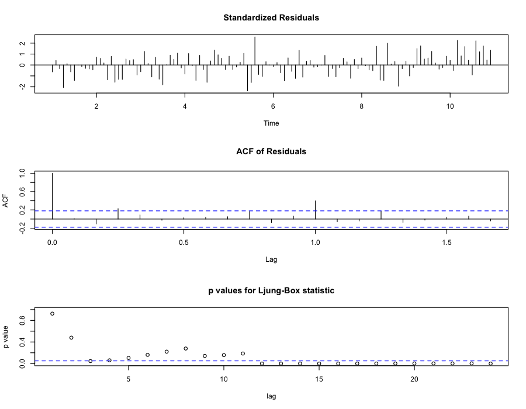
Standardized residuals are within ±3: no outliers.
ACF of residuals has a large spike at lag 1.0 year (lag 12, about 0.40), above the bounds.
Ljung-Box p-values drop below 0.05 from lag 12 onward → residuals are correlated.
The model is not adequate: yearly seasonality is left in the residuals. Add a seasonal term, for example ARIMA(1,0,0)(1,0,0)[12].
| ขั้น | เขียนว่า | ทำแบบนี้เพราะ / มาจากไหน |
|---|---|---|
| 1 | แกน Lag 1.0 | ข้อมูล frequency 12 R เขียน lag เป็นปี 1.0 คือ 12 เดือน |
| 2 | p ตกตั้งแต่ lag 12 | ก่อน lag 12 ยังผ่าน แปลว่าส่วน non-seasonal พอแล้ว ที่ขาดคือฤดูกาล |
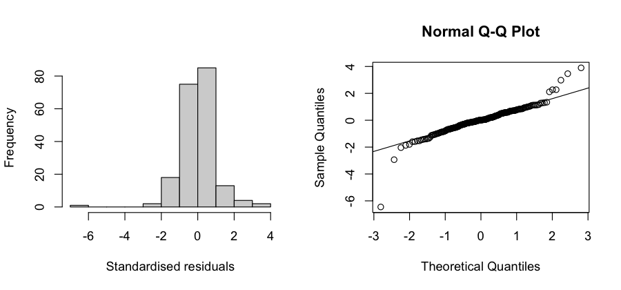
Residuals are uncorrelated (Ljung-Box p > 0.05), so the dependence is captured.
But they are not normal: the QQ plot bends away at both ends (heavy tails), Shapiro-Wilk p = 8.7e-11 < 0.05, and three standardized residuals exceed ±3 (outliers).
Point forecasts are fine, but prediction intervals based on normality are too narrow. Check the outliers or use a transformation.
| ขั้น | เขียนว่า | ทำแบบนี้เพราะ / มาจากไหน |
|---|---|---|
| 1 | หางเบนออกทั้งสองข้าง | ข้อมูลมีค่าสุดโต่งบ่อยกว่า normal เรียกว่าหางหนา |
| 2 | ผ่านครึ่งเดียว | ข้อสอบชอบถามว่า "which assumptions are supported" ต้องแยกตอบทีละเรื่อง |
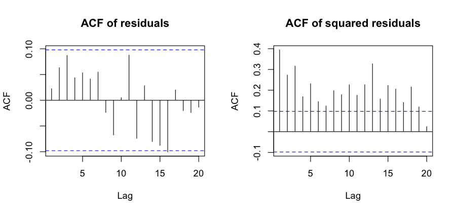
The residuals are uncorrelated, but the squared residuals are strongly autocorrelated and ArchTest rejects H0 (p = 1.1e-15).
The variance is not constant: there is volatility clustering. The mean model is fine, but the variance should be modelled with ARCH/GARCH.
| ขั้น | เขียนว่า | ทำแบบนี้เพราะ / มาจากไหน |
|---|---|---|
| 1 | ไม่สัมพันธ์ ≠ อิสระ | residual อาจไม่สัมพันธ์กันแต่ขนาดของมันยังเกาะกลุ่มกันได้ |
| 2 | ตอบข้อ "NOT checked" | แบบเดียวกับ 2022 ข้อ 7c: constant variance ไม่ได้ตรวจด้วย ACF ของ residual ต้องดู residual² |
เคล็ดจากอาจารย์ Class 3: ถ้าคิดไม่ออก ให้เขียน \(X_1, X_2, X_3\) ออกมาดูทีละตัวก่อน แล้วค่อยหาแบบแผน
Mean: \(E(X_t)=E(w_tw_{t-1})=E(w_t)E(w_{t-1})=0\cdot0=0\)
Variance: \(\gamma(0)=E(X_t^2)-0=E(w_t^2w_{t-1}^2)=E(w_t^2)E(w_{t-1}^2)=\sigma^2\cdot\sigma^2=\sigma^4\)
\(h=1\): \(\gamma(1)=E(X_tX_{t+1})=E(w_tw_{t-1}\,w_{t+1}w_t)=E(w_t^2)E(w_{t-1})E(w_{t+1})=\sigma^2\cdot0\cdot0=0\)
\(h\ge2\): \(\gamma(h)=E(w_tw_{t-1}\,w_{t+h}w_{t+h-1})=0\) (no common terms, all independent with mean 0)
Mean 0 and \(\gamma(h)=\sigma^4\) for \(h=0\), \(0\) otherwise; none depend on t.
Therefore \(X_t\) is stationary (a white noise, but not iid).
| ขั้น | เขียนว่า | ทำแบบนี้เพราะ |
|---|---|---|
| 1 | \(E(w_t)E(w_{t-1})\) | \(w_t\) กับ \(w_{t-1}\) คนละเวลา เป็นอิสระต่อกัน แยก E ได้ตาม ก12 ทั้งคู่มี E = 0 |
| 2 | \(E(X_t^2)\) | ก13: Var = E(X²) ลบ mean² และ mean = 0 · \(X_t^2=w_t^2w_{t-1}^2\) ยกกำลังสองทั้งสองตัว |
| 3 | \(\sigma^2\cdot\sigma^2\) | \(w_t^2\) กับ \(w_{t-1}^2\) ยังอิสระกัน แยก E ได้ แต่ละตัวได้ \(E(w^2)=\sigma^2\) คูณกันได้ \(\sigma^4\) |
| 4 | h = 1 มี \(w_t\) สองตัว | \(X_t=w_tw_{t-1}\) และ \(X_{t+1}=w_{t+1}w_t\) มี \(w_t\) ร่วมกัน รวมเป็น \(w_t^2\) ส่วน \(w_{t-1}\) กับ \(w_{t+1}\) อยู่ตัวเดียว E = 0 คูณอะไรก็ได้ 0 |
| 5 | h ≥ 2 เป็น 0 | ไม่มี w ตัวไหนซ้ำกันเลย แยก E ได้หมด ทุกตัวเป็น 0 |
⚠ ข้อนี้ไม่ใช่ MA จึงใช้ทางลัด ก14 ไม่ได้ ต้องคิดจาก E ของผลคูณตรง ๆ
Let \(Var(X)=\sigma_X^2\).
Mean: \(E(Y_t)=(-1)^tE(X)=(-1)^t\cdot0=0\)
\(\gamma(h)=Cov(Y_t,Y_{t+h})=E[(-1)^tX\cdot(-1)^{t+h}X]=(-1)^{2t+h}E(X^2)=(-1)^h\sigma_X^2\)
So \(\gamma(0)=\sigma_X^2\), \(\gamma(1)=-\sigma_X^2\), \(\gamma(2)=\sigma_X^2,\dots\) which depends only on h.
Therefore \(Y_t\) is stationary with mean 0 and \(\gamma(h)=(-1)^h\sigma_X^2\).
| ขั้น | เขียนว่า | ทำแบบนี้เพราะ |
|---|---|---|
| 1 | เขียนให้เห็นก่อน | \(Y_1=-X\), \(Y_2=X\), \(Y_3=-X\) สลับเครื่องหมายไปเรื่อย ๆ มีตัวสุ่มแค่ตัวเดียวคือ X |
| 2 | \((-1)^tE(X)\) | \((-1)^t\) เป็นแค่ +1 หรือ −1 ไม่ใช่ตัวสุ่ม ดึงออกนอก E ได้ตาม ก11 |
| 3 | \((-1)^{2t+h}\) | เลขยกกำลังฐานเดียวกันคูณกัน เอาเลขชี้กำลังมาบวกกัน \(t+(t+h)=2t+h\) |
| 4 | \((-1)^{2t}=1\) | 2t เป็นเลขคู่เสมอ −1 ยกกำลังเลขคู่ได้ 1 ตัว t หายไป เหลือ \((-1)^h\) |
| 5 | \(E(X^2)=\sigma_X^2\) | ก13 กับ mean 0: \(Var(X)=E(X^2)-0\) |
⚠ ความนิ่งดูแค่ว่ามี t หรือไม่ ไม่สนว่า γ ติดลบหรือสลับเครื่องหมาย
(a) \(E(X_t)=-2t+E(w_t)+0.5E(w_{t-1})=-2t\), which depends on t. Therefore \(X_t\) is nonstationary.
(b) \(\nabla X_t=[-2t+w_t+0.5w_{t-1}]-[-2(t-1)+w_{t-1}+0.5w_{t-2}]\)
\(=-2+w_t-0.5w_{t-1}-0.5w_{t-2}\)
\(E(\nabla X_t)=-2\)
\(\gamma(0)=\sigma^2(1+0.25+0.25)=1.5\sigma^2\)
\(\gamma(1)=\sigma^2[(1)(-0.5)+(-0.5)(-0.5)]=-0.25\sigma^2\)
\(\gamma(2)=\sigma^2[(1)(-0.5)]=-0.5\sigma^2\), \(\gamma(h)=0\) for \(h\ge3\)
Mean and autocovariance do not depend on t. Therefore \(\nabla X_t\) is stationary.
| ขั้น | เขียนว่า | ทำแบบนี้เพราะ |
|---|---|---|
| 1 | \(-2(t-1)\) | \(X_{t-1}\) คือเอา t − 1 ไปแทน t ทุกที่ในสมการ w ก็เลื่อนไปหนึ่งช่อง |
| 2 | \(-2t-(-2t+2)=-2\) | \(-2(t-1)=-2t+2\) แล้วลบทั้งวงเล็บ เครื่องหมายในวงเล็บกลับหมดตาม ก2 ได้ \(-2t+2t-2=-2\) |
| 3 | \(0.5w_{t-1}-w_{t-1}=-0.5w_{t-1}\) | รวมพจน์ \(w_{t-1}\) ที่มาจากทั้งสองวงเล็บ \(0.5-1=-0.5\) |
| 4 | สัมประสิทธิ์ 1, −0.5, −0.5 | เลขหน้า \(w_t, w_{t-1}, w_{t-2}\) ใช้กับทางลัด ก14 · ค่าคงที่ −2 ไม่มีผลกับ Cov |
| 5 | γ(0) = 1.5σ² | ยกกำลังสองแต่ละตัวแล้วบวก \(1+0.25+0.25=1.5\) |
| 6 | γ(1) = −0.25σ² | เลื่อน 1 ช่อง คู่ที่ตรงกันคือ (1, −0.5) และ (−0.5, −0.5) ได้ \(-0.5+0.25=-0.25\) |
| 7 | γ(2) = −0.5σ² | เลื่อน 2 ช่อง เหลือคู่เดียว (1, −0.5) |
⚠ ข้อนี้ 15 คะแนนอยู่ที่ข้อ b ต้องเขียน γ ให้ครบทุก h ไม่ใช่แค่บอกว่า "mean คงที่ จึงนิ่ง" · ใน Class 13 อาจารย์บอกคำตอบ γ(0) ของ ∇X เป็น 1.25σ² ซึ่งน่าจะลอกมาจาก γ(0) ของ X_t ที่เป็น 1 + 0.25 คิดจริงได้ 1 + 0.25 + 0.25 = 1.5σ² ให้เขียนวิธีทำให้เห็นทุกพจน์ · อาจารย์บอกว่าแนวข้อนี้ "จะออกข้อสอบอยู่ในพาร์ทแรกที่เป็นคอนเซ็ปต์"
Mean: \(E(X_t)=\int_0^1\sin(2\pi ut)\,du=\left[\dfrac{-\cos(2\pi ut)}{2\pi t}\right]_0^1=\dfrac{1-\cos(2\pi t)}{2\pi t}=0\) since \(\cos(2\pi t)=1\).
For \(s\ne t\): \(E(X_tX_s)=\int_0^1\sin(2\pi ut)\sin(2\pi us)\,du\)
\(=\tfrac12\int_0^1[\cos(2\pi u(t-s))-\cos(2\pi u(t+s))]\,du=\tfrac12(0-0)=0\)
For \(s=t\): \(E(X_t^2)=\tfrac12\int_0^1[1-\cos(4\pi ut)]\,du=\tfrac12(1-0)=\tfrac12\)
So \(E(X_t)=0\), \(\gamma(0)=\tfrac12\), \(\gamma(h)=0\) for \(h\ne0\), none depend on t.
Therefore \(X_t\) is stationary.
| ขั้น | เขียนว่า | ทำแบบนี้เพราะ |
|---|---|---|
| 1 | \(\int_0^1\dots du\) | ตัวสุ่มคือ U ไม่ใช่ t · E ของฟังก์ชันของ U ที่ uniform บน 0 ถึง 1 คือการ integrate ฟังก์ชันนั้นจาก 0 ถึง 1 เพราะความหนาแน่นเท่ากับ 1 |
| 2 | \(-\cos(2\pi ut)/(2\pi t)\) | integrate sin ได้ −cos และหารด้วยตัวคูณหน้า u คือ \(2\pi t\) |
| 3 | \(1-\cos(2\pi t)=0\) | แทน u = 1 ลบ u = 0 · ที่ u = 0 ได้ \(\cos0=1\) · t เป็นจำนวนเต็ม \(\cos(2\pi t)=1\) ตาม ก16 |
| 4 | แปลงผลคูณ sin | ก16: \(\sin A\sin B=\tfrac12[\cos(A-B)-\cos(A+B)]\) |
| 5 | \(\tfrac12(0-0)\) | t − s และ t + s เป็นจำนวนเต็มที่ไม่ใช่ 0 integral ของ cos ทั้งรอบได้ 0 ตาม ก16 |
| 6 | s = t ได้ ½ | \(\cos(0)=1\) integrate 1 จาก 0 ถึง 1 ได้ 1 ส่วนอีกตัวยังเป็น 0 |
⚠ อาจารย์บอกใน Class 13 ว่าข้อนี้ "ผมจะไม่ออก" เพราะต้อง integrate sin cos ให้ข้ามได้ ทำเป็นข้อเสริมถ้ามีเวลา
\(X_t=\tfrac12(w_tw_{t-1}+w_t^2)\)
Mean: \(E(X_t)=\tfrac12[E(w_t)E(w_{t-1})+E(w_t^2)]=\tfrac12(0+\sigma^2)=\dfrac{\sigma^2}{2}\)
\(E(X_t^2)=\tfrac14E(w_t^2w_{t-1}^2+2w_t^3w_{t-1}+w_t^4)=\tfrac14(\sigma^4+0+E(w_t^4))\)
\(\gamma(0)=E(X_t^2)-\left(\dfrac{\sigma^2}{2}\right)^2=\dfrac{E(w_t^4)}{4}\) (\(=\tfrac34\sigma^4\) if \(w_t\) is normal)
\(E(X_tX_{t+1})=\tfrac14E[(w_tw_{t-1}+w_t^2)(w_{t+1}w_t+w_{t+1}^2)]=\tfrac14E(w_t^2w_{t+1}^2)=\dfrac{\sigma^4}{4}\)
\(\gamma(1)=\dfrac{\sigma^4}{4}-\dfrac{\sigma^4}{4}=0\); \(\gamma(h)=0\) for \(h\ge2\) (independent).
Mean \(\sigma^2/2\), \(\gamma(0)=E(w_t^4)/4\), \(\gamma(h)=0\) otherwise: \(X_t\) is stationary.
| ขั้น | เขียนว่า | ทำแบบนี้เพราะ |
|---|---|---|
| 1 | คูณ \(w_t\) เข้าวงเล็บ | \(w_t\cdot w_{t-1}+w_t\cdot w_t=w_tw_{t-1}+w_t^2\) |
| 2 | mean = σ²/2 | พจน์แรก w คนละเวลาแยก E ได้ 0 · พจน์ที่สอง \(E(w_t^2)=\sigma^2\) ตาม ก12 |
| 3 | กระจาย \(X_t^2\) | \((a+b)^2=a^2+2ab+b^2\) โดย \(a=w_tw_{t-1}\), \(b=w_t^2\) ได้ \(w_t^2w_{t-1}^2+2w_t^3w_{t-1}+w_t^4\) |
| 4 | \(E(w_t^3w_{t-1})=0\) | แยก E ได้ \(E(w_t^3)E(w_{t-1})\) และ \(E(w_{t-1})=0\) |
| 5 | γ(0) | ก13: \(\tfrac14(\sigma^4+E(w^4))-\tfrac14\sigma^4=\tfrac14E(w^4)\) · ถ้า normal แทน \(E(w^4)=3\sigma^4\) ตาม ก12 ได้ \(\tfrac34\sigma^4\) |
| 6 | h = 1 | คูณครบ 4 คู่: \(w_t^2w_{t-1}w_{t+1}\), \(w_tw_{t-1}w_{t+1}^2\), \(w_t^3w_{t+1}\), \(w_t^2w_{t+1}^2\) สามคู่แรกมี w ที่อยู่ตัวเดียว E = 0 เหลือคู่สุดท้าย \(\sigma^2\cdot\sigma^2\) |
| 7 | ลบ mean² | mean ไม่ใช่ 0 ต้องลบ \(E(X_t)E(X_{t+1})=\sigma^4/4\) ตาม ก13 ได้ 0 |
⚠ อาจารย์เฉลยใน Class 13 โดยใช้สมบัติของ normal \(E(w^3)=0\) และ \(E(w^4)=3\sigma^4\) ได้ γ(0) = 3σ⁴/4 · อาจารย์บอกว่าข้อนี้ "ยากสุดแล้วถ้าจะออก" และ "ถ้าทำข้อนี้ได้ ข้อแรกของข้อสอบปีที่แล้วคุณก็ทำได้" ให้จำสมบัติ 4 ตัวนี้ไว้
\(E(Y_t)=7-3t+E(X_t)=7-3t+3t=7\), free of t.
\(Cov(Y_t,Y_{t+h})=Cov(7-3t+X_t,\ 7-3(t+h)+X_{t+h})=Cov(X_t,X_{t+h})=\gamma_h\), free of t.
Therefore \(Y_t\) is stationary.
| ขั้น | เขียนว่า | ทำแบบนี้เพราะ |
|---|---|---|
| 1 | \(7-3t\) ออกนอก E | ไม่ใช่ตัวสุ่ม ก11 |
| 2 | Cov ตัด \(7-3t\) ทิ้ง | ค่าคงที่บวกเข้าไปไม่เปลี่ยน Cov ตาม ก14 แม้จะมี t อยู่ก็ตาม เพราะ t ไม่ใช่ตัวสุ่ม |
⚠ แนวคิดนี้คือ detrending ใน L3 ตอน 4.2: ลบเส้น trend ที่ถูกต้องออก ส่วนที่เหลือนิ่ง
\(X_t=w_1+w_2+\dots+w_t\)
\(E(X_t)=0\)
\(Var(X_t)=Var(w_1)+\dots+Var(w_t)=t\sigma^2\), which depends on t.
Therefore \(X_t\) is not stationary.
| ขั้น | เขียนว่า | ทำแบบนี้เพราะ |
|---|---|---|
| 1 | เขียนทีละตัว | \(X_1=w_1\) · \(X_2=X_1+w_2=w_1+w_2\) · \(X_3=w_1+w_2+w_3\) เห็นแบบแผนว่าเป็นผลบวก t ตัว |
| 2 | Var บวกกันได้ | w แต่ละตัวอิสระกัน Cov ข้ามตัวเป็น 0 ตาม ก14 เหลือแค่ Var ของแต่ละตัว t ตัวได้ \(t\sigma^2\) |
⚠ mean = 0 ไม่มี t แต่ยังไม่นิ่ง ต้องเช็กครบทั้ง 3 ข้อใน ก15 อาจารย์ใช้ข้อนี้เป็นการบ้าน Class 2
\(E(X_t)=\cos(ct)E(w_0)=0\)
\(Cov(X_t,X_{t+h})=\cos(ct)\cos(c(t+h))E(w_0^2)=\sigma^2\cos(ct)\cos(ct+ch)\)
This depends on t (for example \(Var(X_t)=\sigma^2\cos^2(ct)\) changes with t).
Therefore \(X_t\) is not stationary.
| ขั้น | เขียนว่า | ทำแบบนี้เพราะ |
|---|---|---|
| 1 | cos ออกนอก E | \(\cos(ct)\) ไม่สุ่ม มีตัวสุ่มตัวเดียวคือ \(w_0\) |
| 2 | ลองแทน t | สมมติ \(c=\pi/2\): t = 1 ได้ Var = \(\sigma^2\cos^2(\pi/2)=0\) · t = 2 ได้ \(\sigma^2\cos^2(\pi)=\sigma^2\) ต่างกัน |
⚠ เทียบกับข้อ 6.4: sin ของตัวสุ่ม U ที่อยู่ในวงเล็บนิ่งได้ แต่ตัวสุ่มคูณนอก cos แบบข้อนี้ไม่นิ่ง
\(E(X_t)=E(w_t)E(w_{t-2})=0\)
\(\gamma(0)=E(w_t^2w_{t-2}^2)=E(w_t^2)E(w_{t-2}^2)=\sigma^4\)
\(\gamma(1)=E(w_tw_{t-2}\,w_{t+1}w_{t-1})=0\) (four different w, each with mean 0)
\(\gamma(2)=E(w_tw_{t-2}\,w_{t+2}w_t)=E(w_t^2)E(w_{t-2})E(w_{t+2})=\sigma^2\cdot0\cdot0=0\)
\(\gamma(h)=0\) for \(h\ge3\). Mean and autocovariance do not depend on t, so \(X_t\) is stationary (white noise).
| ขั้น | เขียนว่า | ทำแบบนี้เพราะ / มาจากไหน |
|---|---|---|
| 1 | h = 1 | \(X_{t+1}=w_{t+1}w_{t-1}\) ไม่มี w ตัวไหนซ้ำกับ \(X_t=w_tw_{t-2}\) เลย แยก E ได้หมด ตาม ก12 |
| 2 | h = 2 | \(X_{t+2}=w_{t+2}w_t\) มี \(w_t\) ซ้ำ รวมเป็น \(w_t^2\) แต่ยังเหลือ \(w_{t-2}\) และ \(w_{t+2}\) ที่อยู่ตัวเดียว ผลคูณจึงเป็น 0 |
⚠ เทียบกับ FINAL 2025 ข้อ 1 ที่เป็น \(w_tw_{t-1}\) วิธีเดียวกันทุกตัว ต่างแค่ lag ที่มี w ซ้ำ
\(E(X_t)=E(w_t)+E(w_{t-1}^2)=0+\sigma^2=\sigma^2\)
\(\gamma(0)=Var(w_t)+Var(w_{t-1}^2)=\sigma^2+(E(w^4)-[E(w^2)]^2)=\sigma^2+(3\sigma^4-\sigma^4)=\sigma^2+2\sigma^4\)
\(\gamma(1)=Cov(w_t+w_{t-1}^2,\ w_{t+1}+w_t^2)=Cov(w_t,w_t^2)=E(w_t^3)-E(w_t)E(w_t^2)=0\)
\(\gamma(h)=0\) for \(h\ge2\). Mean \(\sigma^2\) and \(\gamma(0)=\sigma^2+2\sigma^4\) do not depend on t: stationary.
| ขั้น | เขียนว่า | ทำแบบนี้เพราะ / มาจากไหน |
|---|---|---|
| 1 | Var ของผลบวก | \(w_t\) กับ \(w_{t-1}^2\) อิสระกัน Cov ข้ามตัวเป็น 0 เหลือ Var แต่ละตัวบวกกัน |
| 2 | \(Var(w^2)\) | ก13: \(E(w^4)-[E(w^2)]^2\) และ ก12: normal มี \(E(w^4)=3\sigma^4\) |
| 3 | h = 1 | คู่ที่มีเวลาตรงกันมีคู่เดียวคือ \(w_t\) กับ \(w_t^2\) · \(E(w^3)=0\) สำหรับ normal |
⚠ อาจารย์บอกใน Class 13 ว่าโจทย์แนวนี้ต้องจำสมบัติของ normal 4 ตัว: E(w) = 0, E(w²) = σ², E(w³) = 0, E(w⁴) = 3σ⁴
(a) \(E(X_t)=5+0.3t\) depends on t → not stationary.
(b) \(\nabla X_t=[5+0.3t+w_t]-[5+0.3(t-1)+w_{t-1}]=0.3+w_t-w_{t-1}\)
\(E(\nabla X_t)=0.3\); \(\gamma(0)=2\sigma^2\), \(\gamma(1)=-\sigma^2\), \(\gamma(h)=0\) for \(h\ge2\) → stationary.
| ขั้น | เขียนว่า | ทำแบบนี้เพราะ / มาจากไหน |
|---|---|---|
| 1 | 0.3 | \(0.3t-0.3(t-1)=0.3\) ค่าคงที่ 5 ตัดกันหาย |
| 2 | สัมประสิทธิ์ 1, −1 | ก14: \(\gamma(0)=\sigma^2(1+1)\) และ \(\gamma(1)=\sigma^2(1)(-1)\) |
⚠ ผลต่างนี้คือ MA(1) ที่ θ = −1 รากเท่ากับ 1 ไม่ invertible คือ over-differencing ของ white noise เชื่อมกับข้อ 1.10
ψ weights คือการเขียน \(X_t\) เป็นผลรวมของ shock ในอดีต (MA(∞)) ใช้ได้เมื่อ causal ส่วน π weights คือการเขียน \(w_t\) เป็นผลรวมของ X ในอดีต (AR(∞)) ใช้ได้เมื่อ invertible ดังนั้นต้องตรวจรากก่อนเสมอ (ทักษะ 1)
⚠ อาจารย์บอกใน Class 13 ว่าข้อสอบสองปีหลังถามแค่ causal กับ invertible ไม่ถึง ψ weights ทักษะนี้จึงสำคัญน้อยลง ถ้าออก เขียนแค่ 4 เทอมแรกก็ได้เต็ม
\((1-0.5B)X_t=(1+0.4B)w_t\)
(a) \(1-0.5x=0\Rightarrow x=2>1\) → causal
\(\psi(z)=\dfrac{1+0.4z}{1-0.5z}=(1+0.4z)(1+0.5z+0.25z^2+0.125z^3+0.0625z^4+\dots)\)
\(=1+(0.5+0.4)z+(0.25+0.2)z^2+(0.125+0.1)z^3+(0.0625+0.05)z^4+\dots\)
\(=1+0.9z+0.45z^2+0.225z^3+0.1125z^4+\dots\)
\(\psi_0=1,\ \psi_1=0.9,\ \psi_2=0.45,\ \psi_3=0.225,\ \psi_4=0.1125\)
(b) \(1+0.4x=0\Rightarrow x=-2.5,\ |-2.5|>1\) → invertible
\(\pi(z)=\dfrac{1-0.5z}{1+0.4z}=(1-0.5z)(1-0.4z+0.16z^2-0.064z^3+0.0256z^4-\dots)\)
\(=1+(-0.4-0.5)z+(0.16+0.2)z^2+(-0.064-0.08)z^3+(0.0256+0.032)z^4+\dots\)
\(=1-0.9z+0.36z^2-0.144z^3+0.0576z^4-\dots\)
\(\pi_0=1,\ \pi_1=-0.9,\ \pi_2=0.36,\ \pi_3=-0.144,\ \pi_4=0.0576\)
| ขั้น | เขียนว่า | ทำแบบนี้เพราะ / ตัวเลขมาจากไหน |
|---|---|---|
| 1 | \(\psi(z)=\frac{\theta(z)}{\Phi(z)}\) | จาก \(\Phi(B)X_t=\theta(B)w_t\) หารทั้งสองข้างด้วย Φ ได้ \(X_t=\frac{\theta(B)}{\Phi(B)}w_t\) ตัวที่คูณ \(w_t\) อยู่คือ ψ |
| 2 | \(\frac{1}{1-0.5z}=1+0.5z+0.25z^2+\dots\) | ก9 กับ a = 0.5: เลขแต่ละตัวคือ 0.5 ยกกำลัง \(0.5^0=1\), \(0.5^1=0.5\), \(0.5^2=0.25\), \(0.5^3=0.125\), \(0.5^4=0.0625\) |
| 3 | คูณ \((1+0.4z)\) เข้าไป | คูณ 1 ได้แถวเดิม \(1+0.5z+0.25z^2+0.125z^3+0.0625z^4\) คูณ 0.4z ได้แถวที่เลื่อนไปหนึ่งช่อง \(0.4z+0.2z^2+0.1z^3+0.05z^4\) (เช่น \(0.4\times0.5=0.2\)) |
| 4 | รวมช่องเดียวกัน | \(z^1\): \(0.5+0.4=0.9\) · \(z^2\): \(0.25+0.2=0.45\) · \(z^3\): \(0.125+0.1=0.225\) · \(z^4\): \(0.0625+0.05=0.1125\) · \(\psi_0\) คือเลขที่ไม่มี z = 1 เสมอ |
| 5 | \(\frac{1}{1+0.4z}=1-0.4z+0.16z^2-\dots\) | ตัวส่วนเป็นบวก มองเป็น \(1-(-0.4)z\) ใช้ ก9 กับ a = −0.4: \((-0.4)^2=0.16\), \((-0.4)^3=-0.064\), \((-0.4)^4=0.0256\) เครื่องหมายสลับ |
| 6 | คูณ \((1-0.5z)\) | แถวคูณ 1: \(1-0.4z+0.16z^2-0.064z^3+0.0256z^4\) · แถวคูณ −0.5z: \(-0.5z+0.2z^2-0.08z^3+0.032z^4\) (เช่น \(-0.5\times-0.4=+0.2\)) |
| 7 | รวมช่อง | \(z^1\): \(-0.4-0.5=-0.9\) · \(z^2\): \(0.16+0.2=0.36\) · \(z^3\): \(-0.064-0.08=-0.144\) · \(z^4\): \(0.0256+0.032=0.0576\) |
| สูตรลัด | \(\psi_j=(\phi+\theta)\phi^{j-1}\) | ARMA(1,1) เท่านั้น: \(\phi+\theta=0.5+0.4=0.9\) แล้วคูณ 0.5 ไปเรื่อย ๆ 0.9, 0.45, 0.225, 0.1125 ตรงกัน · \(\pi_j=-(\phi+\theta)(-\theta)^{j-1}\): −0.9, 0.36, −0.144, 0.0576 ตรงกัน |
⚠ โจทย์นิยาม \(w_t=\sum\pi_jX_{t-j}\) π จึงเป็นเลขหน้า X ตรง ๆ คำตอบเขียนเป็นสมการได้ว่า \(w_t=X_t-0.9X_{t-1}+0.36X_{t-2}-0.144X_{t-3}+\dots\)
\(\Phi(z)\psi(z)=\theta(z)\)
\((1+0.81z^2)(\psi_0+\psi_1z+\psi_2z^2+\psi_3z^3+\psi_4z^4+\dots)=1+\tfrac13z\)
\(z^0:\ \psi_0=1\)
\(z^1:\ \psi_1=\tfrac13=0.333\)
\(z^2:\ \psi_2+0.81\psi_0=0\Rightarrow\psi_2=-0.81\)
\(z^3:\ \psi_3+0.81\psi_1=0\Rightarrow\psi_3=-0.27\)
\(z^4:\ \psi_4+0.81\psi_2=0\Rightarrow\psi_4=0.6561\)
\(X_t=w_t+0.333w_{t-1}-0.81w_{t-2}-0.27w_{t-3}+0.6561w_{t-4}+\dots\)
| ขั้น | เขียนว่า | ทำแบบนี้เพราะ / ตัวเลขมาจากไหน |
|---|---|---|
| 1 | \(\Phi(z)\psi(z)=\theta(z)\) | จาก \(\psi=\theta/\Phi\) คูณ Φ ทั้งสองข้าง (ก1 แบบคูณ) ไม่ต้องหารพหุนาม |
| 2 | เลขหน้า \(z^2\) | ทางซ้าย \(z^2\) เกิดได้สองทาง: 1 × \(\psi_2z^2\) และ \(0.81z^2\) × \(\psi_0\) ได้ \(\psi_2+0.81\psi_0\) ทางขวาไม่มี \(z^2\) จึงเป็น 0 (ก10) |
| 3 | \(\psi_2=-0.81\) | \(\psi_0=1\) แทนได้ \(\psi_2+0.81=0\) ย้ายข้าง \(\psi_2=-0.81\) |
| 4 | \(\psi_3=-0.27\) | \(\psi_3+0.81\times\tfrac13=0\) · \(0.81/3=0.27\) · ย้ายข้างได้ −0.27 |
| 5 | \(\psi_4=0.6561\) | \(\psi_4+0.81\times(-0.81)=0\) · \(0.81\times-0.81=-0.6561\) · \(\psi_4-0.6561=0\) ย้ายข้างได้ +0.6561 |
⚠ ψ สลับเครื่องหมายและไม่ลดลงเร็ว เพราะรากเชิงซ้อนมี modulus 1.111 ใกล้ 1 ผลของ shock จึงแกว่งและจางช้า
\(\psi(z)=(1+0.8z)(1+0.2z+0.04z^2+0.008z^3+0.0016z^4+\dots)\)
\(=1+(0.2+0.8)z+(0.04+0.16)z^2+(0.008+0.032)z^3+(0.0016+0.0064)z^4\)
\(\psi_0=1,\ \psi_1=1,\ \psi_2=0.2,\ \psi_3=0.04,\ \psi_4=0.008\)
\(\pi(z)=(1-0.2z)(1-0.8z+0.64z^2-0.512z^3+0.4096z^4-\dots)\)
\(=1+(-0.8-0.2)z+(0.64+0.16)z^2+(-0.512-0.128)z^3+(0.4096+0.1024)z^4\)
\(\pi_0=1,\ \pi_1=-1,\ \pi_2=0.8,\ \pi_3=-0.64,\ \pi_4=0.512\)
| ขั้น | เขียนว่า | ทำแบบนี้เพราะ / ตัวเลขมาจากไหน |
|---|---|---|
| 1 | \(0.2^k\) | ก9 กับ a = 0.2: 1, 0.2, 0.04, 0.008, 0.0016 |
| 2 | แถว 0.8z | \(0.8\times1=0.8\), \(0.8\times0.2=0.16\), \(0.8\times0.04=0.032\), \(0.8\times0.008=0.0064\) |
| 3 | ψ ลัด | \(\phi+\theta=0.2+0.8=1\) แล้วคูณ 0.2 ไปเรื่อย ๆ: 1, 0.2, 0.04, 0.008 ตรงกัน |
| 4 | \((-0.8)^k\) | ตัวส่วน \(1+0.8z\) ใช้ a = −0.8: 1, −0.8, 0.64, −0.512, 0.4096 |
| 5 | แถว −0.2z | \(-0.2\times1=-0.2\), \(-0.2\times-0.8=0.16\), \(-0.2\times0.64=-0.128\), \(-0.2\times-0.512=0.1024\) |
⚠ π จางช้ากว่า ψ เพราะ θ = 0.8 ใกล้ 1 กว่า φ = 0.2
\((1-0.6z+0.08z^2)(\psi_0+\psi_1z+\psi_2z^2+\dots)=1\)
\(\psi_0=1\)
\(\psi_1-0.6\psi_0=0\Rightarrow\psi_1=0.6\)
\(\psi_j=0.6\psi_{j-1}-0.08\psi_{j-2}\) for \(j\ge2\)
\(\psi_2=0.6(0.6)-0.08(1)=0.28\)
\(\psi_3=0.6(0.28)-0.08(0.6)=0.12\)
\(\psi_4=0.6(0.12)-0.08(0.28)=0.0496\)
| ขั้น | เขียนว่า | ทำแบบนี้เพราะ / ตัวเลขมาจากไหน |
|---|---|---|
| 1 | ขวามือ = 1 | ไม่มีส่วน MA θ(z) จึงเป็น 1 |
| 2 | เลขหน้า \(z^j\) | \(\psi_j-0.6\psi_{j-1}+0.08\psi_{j-2}=0\) ย้าย 2 พจน์หลังไปขวา (ก1) ได้สูตรวนซ้ำ ซึ่งหน้าตาเหมือนโมเดลเดิม แค่เปลี่ยน X เป็น ψ |
| 3 | 0.28 | \(0.6\times0.6=0.36\) ลบ \(0.08\times1=0.08\) ได้ 0.28 |
| 4 | 0.12 | \(0.6\times0.28=0.168\) ลบ \(0.08\times0.6=0.048\) ได้ 0.12 |
| 5 | 0.0496 | \(0.6\times0.12=0.072\) ลบ \(0.08\times0.28=0.0224\) ได้ 0.0496 |
| เรื่อง | ใช้อะไร |
|---|---|
| สูตร | \(AIC=-2\log L+2k\) · \(BIC=-2\log L+k\ln n\) · k นับทุกพารามิเตอร์ที่ประมาณ รวม intercept และ σ² · ยิ่งต่ำยิ่งดี |
| ต่างกันเท่าไรถึงนับ | ต่างไม่ถึง 2 ถือว่าพอ ๆ กัน ให้เลือกตัวที่พารามิเตอร์น้อยกว่า |
| เทียบกันได้เมื่อไร | ข้อมูลชุดเดียวกัน สเกลเดียวกัน difference เท่ากัน ตระกูลเดียวกัน · log กับไม่ log, d ต่างกัน, ETS กับ ARIMA เทียบไม่ได้ |
| ตารางผิดปกติ | เพิ่มพารามิเตอร์ 1 ตัวแล้ว AIC ขึ้นเกิน 2 เป็นไปไม่ได้ทางทฤษฎี เพราะ log L ของโมเดลใหญ่ต้องไม่น้อยกว่าตัวเล็ก ถ้าเจอคือ R หาค่าสูงสุดไม่เจอ |
ประโยคปิดที่ใช้ได้ทุกข้อ: AIC is not the only criterion; also check residual diagnostics, parameter significance, causality/invertibility/redundancy, and out-of-sample forecast accuracy.
p\q 0 1 2 3 0 NA 3961.5 3962.7 3964.7 1 3961.0 3962.6 3964.6 3966.6 2 3962.6 3960.5 3959.7 3961.7 3 3964.6 3965.4 3962.6 3968.3What ARMA model does this suggest, and why?
The lowest AIC is 3959.7 for ARMA(2,2), so AIC suggests ARMA(2,2).
However, ARMA(2,1) (3960.5), AR(1) (3961.0) and MA(1) (3961.5) are within 2 of the minimum, so the evidence for ARMA(2,2) is weak. By parsimony a small model such as AR(1) or MA(1) is reasonable, which agrees with the ACF/PACF in part (a).
| ขั้น | อ่านว่า | มาจากไหน |
|---|---|---|
| 1 | ต่ำสุด 3959.7 | แถว p = 2 คอลัมน์ q = 2 |
| 2 | ต่างไม่ถึง 2 | AR(1): \(3961.0-3959.7=1.3\) · MA(1): 1.8 · แต่ AR(1) ใช้พารามิเตอร์ ARMA แค่ 1 ตัว ARMA(2,2) ใช้ 4 ตัว |
| 3 | เชื่อมกับข้อ 6f | ราก AR กับ MA ของ ARMA(2,2) ใกล้กันจนเกือบตัดกันได้ ดูข้อ 1.7 เป็นหลักฐานเพิ่มว่าโมเดลใหญ่เกินจำเป็น |
\(AIC=-2\log L+2k\)
ARMA(2,1) with intercept: \(k=2+1+1+1=5\) (\(\phi_1,\phi_2,\theta_1,\mu,\sigma^2\))
\(3960.5=-2\log L+10\)
\(\log L=\dfrac{10-3960.5}{2}=-1975.25\)
Check with the ARMA(2,2) printout: \(-2(-1973.88)+2(6)=3959.76\), which matches the reported aic, so k includes \(\sigma^2\).
| ขั้น | เขียนว่า | ทำแบบนี้เพราะ |
|---|---|---|
| 1 | k = 5 | นับของที่ R ประมาณ: ar 2 ตัว, ma 1 ตัว, intercept 1 ตัว, σ² 1 ตัว |
| 2 | \(3960.5-10=-2\log L\) | ย้าย 10 ข้ามไปเป็นลบ ตาม ก1 ได้ \(3950.5=-2\log L\) |
| 3 | หารด้วย −2 | \(3950.5\div(-2)=-1975.25\) บวกหารลบได้ลบ ตาม ก2 |
| 4 | ตรวจกับ ARMA(2,2) | output ของ ARMA(2,2) ให้ทั้ง log L และ aic มา ใช้ยืนยันว่านับ k ถูกวิธี: \(3947.76+12=3959.76\) ✓ |
⚠ อาจารย์เฉลยใน Class 13 ว่านับ k = 4 ก็ได้ คือ φ₁, φ₂, θ₁, σ² ไม่นับ intercept ได้ log L = (8 − 3960.5)/2 = −1976.25 · นับ k = 5 รวม intercept ก็ได้ อาจารย์ให้คะแนนทั้งสองแบบ ขอให้เขียนบอกว่านับอะไรบ้าง
AR\MA 0 1 2 3 4 0 NA 312.7628 92.7453 -42.9140 -131.8598 1 -213.9453 -237.9834 -224.4315 -227.3545 -225.5215 2 -211.9459 -212.5350 -236.8260 -223.7059 -224.7305 3 -224.9618 -211.9458 -236.1537 -234.4135 -232.4061 4 -229.8224 -221.1222 -236.4941 -235.2162 -239.7320Discuss briefly what you learn from the AIC table. Explain why AIC may not be the only criterion, and list other analyses you would carry out.
Models without an AR term (row 0) have much higher AIC, so an AR component is essential.
The minimum is ARMA(4,4) with −239.73, but it lies on the edge of the table, so a larger order might be even lower; the search range may be too small. ARMA(1,1) has −237.98, only 1.75 higher with 6 fewer parameters, so by parsimony ARMA(1,1)×(1,0,1)₁₂ is preferred. BIC can also be used to support the choice.
Some entries are inconsistent: ARMA(3,1) (−211.95) is 13 higher than ARMA(3,0) (−224.96), but adding one parameter can increase AIC by at most 2. This shows numerical problems in the likelihood maximization, so the table should not be trusted blindly.
Other analyses: residual diagnostics (ACF, Ljung-Box, QQ plot), significance of coefficients, roots for causality, invertibility and redundancy, and out-of-sample forecast accuracy.
| ขั้น | อ่านว่า | มาจากไหน |
|---|---|---|
| 1 | แถว 0 สูงมาก | 312.76, 92.75 เป็นบวก ขณะที่แถวอื่นราว −210 ถึง −240 |
| 2 | 1.75 | \(-237.9834-(-239.7320)=1.7486\) ไม่ถึง 2 |
| 3 | 6 พารามิเตอร์ | ARMA(4,4) มี 8 ตัว ARMA(1,1) มี 2 ตัว ต่างกัน 6 |
| 4 | ขึ้นเกิน 2 | ARMA(3,0) กับ ARMA(3,1) ซ้อนกัน ตัวใหญ่มี log L อย่างน้อยเท่าตัวเล็ก AIC จึงขึ้นได้ไม่เกิน 2 จากค่าปรับของพารามิเตอร์ที่เพิ่ม แต่ตารางขึ้น \(-211.95-(-224.96)=13.0\) |
⚠ อาจารย์เฉลยใน Class 13: ตัวต่ำสุด (4,4) "อยู่ตามขอบพอดี อาจจะเลยได้" ไม่ค่อยเหมาะ · ข้อ 4c ปี 2023 ตารางคล้ายกันมาก อาจารย์เลือก (3,1) ซึ่งได้ −237.98 ใช้ BIC ประกอบก็ได้คะแนน หลักคิด: หาต่ำสุด → ดูว่าอยู่ขอบตารางไหม → หาตัวที่ห่างไม่ถึง 2 แต่เล็กกว่า → บอกว่าต้องตรวจอะไรต่อ
No. The two AIC values are computed from likelihoods of different data, x and log(x), so they are on different scales and cannot be compared directly. The much lower AIC of M2 comes from the smaller numbers of log(x), not from a better model.
To decide on the log transformation, compare residual diagnostics: whether the residual variance is constant and whether the QQ plot is closer to normal (parts d and e).
⚠ อาจารย์บอกใน Class 13 ว่า "ข้อนี้ผมจะเน้น" โมเดลตระกูลเดียวกันแต่ข้อมูลแปลงต่างกัน log likelihood คิดบนข้อมูลคนละชุด AIC จึงเทียบไม่ได้ แบบเดียวกับ ETS กับ ARIMA
| ขั้น | คิดอย่างไร | เหตุผล |
|---|---|---|
| 1 | σ² ต่างกันมาก | M1 σ² = 12881 · M2 σ² = 0.03632 · ค่าเล็กลงเพราะ log ย่อตัวเลข ไม่ใช่เพราะพยากรณ์แม่นขึ้น |
| 2 | สเกลต่าง = เทียบไม่ได้ | เหมือนเทียบน้ำหนักเป็นกิโลกับเป็นกรัม ตัวเลขต่างกันแต่ของจริงเท่ากัน |
ets(Nile, model = "ANN") ได้ ETS(A,N,N) alpha = 0.2455, AIC = 1458.781 นิสิตคิดว่าตัวแบบ ETS ดีกว่า ARIMA(1,0,1) หรือไม่We cannot conclude from AIC. ETS and ARIMA compute the likelihood differently (ETS includes the initial state and is not based on the same transformed data), so their AIC values are not comparable, even on the same series.
Compare them by forecast accuracy instead, for example time series cross-validation (tsCV) or RMSE on a test set.
Note: ETS(A,N,N) is simple exponential smoothing, equivalent to ARIMA(0,1,1) with \(\theta=\alpha-1=-0.7545\).
| ขั้น | คิดอย่างไร | เหตุผล |
|---|---|---|
| 1 | คนละตระกูล | กติกาในกล่องด้านบน: ETS กับ ARIMA เทียบ AIC ไม่ได้ |
| 2 | −0.7545 | \(0.2455-1=-0.7545\) จากความสัมพันธ์ SES กับ ARIMA(0,1,1) ในL7 ตอน 1.3 เป็นคำตอบของข้อ 3จ ด้วย |
auto.arima(Nile, stepwise = T, approximation = F) ได้ Best model: ARIMA(1,1,1) ar1 = 0.2544 (s.e. 0.1194), ma1 = −0.8741 (s.e. 0.0605), AIC = 1267.25 นิสิตคิดว่าตัวแบบนี้ดีที่สุดสำหรับข้อมูลชุดนี้หรือไม่Not necessarily. auto.arima first chooses d with a unit-root test, then minimizes AICc among models with that d using a stepwise search. "Best" only means lowest AICc within that search.
Its AIC 1267.25 cannot be compared with ARIMA(1,0,1) (1282.08) because d is different.
We still need residual diagnostics (Ljung-Box, QQ plot), significance checks (ar1: 0.2544/0.1194 = 2.13, borderline) and out-of-sample accuracy before calling it the best model.
| ขั้น | คิดอย่างไร | เหตุผล |
|---|---|---|
| 1 | d ต่างกัน | (1,1,1) มี d = 1 · (1,0,1) มี d = 0 · likelihood ของ d = 1 คิดจากผลต่าง 99 ค่า ไม่ใช่ข้อมูลเดิม 100 ค่า |
| 2 | 2.13 | \(0.2544\div0.1194=2.13\) เกิน 2 นิดเดียว |
\(k=3\) (\(\phi,\theta,\sigma^2\)), \(n=99\) after differencing
\(AIC=-2(-630.63)+2(3)=1261.26+6=1267.26\)
\(AICc=AIC+\dfrac{2k(k+1)}{n-k-1}=1267.26+\dfrac{24}{95}=1267.51\)
\(BIC=1261.26+3\ln(99)=1261.26+13.79=1275.05\)
All match the R output up to rounding.
| ขั้น | เขียนว่า | มาจากไหน |
|---|---|---|
| 1 | k = 3 | ไม่มี intercept เพราะ d = 1 · ar1, ma1 และ σ² |
| 2 | n = 99 | difference 1 ครั้ง เสียข้อมูลตัวแรกไป 1 ค่า |
| 3 | \(-2(-630.63)\) | ลบคูณลบเป็นบวก ตาม ก2 ได้ 1261.26 |
| 4 | 24/95 | \(2\times3\times4=24\) · \(99-3-1=95\) · \(24\div95=0.253\) |
| 5 | \(\ln 99=4.595\) | กดเครื่องคิดเลข · \(3\times4.595=13.79\) |
⚠ BIC ลงโทษหนักกว่า AIC เมื่อ \(\ln n>2\) คือเมื่อ n เกิน 7 BIC จึงมักเลือกโมเดลที่เล็กกว่า
AR(1): \(AIC=420.8+6=426.8\), \(BIC=420.8+3\ln100=420.8+13.8=434.6\)
ARMA(2,1): \(AIC=413.8+10=423.8\), \(BIC=413.8+5\ln100=413.8+23.0=436.8\)
AIC prefers ARMA(2,1) (423.8 < 426.8); BIC prefers AR(1) (434.6 < 436.8) because BIC penalizes extra parameters more.
The AIC difference is 3, so both are reasonable; check residual diagnostics and choose the simpler model if both pass.
| ขั้น | เขียนว่า | ทำแบบนี้เพราะ / มาจากไหน |
|---|---|---|
| 1 | −2 log L | \(-2\times(-210.4)=420.8\) ลบคูณลบเป็นบวก |
| 2 | \(\ln100=4.605\) | คูณจำนวนพารามิเตอร์ \(3\times4.605=13.8\) · \(5\times4.605=23.0\) |
⚠ ใน Class 13 อาจารย์บอกว่าใช้ BIC ประกอบได้ ให้คะแนนเหมือนกัน
(a) Yes: same data, same d.
(b) No: likelihoods are on different scales (x vs log x).
(c) No: ETS and ARIMA compute the likelihood differently.
(d) No: different d, so the likelihoods use different data (x vs ∇x).
(e) Yes: same response y and same d; the regression term is just extra parameters.
| ขั้น | เขียนว่า | ทำแบบนี้เพราะ / มาจากไหน |
|---|---|---|
| 1 | หลักเดียว | เทียบได้เมื่อ likelihood คิดจากข้อมูลชุดเดียวกันในสเกลเดียวกัน |
⚠ ข้อ (ข) คือ 2023 ข้อ 4b ที่อาจารย์บอกว่า "ข้อนี้ผมจะเน้น" และข้อ (ค) คือ 2024 ข้อ 3ง
library(tseries); library(FinTS); library(rugarch)
x <- scan("CPALL.txt")
adf.test(x) # Step 1 นิ่งไหม (H0: non stationary)
plot.ts(x) # Step 2 ดู volatility clustering
ArchTest(x) # Step 3 มี ARCH effect ไหม (H0: no ARCH effect)
summary(garch(x, order = c(1, 1))) # ลองหลาย order เทียบ recall order = c(q, p)
sp <- ugarchspec(variance.model = list(model = "sGARCH", garchOrder = c(1, 1)),
mean.model = list(armaOrder = c(0, 0)))
f <- ugarchfit(sp, x); f # Step 4 สมการสุดท้าย
ugarchforecast(f, n.ahead = 3) # Step 5 พยากรณ์ sigmaลำดับและคอมเมนต์ Step 1–5 ตามไฟล์ R_codes ของ Class 11 ส่วน summary(garch()) มาจากตัวอย่าง rate.2000 ในไฟล์เดียวกัน ใช้เลือก order
เลือก order ตามลำดับที่อาจารย์ให้: (1) Ljung-Box ของ residual² ต้องผ่าน (2) พารามิเตอร์ significant (3) Jarque-Bera สำคัญน้อยสุด
กับดักลำดับตัวเลข: garch(order = c(จำนวน β, จำนวน α)) ของ tseries กลับด้านกับ garchOrder = c(จำนวน α, จำนวน β) ของ rugarch
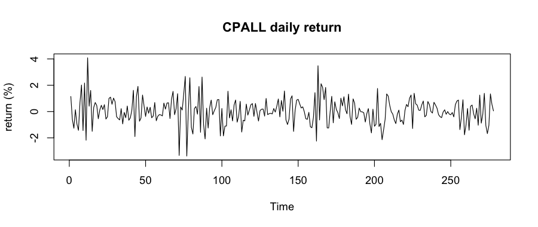
adf.test p-value = 0.01 · plot.ts(x): ช่วงผันผวนสูงสลับต่ำ
ArchTest: Chi-squared = 34.333, df = 12, p-value = 0.0005976
garch order params LB resid^2 JB
c(0,1) a0 0.538, a1 0.517 all sig 0.491 0.308
c(1,1) a0 0.116, a1 0.463, b1 0.463 all sig 0.888 0.547
c(1,2) a1 p=0.055, a2 p=0.40, b1 p=1.00 0.0006 0.620
ugarchfit sGARCH(1,1): mu 0.0318 (p 0.46) omega 0.1182 (p 0.011)
alpha1 0.4722 (p 0.000) beta1 0.4529 (p 0.000)
Model: GARCH(1,1).
Reason: x is a daily stock return; ADF p = 0.01 → stationary. The time plot shows volatility clustering and ArchTest p = 0.0006 → ARCH effect, so the variance must be modelled.
Steps: compare ARCH(1), GARCH(1,1), GARCH(2,1). GARCH(1,1) has all parameters significant, Ljung-Box of squared residuals p = 0.89 and Jarque-Bera p = 0.55, the best of the three.
\(x_t=0.0318+u_t,\quad u_t=\sigma_t\varepsilon_t,\quad \varepsilon_t\sim iid\ N(0,1)\)
\(\sigma_t^2=0.1182+0.4722\,u_{t-1}^2+0.4529\,\sigma_{t-1}^2\)
mu is not significant (p = 0.46), so the mean return can be taken as 0.
| ขั้น | อ่านว่า | มาจากไหน |
|---|---|---|
| 1 | x นิ่ง | ADF มี H0 = ไม่นิ่ง · p = 0.01 น้อยกว่า 0.05 ปฏิเสธ H0 |
| 2 | มี ARCH effect | กราฟเห็นช่วงผันผวนเกาะกลุ่ม และ ArchTest ปฏิเสธ H0 = ไม่มี ARCH effect |
| 3 | c(1,2) ตก | LB ของ residual² p = 0.0006 ต่ำกว่า 0.05 ข้อสำคัญที่สุดตกแล้ว |
| 4 | ARCH(1) ผ่านแต่แพ้ | ผ่านทุกเกณฑ์เหมือนกัน แต่ GARCH(1,1) LB 0.888 สูงกว่า 0.491 และ JB ดีกว่า |
| 5 | alpha1 + beta1 = 0.925 | น้อยกว่า 1 ความแปรปรวนไม่ระเบิด · ใกล้ 1 แปลความได้ว่าความผันผวนค้างนาน |
⚠ ถ้าใช้ c(1,2) ของ tseries จะได้ α สองตัว β หนึ่งตัว ซึ่ง rugarch เขียนเป็น garchOrder = c(2,1)
(a) \(\sigma_{t+1}^2=0.118+0.472(1.5)^2+0.453(0.6)=0.118+1.062+0.2718=1.4518\)
\(\sigma_{t+1}=\sqrt{1.4518}=1.205\)
(b) \(\bar\sigma^2=\dfrac{\omega}{1-\alpha_1-\beta_1}=\dfrac{0.118}{1-0.472-0.453}=\dfrac{0.118}{0.075}=1.573\)
| ขั้น | เขียนว่า | ทำแบบนี้เพราะ |
|---|---|---|
| 1 | เลื่อนเวลา | สมการพูดถึง t ที่ใช้ของ t − 1 · พรุ่งนี้คือ t + 1 จึงใช้ของวันนี้ \(u_t\) และ \(\sigma_t^2\) |
| 2 | \(1.5^2=2.25\) | ยกกำลังสองก่อนคูณ · \(0.472\times2.25=1.062\) |
| 3 | \(0.453\times0.6\) | ได้ 0.2718 · \(\sigma_t^2\) เป็นกำลังสองอยู่แล้ว ไม่ต้องยกกำลังอีก |
| 4 | ระยะยาว | ถ้าวันต่อวันเท่ากัน ให้ทุกตัวเป็น \(\bar\sigma^2\): \(\bar\sigma^2=\omega+\alpha\bar\sigma^2+\beta\bar\sigma^2\) ย้ายข้างได้ \(\bar\sigma^2(1-\alpha-\beta)=\omega\) |
⚠ วันนี้ผลตอบแทนขยับแรง 1.5 ความแปรปรวนพรุ่งนี้กระโดดจาก 0.6 เป็น 1.45 นี่คือ volatility clustering
ArchTest: Chi-squared = 487.59, df = 12, p-value < 2.2e-16
garch order params LB resid^2 JB
c(0,1) a0 0.351, a1 0.350 all sig 0.033 0.000
c(1,1) a0 0.066, a1 0.244, b1 0.618 all sig 0.016 0.509
c(1,2) a0 0.143, a1 0.125, a2 0.305, b1 0.263 all sig 0.934 0.986
ugarchfit garchOrder = c(2,1): mu 0.0683 omega 0.1379 alpha1 0.1279
alpha2 0.3186 beta1 0.2583 (all p < 0.002)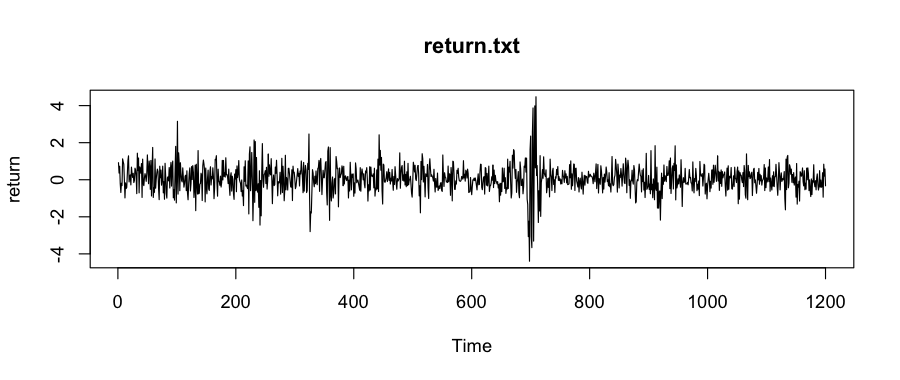
ArchTest p < 2.2e-16 → strong ARCH effect.
ARCH(1) and GARCH(1,1) fail the Ljung-Box test on squared residuals (p = 0.033 and 0.016). GARCH with two ARCH terms and one GARCH term (tseries order c(1,2)) passes: all parameters significant, LB p = 0.934, JB p = 0.986.
\(x_t=0.0683+u_t,\quad u_t=\sigma_t\varepsilon_t\)
\(\sigma_t^2=0.1379+0.1279\,u_{t-1}^2+0.3186\,u_{t-2}^2+0.2583\,\sigma_{t-1}^2\)
mu is significant here, so keep it in the mean equation.
| ขั้น | คิดอย่างไร | เหตุผล |
|---|---|---|
| 1 | ไม่หยุดที่ (1,1) | GARCH(1,1) parameter significant ครบ แต่ LB ของ residual² ตก ซึ่งเป็นเกณฑ์ที่สำคัญที่สุด |
| 2 | ลำดับใน rugarch | tseries c(1,2) คือ β 1 ตัว α 2 ตัว · rugarch ใส่ c(2,1) จึงได้ alpha1, alpha2, beta1 |
| 3 | u ไม่ใช่ x | \(u_t=x_t-\mu\) ถ้า mu ไม่ใช่ 0 ต้องลบ mu ก่อนยกกำลังสอง |
ugarchforecast ที่ได้ 0.5654\(u_T=-0.3286-0.0683=-0.3969,\quad u_{T-1}=0.5795-0.0683=0.5112\)
\(\sigma_{T+1}^2=0.1379+0.1279(0.3969)^2+0.3186(0.5112)^2+0.2583(0.5511)^2\)
\(=0.1379+0.0201+0.0833+0.0784=0.3198\)
\(\sigma_{T+1}=\sqrt{0.3198}=0.5655\), which matches R (0.5654).
| ขั้น | เขียนว่า | มาจากไหน |
|---|---|---|
| 1 | ลบ mu | mu = 0.0683 จากข้อ 9.3 |
| 2 | \(0.3969^2=0.1575\) | ยกกำลังสองเครื่องหมายลบหายไป · \(0.1279\times0.1575=0.0201\) |
| 3 | \(0.5112^2=0.2613\) | \(0.3186\times0.2613=0.0833\) · ตัวนี้คือ \(u_{t-2}\) ของวัน T + 1 |
| 4 | \(0.5511^2=0.3037\) | R ให้ σ ไม่ใช่ σ² ต้องยกกำลังสองก่อน · \(0.2583\times0.3037=0.0784\) |
| 5 | ถอดรูท | ugarchforecast รายงาน sigma คือ σ ไม่ใช่ σ² |
อาจารย์บอกใน Class 8 ว่าวิธีนี้ "เจอ γ ให้แทนด้วย γ̂ จาก sample เจอ ρ ให้แทนด้วย ρ̂" และข้อสอบเก่ามีสองครั้ง แม้ในคลาสจะบอกว่าไม่เน้น
| โมเดล | หาพารามิเตอร์ | หา σ² |
|---|---|---|
| AR(1) | \(\hat\phi=\hat\rho_1\) | \(\hat\sigma^2=\hat\gamma_0(1-\hat\phi^2)\) |
| AR(2) | แก้สองสมการ \(\rho_1=\phi_1+\phi_2\rho_1\) และ \(\rho_2=\phi_1\rho_1+\phi_2\) | \(\hat\sigma^2=\hat\gamma_0(1-\hat\phi_1\hat\rho_1-\hat\phi_2\hat\rho_2)\) |
| MA(1) | \(\hat\rho_1=\frac{\theta}{1+\theta^2}\) ย้ายข้างเป็น \(\hat\rho_1\theta^2-\theta+\hat\rho_1=0\) เลือกรากที่ \(|\theta|<1\) | \(\hat\sigma^2=\hat\gamma_0/(1+\hat\theta^2)\) |
สองสมการของ AR(2) มาจาก Yule-Walker \(\rho_h=\phi_1\rho_{h-1}+\phi_2\rho_{h-2}\) แทน h = 1 และ h = 2 ใช้ \(\rho_0=1\) และ \(\rho_{-1}=\rho_1\) ดูL6 ตอน 2.1
h 0 1 2 3 4 5 γ̂(h) 2.400 0.072 0.792 0.019 0.124 0.181(a) Model the data as AR(2). Estimate \(\phi_1\) and \(\phi_2\). (b) Estimate the white noise variance \(\sigma^2\).
\(\hat\rho_1=\dfrac{0.072}{2.4}=0.03,\qquad \hat\rho_2=\dfrac{0.792}{2.4}=0.33\)
Yule-Walker: \(\hat\rho_1=\phi_1+\phi_2\hat\rho_1,\quad \hat\rho_2=\phi_1\hat\rho_1+\phi_2\)
\(0.03=\phi_1+0.03\phi_2\quad\Rightarrow\quad\phi_1=0.03-0.03\phi_2\)
\(0.33=0.03(0.03-0.03\phi_2)+\phi_2=0.0009+0.9991\phi_2\)
\(\hat\phi_2=\dfrac{0.3291}{0.9991}=0.3294,\qquad \hat\phi_1=0.03-0.03(0.3294)=0.0201\)
(b) \(\hat\sigma^2=\hat\gamma_0(1-\hat\phi_1\hat\rho_1-\hat\phi_2\hat\rho_2)=2.4(1-0.0201\times0.03-0.3294\times0.33)\)
\(=2.4(1-0.0006-0.1087)=2.4(0.8907)=2.138\)
| ขั้น | เขียนว่า | ทำแบบนี้เพราะ |
|---|---|---|
| 1 | หาร γ̂(0) | Yule-Walker ใช้ ρ ไม่ใช่ γ · \(0.072\div2.4=0.03\) · \(0.792\div2.4=0.33\) · ค่าที่ lag 3–5 ไม่ใช้ เพราะ AR(2) ต้องการแค่สองสมการ |
| 2 | แยก \(\phi_1\) จากสมการแรก | ย้าย \(0.03\phi_2\) ข้ามไปเป็นลบ ตาม ก1 |
| 3 | แทนในสมการที่สอง | เหลือตัวไม่รู้ค่าแค่ \(\phi_2\) · กระจาย \(0.03\times0.03=0.0009\) และ \(0.03\times(-0.03\phi_2)=-0.0009\phi_2\) |
| 4 | \(0.9991\phi_2\) | รวม \(\phi_2-0.0009\phi_2=(1-0.0009)\phi_2\) |
| 5 | \(0.3291/0.9991\) | ย้าย 0.0009 ไปซ้าย \(0.33-0.0009=0.3291\) แล้วหาร 0.9991 |
| 6 | \(\phi_1=0.0201\) | แทน \(\phi_2\) กลับในบรรทัดขั้น 2 · \(0.03\times0.3294=0.00988\) · \(0.03-0.00988=0.0201\) |
| 7 | σ² | \(0.0201\times0.03=0.0006\) · \(0.3294\times0.33=0.1087\) · \(1-0.0006-0.1087=0.8907\) · คูณ 2.4 |
⚠ ตรวจคำตอบ: แทน \(\phi_1, \phi_2\) กลับในสองสมการ \(0.0201+0.3294\times0.03=0.030\) ✓ และ \(0.0201\times0.03+0.3294=0.330\) ✓
AR(1): \(\gamma_1=\phi\gamma_0\Rightarrow\phi=\dfrac{\gamma_1}{\gamma_0}=\rho_1\)
(a) \(\hat\phi=\hat\rho_1=\dfrac{0.072}{2.4}=0.03\)
AR(1): \(\gamma_0=\dfrac{\sigma^2}{1-\phi^2}\Rightarrow\sigma^2=\gamma_0(1-\phi^2)\)
(b) \(\hat\sigma^2=2.4(1-0.03^2)=2.4(0.9991)=2.398\)
| ขั้น | เขียนว่า | ทำแบบนี้เพราะ |
|---|---|---|
| 1 | \(\gamma_1=\phi\gamma_0\) | Yule-Walker ของ AR(1) ที่ h = 1 · หารทั้งสองข้างด้วย \(\gamma_0\) ได้ \(\phi=\rho_1\) |
| 2 | \(\gamma_0=\sigma^2/(1-\phi^2)\) | variance ของ AR(1) จาก L5 คูณ \((1-\phi^2)\) ทั้งสองข้าง ได้ \(\sigma^2\) |
| 3 | \(0.03^2=0.0009\) | \(1-0.0009=0.9991\) · \(2.4\times0.9991=2.398\) |
⚠ φ̂ = 0.03 แทบเป็น 0 แต่ ρ̂₂ = 0.33 สูงกว่ามาก ข้อมูลนี้ไม่น่าเป็น AR(1) ถ้าโจทย์ถามต่อว่าเหมาะไหม ให้ตอบว่า AR(2) ในข้อ 10.1 เหมาะกว่า
\(\hat\rho_1=\dfrac{\theta}{1+\theta^2}\Rightarrow0.4(1+\theta^2)=\theta\Rightarrow0.4\theta^2-\theta+0.4=0\)
\(\theta=\dfrac{1\pm\sqrt{1-4(0.4)(0.4)}}{2(0.4)}=\dfrac{1\pm\sqrt{0.36}}{0.8}=\dfrac{1\pm0.6}{0.8}\Rightarrow\theta=2,\ 0.5\)
Choose the invertible root: \(\hat\theta=0.5\)
\(\gamma_0=\sigma^2(1+\theta^2)\Rightarrow\hat\sigma^2=\dfrac{2.5}{1+0.25}=2\)
| ขั้น | เขียนว่า | ทำแบบนี้เพราะ |
|---|---|---|
| 1 | คูณไขว้ | คูณ \((1+\theta^2)\) ทั้งสองข้าง ตัวส่วนหายไป |
| 2 | ย้าย θ ไปซ้าย | ก1: \(0.4+0.4\theta^2-\theta=0\) เรียงเป็น a = 0.4, b = −1, c = 0.4 · ข้อนี้ c ไม่ใช่ 1 |
| 3 | \(\sqrt{0.36}=0.6\) | \(b^2=1\) · \(4ac=4\times0.4\times0.4=0.64\) · \(1-0.64=0.36\) |
| 4 | 2 และ 0.5 | \(-b=1\), \(2a=0.8\) · \(1.6/0.8=2\) · \(0.4/0.8=0.5\) · สองรากเป็นส่วนกลับของกันเสมอ |
| 5 | เลือก 0.5 | θ กับ 1/θ ให้ ρ₁ เท่ากัน เลือกตัวที่ |θ| < 1 เพราะ invertible |
⚠ ตรวจ: \(0.5/(1+0.25)=0.4\) ✓
\(0.6\theta^2-\theta+0.6=0\), \(b^2-4ac=1-4(0.6)(0.6)=1-1.44=-0.44<0\)
There is no real solution for θ. Since \(|\rho_1|\le\tfrac12\) for every MA(1), \(\hat\rho_1=0.6\) means MA(1) is not a suitable model.
| ขั้น | เขียนว่า | ทำแบบนี้เพราะ |
|---|---|---|
| 1 | D ติดลบ | θ ต้องเป็นจำนวนจริง รากเชิงซ้อนใช้ไม่ได้ |
| 2 | เชื่อมกับ ½ | ข้อพิสูจน์ \(|\rho_1|\le\tfrac12\) ในทักษะ 14 · D ≥ 0 ก็ต่อเมื่อ \(4\rho_1^2\le1\) คือ \(|\rho_1|\le\tfrac12\) พอดี |
\(0.5=\phi_1+0.5\phi_2,\qquad 0.1=0.5\phi_1+\phi_2\)
From the first: \(\phi_1=0.5-0.5\phi_2\)
\(0.1=0.5(0.5-0.5\phi_2)+\phi_2=0.25+0.75\phi_2\Rightarrow\phi_2=\dfrac{-0.15}{0.75}=-0.2\)
\(\phi_1=0.5-0.5(-0.2)=0.6\)
\(\hat\sigma^2=4(1-0.6\times0.5-(-0.2)\times0.1)=4(1-0.3+0.02)=2.88\)
| ขั้น | เขียนว่า | ทำแบบนี้เพราะ |
|---|---|---|
| 1 | \(0.25+0.75\phi_2\) | \(0.5\times0.5=0.25\) · \(0.5\times(-0.5\phi_2)=-0.25\phi_2\) · \(-0.25\phi_2+\phi_2=0.75\phi_2\) |
| 2 | \(-0.15/0.75\) | ย้าย 0.25 ไปซ้าย \(0.1-0.25=-0.15\) หาร 0.75 ได้ −0.2 |
| 3 | \(-0.5(-0.2)=+0.1\) | ลบคูณลบเป็นบวก ก2 · \(0.5+0.1=0.6\) |
| 4 | \(-(-0.2)(0.1)=+0.02\) | เครื่องหมายสองชั้น ลบของลบเป็นบวก |
⚠ ได้ φ = (0.6, −0.2) ตรวจสามเหลี่ยม: 0.4 < 1, −0.8 < 1, |−0.2| < 1 นิ่ง
Trend: \(T_t=19.83+0.88t,\ t=1,\dots,12\)
| t | Y | T | Y/T | t | Y | T | Y/T |
|---|---|---|---|---|---|---|---|
| 1 | 16 | 20.71 | 0.7726 | 7 | 32 | 25.99 | 1.2312 |
| 2 | 25 | 21.59 | 1.1579 | 8 | 23 | 26.87 | 0.8560 |
| 3 | 31 | 22.47 | 1.3796 | 9 | 17 | 27.75 | 0.6126 |
| 4 | 24 | 23.35 | 1.0278 | 10 | 31 | 28.63 | 1.0828 |
| 5 | 14 | 24.23 | 0.5778 | 11 | 40 | 29.51 | 1.3555 |
| 6 | 27 | 25.11 | 1.0753 | 12 | 27 | 30.39 | 0.8885 |
Average ratio: Q1 0.6543, Q2 1.1053, Q3 1.3221, Q4 0.9241; mean = 1.0015
Seasonal index: Q1 0.6534, Q2 1.1037, Q3 1.3202, Q4 0.9227
2018: \(t=13: (19.83+0.88\times13)(0.6534)=31.27\times0.6534=20.43\)
\(t=14: 32.15\times1.1037=35.48\qquad t=15: 33.03\times1.3202=43.61\qquad t=16: 33.91\times0.9227=31.29\)
| ขั้น | เขียนว่า | มาจากไหน |
|---|---|---|
| 1 | T ที่ t = 1 | \(19.83+0.88\times1=20.71\) · t นับต่อกันทั้ง 12 ไตรมาส ไม่เริ่มใหม่ทุกปี |
| 2 | 0.7726 | \(16\div20.71\) ต่ำกว่า 1 คือไตรมาส 1 ขายได้ต่ำกว่าเส้น trend |
| 3 | Q1 0.6543 | เฉลี่ย t = 1, 5, 9 ซึ่งเป็นไตรมาส 1 ทั้งหมด: \((0.7726+0.5778+0.6126)\div3\) |
| 4 | หาร 1.0015 | สี่ค่ารวมกันได้ 4.0059 เฉลี่ย 1.0015 หารทุกตัวให้เฉลี่ยเป็น 1 พอดี |
| 5 | t = 13 | ปี 2018 ไตรมาส 1 คือจุดที่ 13 ต่อจาก 12 |
⚠ SI ของไตรมาส 3 = 1.32 อ่านว่าไตรมาส 3 ขายสูงกว่า trend 32% ไตรมาส 1 ต่ำกว่า 35% เขียนการแปลความนี้ไว้ด้วยจะดูครบ
t <- 1:47
fit <- lm(rain$rain ~ t); coef(fit) # 12.4589 1.1741
ratio <- rain$rain / fitted(fit)
si <- tapply(ratio, rep(1:12, length.out = 47), mean)
si <- si / mean(si)
(coef(fit)[1] + coef(fit)[2] * c(48, 49, 50)) * si[c(12, 1, 2)]Trend: \(T_t=12.4589+1.1741t\) (t = 1 is Jan 2022)
Seasonal index: Jan 1.124, Feb 0.974, Mar 0.774, Apr 0.678, May 0.811, Jun 0.878, Jul 0.962, Aug 1.059, Sep 1.139, Oct 1.186, Nov 1.273, Dec 1.143
Dec 2025 (t = 48): \(68.815\times1.1428=78.64\)
Jan 2026 (t = 49): \(69.989\times1.1240=78.67\)
Feb 2026 (t = 50): \(71.163\times0.9736=69.29\)
| ขั้น | เขียนว่า | มาจากไหน |
|---|---|---|
| 1 | t = 48 | ข้อมูลจบ Nov 2025 ที่ t = 47 · Dec 2025 คือ 48 |
| 2 | 68.815 | \(12.4589+1.1741\times48\) |
| 3 | Dec มีแค่ 3 ค่า | Jan–Nov มีปีละค่า 4 ปี Dec มีแค่ 2022–2024 เฉลี่ยตามจำนวนที่มี |
| 4 | Nov สูงสุด 1.273 | ฤดูฝนภาคใต้ฝั่งตะวันออกอยู่ปลายปี ตรงกับข้อมูล |
⚠ Excel ปัดทศนิยมไม่เท่า R ตัวเลขอาจต่างกันหลักทศนิยมที่สองได้ ให้เขียนวิธีให้ครบ
Detrend by subtraction \(Y_t-T_t\); average by quarter and adjust to mean 0:
\(S_1=-8.60,\ S_2=2.52,\ S_3=8.31,\ S_4=-2.24\)
2018: \(31.27-8.60=22.67,\ 32.15+2.52=34.67,\ 33.03+8.31=41.34,\ 33.91-2.24=31.67\)
Additive seasonality is a fixed amount in $ millions; multiplicative is a fixed percentage, so it grows with the trend.
| ขั้น | แบบบวก | แบบคูณ |
|---|---|---|
| detrend | ลบ | หาร |
| ปรับ index | ให้เฉลี่ยเป็น 0 | ให้เฉลี่ยเป็น 1 |
| พยากรณ์ | T + S | T × SI |
| โจทย์บอกว่า | เลือก |
|---|---|
| อนุกรมเดียว มีฤดูกาลคงที่ ไม่มีข้อมูลอื่น | SARIMA |
| มี X ที่เรากำหนดเองหรือรู้ล่วงหน้า และ X ส่งผลทางเดียว | ARIMAX |
| หลายตัวแปรส่งผลกันไปมา "ตอบสนองร่วมกัน" | VAR |
| ราคาหุ้น ผันผวนเป็นช่วง ACF ของ return² ลดช้า | GARCH |
| ข้อมูลรายวัน ฤดูกาลหลายชั้น มีวันหยุดเทศกาล trend หักเปลี่ยน | Prophet |
| สนใจ "สัมประสิทธิ์" ของ X แต่ error สัมพันธ์กัน | GLS |
First ask whether the regressor affects Y only (one-way) or whether Y and X affect each other (feedback), and whether the goal is explanation or forecasting.
GLS: linear regression of Y on X where the errors are autocorrelated. It corrects the standard errors, so use it when the goal is to estimate and test the effect of X.
ARIMAX: regression with ARIMA errors. Use it when X affects Y one-way and future values of X are known or controlled (for example advertising budget), and the goal is to forecast Y.
VAR: every variable is explained by lags of all variables. Use it when the variables influence each other and all of them must be forecast together; Granger causality shows the direction of influence.
| โมเดล | X ในอนาคต | ทิศของผล |
|---|---|---|
| GLS | ต้องรู้ | X ไป Y เน้นอธิบาย |
| ARIMAX | ต้องรู้ | X ไป Y เน้นพยากรณ์ |
| VAR | ไม่ต้องรู้ โมเดลพยากรณ์ให้เอง | สองทาง |
(1) FB Prophet: daily data, weekly seasonality and holiday effects.
(2) GARCH: volatility clustering; squared returns are autocorrelated.
(3) ARIMAX: Ads is a known regressor that drives sales one-way.
(4) SARIMA: one monthly series with yearly seasonality and a trend.
(5) VAR: the two GDP series affect each other.
(6) SARIMA: one series with stable monthly seasonality and no extra information.
⚠ อาจารย์เฉลยครบทั้ง 6 ชุดใน Class 13 ชุด (4) อาจารย์ตอบ SARIMA เพราะ "อนุกรมเวลามีแค่อันเดียว ... เป็น seasonal" ไม่ได้ให้น้ำหนักกับช่วงโควิด หลักคือดูว่าโจทย์ให้ข้อมูลอะไร "เพิ่ม" จากอนุกรมเดียวที่มีฤดูกาล
ccf(sales, coupon) มีแท่งเดียวที่เกินเส้นประชัดเจน อยู่ที่ lag +3 สูงราว 0.85 แท่งอื่นอยู่ในเส้นประ · ccf(sales, bogo) ทุกแท่งอยู่ในเส้นประ สูงสุดราว 0.23 อธิบายผลให้ผู้บริหารฟัง ให้เกิด insight ทางธุรกิจ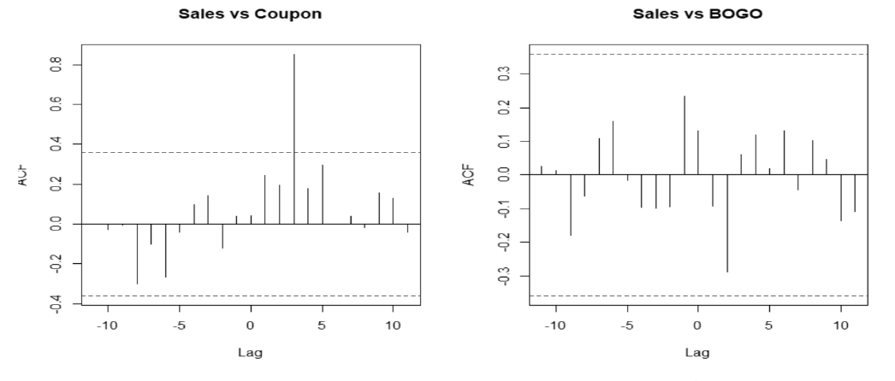
In R, ccf(sales, coupon) at lag k measures the correlation between sales at week t + k and coupon spending at week t.
Coupon: a strong positive correlation (about 0.85) at lag +3, and nothing at lag 0. Spending on receipt coupons is followed by higher sales about 3 weeks later, which fits how coupons work: customers redeem them on a later visit.
BOGO: no significant correlation at any lag, so BOGO spending shows no measurable link with sales of this SKU.
Insight: keep the coupon programme and plan stock and staff about 3 weeks after each coupon campaign; review or cut the BOGO budget for this SKU. Correlation does not prove causation, so test with a controlled campaign.
| ขั้น | อ่านว่า | เหตุผล |
|---|---|---|
| 1 | lag บวก | ccf(x, y) ที่ lag k เทียบ x ที่ t + k กับ y ที่ t · x คือ sales · lag +3 คือยอดขายตามหลังคูปอง 3 สัปดาห์ |
| 2 | เส้นประ | ขอบ 95% เหมือนใน ACF แท่งที่ไม่เกินถือว่าไม่ต่างจาก 0 |
| 3 | ภาษาผู้บริหาร | ข้อนี้ให้คะแนน insight ให้บอกว่าต้องทำอะไร ไม่ใช่บอกแค่ตัวเลข |
⚠ ถ้าสลับลำดับเป็น ccf(coupon, sales) แท่งเดียวกันจะย้ายไปอยู่ที่ lag −3 อ่านลำดับในคำสั่งก่อนตีความทุกครั้ง
ccf(sales, ads) ของข้อมูลรายสัปดาห์ 120 สัปดาห์ ได้กราฟข้างล่าง แท่งสูงสุด 0.76 ที่ lag +2 อธิบายให้ผู้บริหาร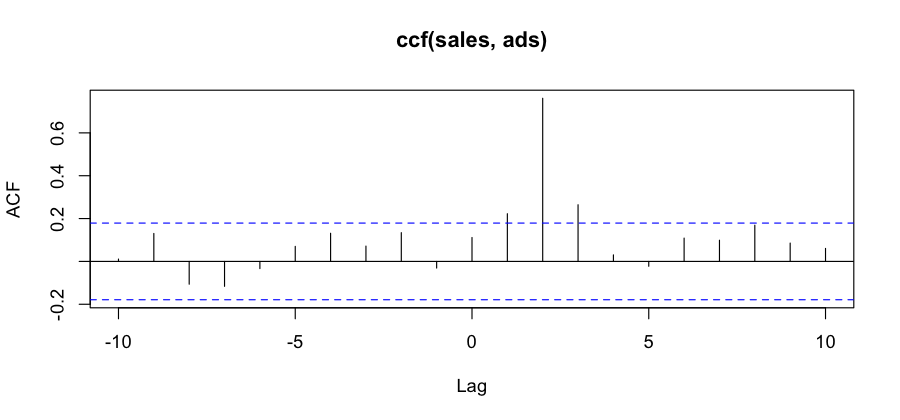
ccf(sales, ads) at lag k is the correlation between sales at week t + k and ads at week t.
The peak 0.76 at lag +2 is far above the bounds (±0.18): ad spending is followed by higher sales about two weeks later.
Insight: plan ad campaigns two weeks before the sales period you want to boost; ads could also be used as a lagged regressor (ARIMAX).
| ขั้น | เขียนว่า | ทำแบบนี้เพราะ / มาจากไหน |
|---|---|---|
| 1 | ขอบ 0.18 | \(2/\sqrt{120}=0.18\) |
| 2 | lag บวก | ตัวแรกในคำสั่งคือ sales ที่ t + k ตามหลังตัวที่สองคือ ads ที่ t |
(1) GARCH: volatility clustering.
(2) ARIMAX: temperature forecast is a known regressor driving demand one way.
(3) VAR: the three variables affect each other.
(4) FB Prophet: daily data, weekly pattern and holidays.
(5) SARIMA: one series with stable yearly seasonality.
(6) ARIMAX: price is set by the company and known in advance.
| ขั้น | เขียนว่า | ทำแบบนี้เพราะ / มาจากไหน |
|---|---|---|
| 1 | ดูสิ่งที่ "เพิ่ม" | อนุกรมเดียวมีฤดูกาลคือ SARIMA · มี X รู้ล่วงหน้าคือ ARIMAX · ส่งผลกันไปมาคือ VAR · ความผันผวนคือ GARCH · รายวันมีวันหยุดคือ Prophet |
| โมเดล | ACF | PACF |
|---|---|---|
| AR(p) | ค่อย ๆ ลด แบบ exponential หรือคลื่นที่หดลง | ตัดหลัง lag p |
| MA(q) | ตัดหลัง lag q | ค่อย ๆ ลด |
| ARMA(p,q) | ค่อย ๆ ลดหลัง lag q | ค่อย ๆ ลดหลัง lag p |
| ARIMA ที่ d ≥ 1 | ลดช้ามาก ใกล้ 1 หลาย lag | lag 1 ใกล้ 1 |
| ฤดูกาล AR(P)ₛ | ค่อย ๆ ลดที่ lag s, 2s, 3s เป็น 0 ที่ lag อื่น | ไม่ใช่ 0 ที่ s, 2s, …, Ps แล้วตัด |
| ฤดูกาล MA(Q)ₛ | ไม่ใช่ 0 ที่ s, 2s, …, Qs แล้วตัด | ค่อย ๆ ลดที่ lag s, 2s, 3s |
(a) \(AR(2)_3\): \(X_t=\Phi_1X_{t-3}+\Phi_2X_{t-6}+w_t\). ACF tails off at lags 3, 6, 9, … and is zero at all other lags. PACF is nonzero at lags 3 and 6 and cuts off after lag 6.
(b) \(MA(2)_4\): \(X_t=w_t+\Theta_1w_{t-4}+\Theta_2w_{t-8}\). ACF is nonzero only at lags 4 and 8 and cuts off after lag 8. PACF tails off at lags 4, 8, 12, ….
(c) ARIMA(2,1,0): the ACF of \(X_t\) decays very slowly because of the unit root. After one difference, \(\nabla X_t\) is AR(2): ACF tails off, PACF cuts off after lag 2.
(d) \(MA(4)_2\): nonzero ACF only at lags 2, 4, 6, 8, cut off after lag 8; PACF tails off at lags 2, 4, 6, ….
| ขั้น | อ่านว่า | เหตุผล |
|---|---|---|
| 1 | \(AR(2)_3\) | ตัวห้อย 3 คือ s = 3 · AR อันดับ 2 ของฤดูกาล ใช้ lag 3 และ 6 ไม่ใช่ lag 1 และ 2 |
| 2 | ตัดที่ไหน | Q = 2 กับ s = 4 ได้ lag สุดท้าย \(2\times4=8\) · Q = 4 กับ s = 2 ได้ \(4\times2=8\) เหมือนกัน แต่แท่งอยู่คนละตำแหน่ง |
| 3 | ARIMA ตอบสองส่วน | ข้อ c ได้ 2 คะแนน ต้องตอบทั้งก่อนและหลัง difference |
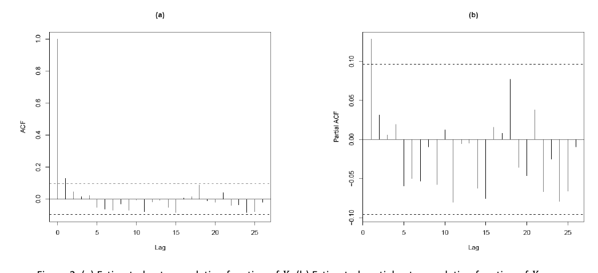
Both the ACF and the PACF have only one significant spike, at lag 1, and are within the bounds afterwards.
ACF cutting off after lag 1 suggests MA(1); PACF cutting off after lag 1 suggests AR(1). With such a small lag-1 correlation (≈ 0.12) the two models are almost the same, so either AR(1) or MA(1) is reasonable. The dependence is weak; the data are close to white noise.
| ขั้น | อ่านว่า | มาจากไหน |
|---|---|---|
| 1 | เส้นประ ±0.1 | \(2/\sqrt{415}=0.098\) |
| 2 | AR(1) กับ MA(1) เหมือนกัน | ρ₁ เล็ก ACF ของ AR(1) ที่ lag 2 คือ \(0.12^2=0.014\) เล็กจนแยกจาก 0 ไม่ออก |
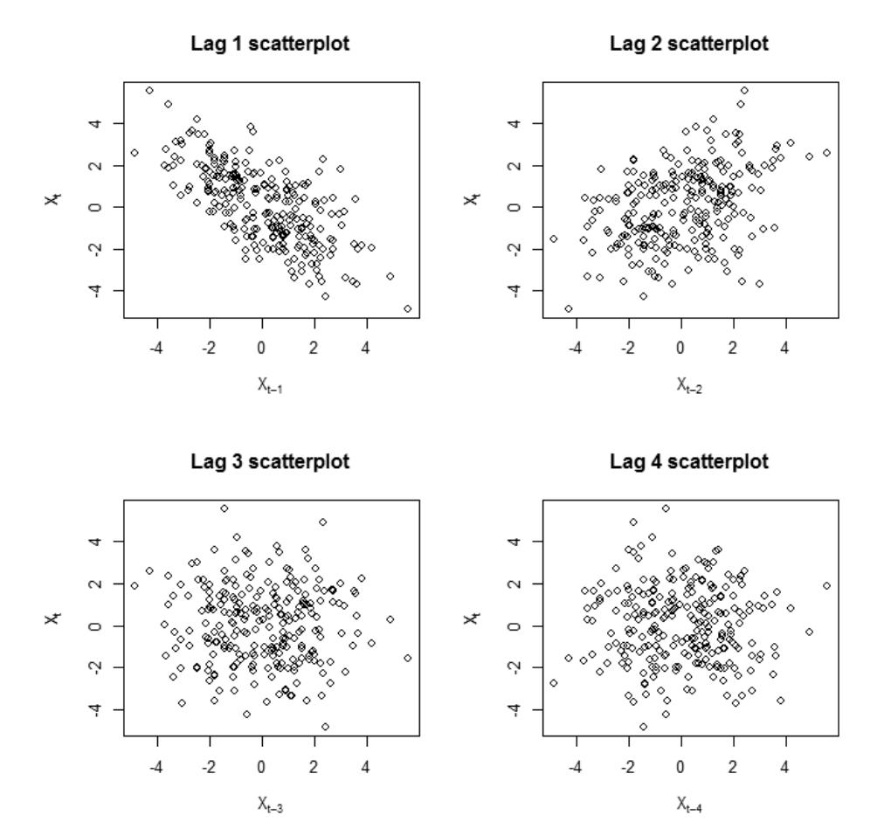
\(q=2\).
Lag 1 shows a clear negative relationship (\(\rho_1<0\)), lag 2 a weak positive relationship (\(\rho_2>0\)), and lags 3 and 4 show no relationship (\(\rho_3\approx\rho_4\approx0\)). An MA(q) has ACF zero after lag q, so q = 2.
| ขั้น | ภาพ | ความหมาย |
|---|---|---|
| 1 | จุดเรียงเป็นแถบเอียงลง | \(X_{t-1}\) สูง \(X_t\) มักต่ำ ρ ติดลบ |
| 2 | ก้อนกลม | ρ ใกล้ 0 · lag สุดท้ายที่ยังมีทิศคือคำตอบ q |
MA(1) \(X_t=w_t+\theta w_{t-1}\): ACF \(\rho_1=\theta/(1+\theta^2)\), \(|\rho_1|\le\tfrac12\), and \(\rho_h=0\) for \(h\ge2\) (cuts off). PACF tails off, alternating in sign if θ > 0.
AR(1) \(X_t=\phi X_{t-1}+w_t\), \(|\phi|<1\): ACF \(\rho_h=\phi^h\), tails off exponentially (alternating if φ < 0). PACF \(\phi_{11}=\phi\), zero for \(h\ge2\) (cuts off).
ARMA(2,2): both ACF and PACF tail off; neither cuts off. The ACF decays after lag 2 as a mixture of exponential decay and damped sine waves, depending on the AR roots.
⚠ อาจารย์บอกใน Class 13 ว่าแนวบรรยาย ACF/PACF แบบนี้ "open book ผมคงไม่ออกหรอก" เพราะเปิดตารางสรุปได้
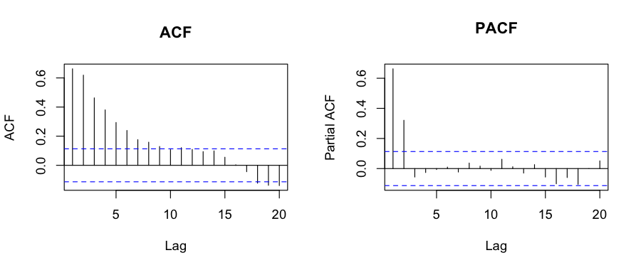
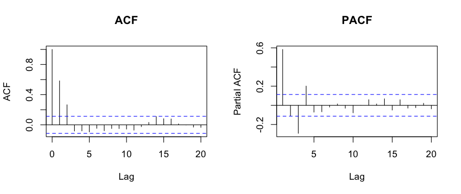
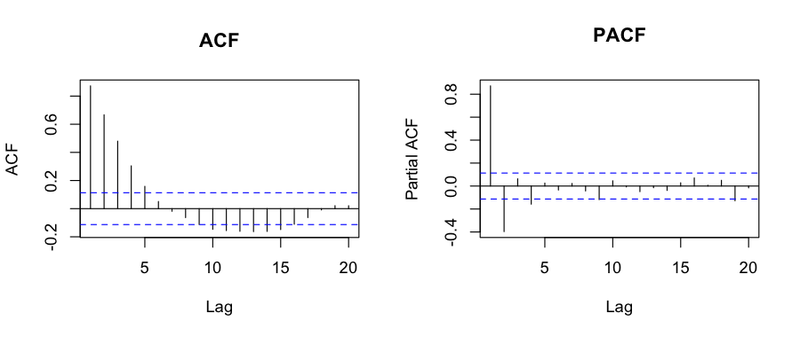
Series 1: ACF tails off slowly; PACF has spikes at lags 1–2 then cuts off → AR(2).
Series 2: ACF has spikes at lags 1–2 then cuts off; PACF tails off with alternating signs → MA(2).
Series 3: both ACF and PACF tail off with no clear cut-off → ARMA(1,1).
| ขั้น | เขียนว่า | ทำแบบนี้เพราะ / มาจากไหน |
|---|---|---|
| 1 | ชุด 1 | PACF lag 1 = 0.66, lag 2 = 0.32 แล้วอยู่ในเส้น ±0.115 |
| 2 | ชุด 2 | ACF lag 1 = 0.58, lag 2 = 0.27 แล้วอยู่ในเส้น |
| 3 | ชุด 3 | ACF ลดจาก 0.87 ช้า ๆ PACF ยังมีแท่งหลุดเส้นที่ lag 4 ไม่ตัดชัด |
⚠ ข้อมูลจริงไม่เคยตัดสวยเท่าตาราง ดูว่าฝั่งไหน "ตัด" ชัดกว่า ถ้าทั้งสองฝั่งค่อย ๆ ลด ให้ตอบ ARMA
\(\gamma(0)=Var(w_t+\theta w_{t-1})=\sigma^2(1+\theta^2)\)
\(\gamma(1)=Cov(w_t+\theta w_{t-1},\ w_{t+1}+\theta w_t)=\theta\sigma^2\)
\(\rho(1)=\dfrac{\theta}{1+\theta^2}\)
\(\dfrac{d\rho(1)}{d\theta}=\dfrac{(1+\theta^2)(1)-\theta(2\theta)}{(1+\theta^2)^2}=\dfrac{1-\theta^2}{(1+\theta^2)^2}\)
Set \(\dfrac{d\rho(1)}{d\theta}=0\Rightarrow1-\theta^2=0\Rightarrow\theta=\pm1\)
\(|\theta|<1\): derivative \(>0\); \(|\theta|>1\): derivative \(<0\); and \(\rho(1)\to0\) as \(\theta\to\pm\infty\)
Maximum at \(\theta=1\): \(\rho(1)=\dfrac{1}{1+1}=\dfrac12\); minimum at \(\theta=-1\): \(\rho(1)=-\dfrac12\)
Therefore \(-\tfrac12\le\rho(1)\le\tfrac12\), i.e. \(|\rho(1)|\le\tfrac12\) for all θ.
| ขั้น | เขียนว่า | ทำแบบนี้เพราะ |
|---|---|---|
| 1 | γ(0) | ก14: สัมประสิทธิ์ 1 กับ θ ยกกำลังสองแล้วบวก |
| 2 | γ(1) = θσ² | มี \(w_t\) ร่วมกันตัวเดียว เลขหน้าคือ 1 กับ θ คูณกันได้ θ |
| 3 | ดิฟ ρ(1) | หาค่าสูงสุดต่ำสุดด้วยวิธีแคลคูลัส: ดิฟแล้วจับเท่ากับ 0 · กฎผลหาร \(\left(\frac{u}{v}\right)'=\frac{u'v-uv'}{v^2}\) โดย u = θ ได้ u' = 1 และ v = 1 + θ² ได้ v' = 2θ |
| 4 | \(1-\theta^2\) | ตัวเศษ \((1+\theta^2)-2\theta^2=1-\theta^2\) |
| 5 | θ = ±1 | ตัวส่วนเป็นบวกเสมอ อนุพันธ์เป็น 0 เมื่อตัวเศษเป็น 0 · \(\theta^2=1\) ได้ θ = 1 หรือ −1 |
| 6 | เช็คเครื่องหมาย | ลองแทน θ = 0 ได้อนุพันธ์ = 1 เป็นบวก ฟังก์ชันขึ้น · θ = 2 ได้ \(-3/25\) เป็นลบ ฟังก์ชันลง ขึ้นแล้วลงที่ θ = 1 จุดนั้นคือค่าสูงสุด |
| 7 | แทนกลับ | θ = 1 ได้ \(1/2\) · θ = −1 ได้ \(-1/2\) |
| อีกวิธี | \((1-|\theta|)^2\ge0\) | กระจายได้ \(1+\theta^2\ge2|\theta|\) หารด้วย \(2(1+\theta^2)\) ได้ผลเดียวกัน สั้นกว่าแต่ไม่ใช่วิธีที่อาจารย์ใช้ |
⚠ อาจารย์ย้ำใน Class 13: ข้อนี้ให้ mathematical proof ถ้าแทน θ ไปเรื่อย ๆ แล้วบอกว่าไม่เกิน ½ "ผมให้คุณศูนย์" และใบ้ให้ดิฟแล้วจับเท่ากับศูนย์ ยังพูดด้วยว่า "ถ้าไม่เฉลยผมจะออกสอบ"
(a) \(\rho(0)=1,\quad \rho(1)=\dfrac{0.8}{1+0.64}=\dfrac{0.8}{1.64}=0.488,\quad \rho(h)=0\ \text{for}\ h\ge2\)
(b) \(\rho(1)\big|_{1/\theta}=\dfrac{1/\theta}{1+1/\theta^2}=\dfrac{1/\theta}{1+1/\theta^2}\cdot\dfrac{\theta^2}{\theta^2}=\dfrac{\theta}{\theta^2+1}=\rho(1)\big|_{\theta}\)
\(\rho(h)=0\) for \(h\ge2\) in both cases, so the whole ACF is unchanged.
| ขั้น | เขียนว่า | ทำแบบนี้เพราะ |
|---|---|---|
| 1 | \(0.8^2=0.64\) | \(1+0.64=1.64\) · \(0.8\div1.64=0.488\) |
| 2 | คูณ \(\theta^2/\theta^2\) | คูณด้วย 1 ค่าไม่เปลี่ยน แต่ช่วยกำจัดเศษซ้อนเศษ · บน \(\frac1\theta\times\theta^2=\theta\) · ล่าง \((1+\frac1{\theta^2})\theta^2=\theta^2+1\) |
⚠ ข้อ b คือเหตุผลที่ต้องมี invertibility ดูข้อ 1.2
\(\rho_1=\dfrac{-0.5}{1+0.25}=-0.4,\qquad \rho_1=\dfrac{-2}{1+4}=-0.4\)
Both give the same ACF, so the data cannot tell them apart. Choose θ = −0.5 because \(|\theta|<1\) (invertible).
| ขั้น | เขียนว่า | ทำแบบนี้เพราะ / มาจากไหน |
|---|---|---|
| 1 | ตัวส่วน | \((-0.5)^2=0.25\) · \((-2)^2=4\) ยกกำลังสองแล้วเป็นบวกเสมอ |
| 2 | เครื่องหมาย ρ₁ | ตามเครื่องหมายของ θ เพราะตัวส่วนเป็นบวก |
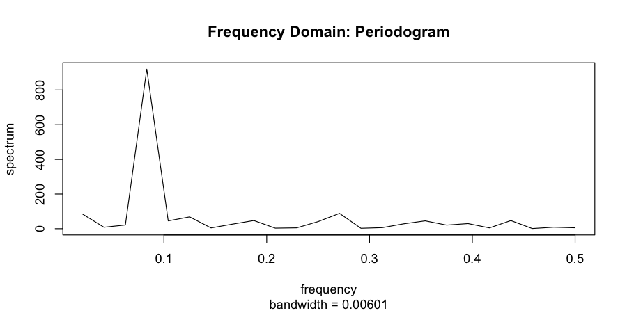
rain <- read.table("rain.txt", header = TRUE)
s <- spectrum(rain$rain, log = "no")
s$freq[which.max(s$spec)] # 0.0833
1 / s$freq[which.max(s$spec)] # 12The periodogram has its highest peak at frequency f = 0.0833 cycles per month.
Period \(T=1/f=1/0.0833=12\) months: a yearly rainy-season cycle.
So the series should be set as ts(rain$rain, start = c(2022, 1), frequency = 12) for the following parts.
| ขั้น | เขียนว่า | มาจากไหน |
|---|---|---|
| 1 | ส่งเป็นตัวเลขธรรมดา | rain$rain ยังไม่ใช่ ts แกนความถี่จึงเป็นรอบต่อเดือน |
| 2 | 1/0.0833 | ความถี่คือจำนวนรอบต่อหน่วยเวลา คาบคือกลับเศษเป็นส่วน |
⚠ เฉลยเต็มพร้อมยอดรองอยู่ในแบบฝึก L13 ข้อ 12
ts(x, frequency = 12) เข้า spectrum แล้วได้ยอดที่ f = 1 คาบเท่าไรเป็นเดือน(a) \(T=1/0.25=4\) quarters, a yearly cycle.
(b) With a ts of frequency 12, the axis is in cycles per year. f = 1 means one cycle per year, T = 1 year = 12 months.
⚠ ข้อ ข คือกับดักที่เจอบ่อย: ตัวเลขแกนเปลี่ยนตามว่าส่ง ts หรือตัวเลขธรรมดา ให้ดูว่าส่งอะไรเข้าไปก่อนแปลค่า
spectrum(q, log = "no") ได้กราฟข้างล่าง ยอดสูงสุดอยู่ที่ f = 0.25 ข้อมูลมีรอบเท่าไร และควรตั้ง ts อย่างไร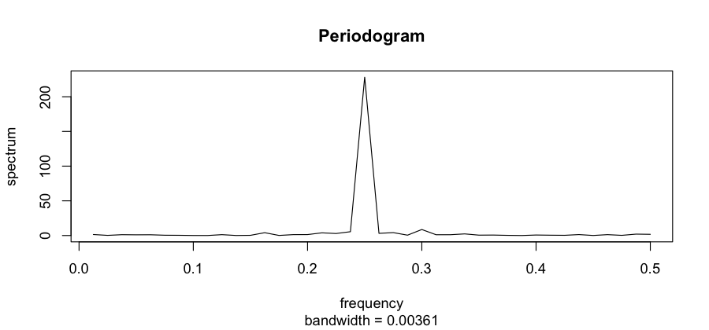
Peak at f = 0.25 cycles per quarter → period \(T=1/0.25=4\) quarters = one year.
Set ts(q, frequency = 4) before fitting a seasonal model.
| ขั้น | เขียนว่า | ทำแบบนี้เพราะ / มาจากไหน |
|---|---|---|
| 1 | 1/0.25 | ความถี่คือรอบต่อหนึ่งช่วงเวลา คาบคือกลับเศษเป็นส่วน |
| 2 | ยอดเล็กใกล้ f = 0 | คือ trend ไม่ใช่รอบ ไม่ต้องเลือก |
\(\bar x=\dfrac{1154.62}{6}=192.437\)
Deviations \(x_t-\bar x\): 3.593, 6.203, −0.857, −4.457, −5.037, 0.553
\(\sum(x_t-\bar x)^2=97.663\)
Lag 1 products: 22.291, −5.314, 3.818, 22.447, −2.787; sum = 40.454
Lag 2 products: −3.078, −27.646, 4.315, −2.466; sum = −28.876
\(\hat\rho(1)=40.454/97.663=0.414,\qquad \hat\rho(2)=-28.876/97.663=-0.296\)
Correlogram: bars at lag 0 (1), lag 1 (0.414), lag 2 (−0.296), bounds \(\pm2/\sqrt6=\pm0.816\); neither lag is significant.
(b) \(\nabla x_t\): —, 2.61, −7.06, −3.60, −0.58, 5.59
| ขั้น | เขียนว่า | มาจากไหน |
|---|---|---|
| 1 | 1154.62 | บวกราคาทั้ง 6 วัน |
| 2 | 3.593 | \(196.03-192.437\) · ทำแบบเดียวกันทุกวัน |
| 3 | lag 1 ตัวแรก 22.291 | ค่าเบี่ยงวันที่ 1 × วันที่ 2: \(3.593\times6.203\) · มี 5 คู่เพราะ n − h = 5 |
| 4 | lag 2 ตัวแรก −3.078 | วันที่ 1 × วันที่ 3: \(3.593\times(-0.857)\) · มี 4 คู่ |
| 5 | หาร 97.663 | ตัว 1/n อยู่ทั้งบนและล่าง ตัดกันได้ |
| 6 | 2.61 | \(198.64-196.03\) · วันแรกไม่มีค่าก่อนหน้า ใส่ขีด |
⚠ ข้อสอบอนุญาต Excel ช่วยคำนวณ ทำตารางสามคอลัมน์ x, x − x̄, ผลคูณ แล้วเลื่อนแถวทีละ lag เร็วที่สุด
The dashed lines are approximate 95% bounds for \(\hat\rho(h)\) when the series is white noise. A bar outside the lines is significantly different from 0.
They are computed as \(\pm1.96/\sqrt n\approx\pm2/\sqrt n\). For Nile, n = 100, so the bounds are about ±0.2.
| ขั้น | เขียนว่า | มาจากไหน |
|---|---|---|
| 1 | \(1/\sqrt n\) | ถ้าเป็น white noise \(\hat\rho(h)\) แจกแจงประมาณ normal ที่ mean 0 และ sd \(1/\sqrt n\) |
| 2 | 1.96 | ค่า z ของ 95% สองข้าง |
\(\bar x=35/5=7\); deviations: −3, −1, −2, 2, 4; \(\sum(x_t-\bar x)^2=9+1+4+4+16=34\)
Lag 1: \((-3)(-1)+(-1)(-2)+(-2)(2)+(2)(4)=3+2-4+8=9\Rightarrow\hat\rho(1)=9/34=0.265\)
Lag 2: \((-3)(-2)+(-1)(2)+(-2)(4)=6-2-8=-4\Rightarrow\hat\rho(2)=-4/34=-0.118\)
\(\nabla x_t\): —, 2, −1, 4, 2. Bounds \(\pm2/\sqrt5=\pm0.894\): no lag is significant.
| ขั้น | เขียนว่า | ทำแบบนี้เพราะ / มาจากไหน |
|---|---|---|
| 1 | ผลคูณ lag 1 | คู่ติดกัน 4 คู่: ตัวที่ 1×2, 2×3, 3×4, 4×5 ของค่าเบี่ยง |
| 2 | ผลคูณ lag 2 | คู่ห่างกันสอง 3 คู่: 1×3, 2×4, 3×5 |
| 3 | ไม่หาร n − h | ทั้งบนและล่างหาร n เท่ากัน ตัดกันได้ ใช้ผลรวมตรง ๆ |
summary(lm(Nile ~ time(Nile))) ได้ intercept 6129.46 และ slope −2.7143 (p = 1.07e-06) นิสิตคิดว่าผลลัพธ์นี้นำไปใช้ในการวิเคราะห์อนุกรมเวลาได้อย่างไร อธิบายให้ชัดเจนและกระชับ พร้อมบอกชื่อตัวแบบที่เกี่ยวข้องThe fitted line \(\hat T_t=6129.46-2.7143t\) is a linear trend: the flow falls by about 2.71 per year, and the slope is significant (p = 1.07e-06).
Use: detrending. Subtract the trend, \(x_t-\hat T_t\), to get a detrended series, or use it as the trend line in a regression (classical) decomposition, \(F_t=(b_0+b_1t)SI_t\).
Related models: detrending / decomposition with a linear trend.
| ขั้น | คิดอย่างไร | เหตุผล |
|---|---|---|
| 1 | regression บน t คือหาเส้น trend | โจทย์ถามว่าเอาไปใช้ทำอะไร ไม่ได้ถามว่าผิดตรงไหน คำตอบคือใช้ลบ trend ออก ดูL3 ตอน 4.2 |
| 2 | ชื่อโมเดล | decomposition แบบ regression ที่ทำใน Excel ในL4 ตอน 5.2 ใช้เส้นนี้เป็นขั้นแรก |
⚠ อาจารย์เฉลยใน Class 13: "ทำ regression เพื่อ detrend ก็ได้ ... decomposition ก็ได้" และโจทย์เขียนว่า "กระชับและชัดเจน" ตอบสั้นแค่นี้ได้เต็ม เรื่อง error ที่สัมพันธ์กันและ GLS ไม่ใช่สิ่งที่ข้อนี้ถาม
Yes. ETS(A,N,N) is equivalent to ARIMA(0,1,1) \(\nabla X_t=w_t+\theta w_{t-1}\) with \(\theta=\alpha-1\).
\(\hat\theta=0.2455-1=-0.7545\)
\(\hat\sigma^2\approx144.2318^2=20802.8\)
Model: \((1-B)X_t=(1-0.7545B)w_t,\quad w_t\sim N(0,\ 20803)\)
Check: fitting ARIMA(0,1,1) directly in R gives ma1 = −0.7329 and σ² = 20810, close to these values.
| ขั้น | เขียนว่า | มาจากไหน |
|---|---|---|
| 1 | −0.7545 | \(0.2455-1\) ผลลบเพราะ α น้อยกว่า 1 |
| 2 | ยกกำลังสอง | sigma ของ ETS คือส่วนเบี่ยงเบนมาตรฐาน σ² ต้องยกกำลังสอง |
| 3 | ไม่ตรงเป๊ะ | ETS กับ ARIMA ประมาณค่าด้วย likelihood คนละแบบ ค่าเลยใกล้กันแต่ไม่เท่ากัน |
\(\alpha=1+\theta=1+(-0.6)=0.4\)
\(\hat X_{t+1}=0.4X_t+0.6\hat X_t\): the newest observation gets weight 0.4.
⚠ ถ้าโจทย์เขียน MA แบบเครื่องหมายลบ \(w_t-\theta w_{t-1}\) สูตรกลายเป็น \(\alpha=1-\theta\) ดูเครื่องหมายในโจทย์ก่อนเสมอ
ตารางนี้นับทุกข้อของทั้ง 6 ฉบับ ไม่มีข้อไหนตกหล่น PRACTICE 1 เป็นข้อสอบ midterm แบบปิดหนังสือ แต่ใช้ทักษะเดียวกัน
| ฉบับ | ข้อ → ทักษะ |
|---|---|
| FINAL 2022 | 1 → 1 · 2 → 13 · 3 → 12 · 4 → 7 · 5 → 10 · 6a → 13 · 6b, 6c → 8 · 6d → 4 · 6e → 5 · 6f → 1 · 7a → 8 · 7b → 4 · 7c → 5 · 8 → 11 |
| FINAL 2023 | 1 → 1 · 2 → 14 · 3 → 6 · 4a → 4 · 4b, 4c → 8 · 4d, 4e → 5 · 5 → 3 |
| FINAL 2024 | 1 → 1 · 2ก, 2ข → 16 · 3ก → 17 · 3ข → 16 · 3ค → 4 · 3ง → 8 · 3จ → 18 · 3ฉ → 8 · 4 → 9 |
| FINAL 2025 | 1 → 6 · 2 → 1 · 3 → 12 · 4 → 12 · 5a → 15 · 5b → 2 + 4 · 5c, 5d, 5e → 2 · 5f → 11 · 5g → 3 |
| PRACTICE 1 | 1 → 6 · 2 → 13 · 3 → 6 · 4 → 14 · 5 → 6 · 6 → 6 |
| PRACTICE 2 | 1 → 5 · 2 → 13 · 3(a)–(d) → 1 · 3(e) → 7 · 4 → 1 · 5 → 10 |